Masterclass completa · TI · Hardware
Masterclass de Hardware
Do ábaco à computação quântica: história, fundamentos e cada componente do computador
37 módulos63 marcos na linha do tempo96 perguntas de quiz8 ferramentas interativas
Masterclass completa · TI · Hardware
Do ábaco à computação quântica: história, fundamentos e cada componente do computador
Laboratório
Refaça as contas da masterclass com os seus próprios números. Tudo funciona direto no navegador, sem internet.
Bits, bytes, decimal (SI) e binário (IEC), lado a lado.
Lembre: o plano é em megabits (Mbps); o arquivo, em bytes.
Preencha dois valores quaisquer e deixe os outros em branco.
kWh = kW × horas. A tarifa padrão é a referência de out/2026 com impostos.
Some o consumo das peças e aplique a margem de segurança.
Digite em qualquer campo; os outros se atualizam.
Quanto o Windows mostra para a capacidade anunciada.
Escolha o atalho certo para cada ação. Dez perguntas por rodada.
Abertura · Módulo 00
Bem-vindo. Esta é uma masterclass completa de Tecnologia da Informação com foco em hardware. Ela foi pensada para levar você do zero ao nível de quem monta, diagnostica e explica um computador com segurança. O material reúne a visão de quem passou pelo curso técnico, pela graduação, pela pós e pelo laboratório, e também de quem passou anos em bancada atendendo cliente de verdade.
A ordem dos tópicos foi reorganizada de propósito, como num curso técnico bem montado. Primeiro vêm os fundamentos e a história, porque eles explicam o porquê das coisas. Depois vem a linguagem (bits e hertz), porque sem ela as fichas técnicas não fazem sentido. Em seguida vem a segurança de bancada (elétrica e estática), porque ela vem antes de abrir qualquer gabinete. Só então entram os componentes, um por um, e por fim a prática: compatibilidade, montagem e manutenção.
Cada componente segue sempre a mesma ficha de estudo, para você comparar uns com os outros:
| Pergunta | O que você encontra |
|---|---|
| O que é | Definição direta, sem enrolação |
| Como funciona | O mecanismo físico ou lógico por dentro |
| Para que serve | O papel dele quando você abre abas, edita vídeo, joga ou gera imagens com IA |
| Onde fica e como é | Localização no gabinete e aparência |
| Tipos | Todos os tipos relevantes, com diferenças |
| Material | Do que é feito |
| Preço médio | Faixa no Brasil (referência: outubro de 2026) |
| Problemas comuns | Sintomas, como evitar e como resolver |
| Exemplo | Um caso real de bancada ou do dia a dia |
Dica Como estudar
Leia um módulo por vez e faça o quiz no fim (na versão interativa). Use as calculadoras do HTML para refazer as contas com os seus próprios números. Revise pelo Resumo geral e, quando precisar explicar para alguém leigo, use a parte Como se você fosse uma criança.
Atenção Sobre preços
Os preços de hardware no Brasil mudam toda semana, e em 2025–2026 a memória RAM e os SSDs subiram muito por causa da demanda de data centers de IA. As faixas deste material são referências de outubro de 2026, tiradas de grandes varejistas (KaBuM!, Pichau, Amazon, Mercado Livre) e agregadores de preço. Confira o preço do dia antes de comprar.
Parte I · Fundamentos · Módulo 01
Antes de falar de peças, precisamos alinhar o vocabulário. Muita gente usa "computador", "informática", "TI" e "ciência da computação" como sinônimos, mas são coisas diferentes, e entender a diferença organiza todo o resto do estudo.
| Área | Pergunta central | Foco | Exemplo de profissional |
|---|---|---|---|
| Ciência da Computação | "O que pode ser computado, e como fazer isso do melhor jeito?" | Algoritmos, teoria, linguagens, IA | Pesquisador de algoritmos, cientista de dados |
| Engenharia da Computação | "Como construir a máquina que computa?" | Circuitos, processadores, sistemas embarcados, hardware + software | Projetista de chips, engenheiro de firmware |
| Sistemas de Informação / TI | "Como usar a computação para resolver problemas de pessoas e empresas?" | Infraestrutura, redes, suporte, segurança, gestão | Técnico de suporte, analista de infraestrutura |
| Técnico em Informática / Manutenção | "Como manter as máquinas funcionando?" | Montagem, manutenção, redes locais, instalação | Técnico de bancada |
Exemplo
Quando o processador do seu celular foi projetado, um engenheiro de computação desenhou os circuitos. O cientista da computação criou o algoritmo que deixa a câmera mais nítida. O profissional de TI da operadora mantém a rede que leva o seu vídeo para a internet. E o técnico troca a bateria quando ela estufa.
Computar é transformar dados de entrada em dados de saída seguindo regras bem definidas. Somar dois números é computar. Ordenar uma lista de nomes, converter um áudio em MP3 ou calcular a rota do GPS também é.
Todo computador, do ábaco ao supercomputador, segue o mesmo ciclo, chamado ciclo IPO (Input, Processing, Output), ou em português Entrada → Processamento → Saída, com o Armazenamento guardando dados e resultados:
ENTRADA ──► PROCESSAMENTO ──► SAÍDA
(teclado, (CPU, GPU) (monitor,
mouse, ▲ │ caixa de som,
câmera) │ ▼ impressora)
ARMAZENAMENTO
(RAM, SSD, HD)
Exemplo Exemplo: abrir uma aba no navegador
Ctrl + T e digita um endereço no teclado.Uma frase clássica dos laboratórios de informática resume isso: "Hardware é o que você chuta; software é o que você xinga."
| Tipo de software | O que faz | Exemplos |
|---|---|---|
| Firmware | Software gravado no próprio hardware, que o "acorda" e controla em baixo nível | BIOS/UEFI da placa-mãe, firmware do SSD |
| Sistema operacional | Gerencia o hardware e serve de ponte para os programas | Windows 11, Linux (Ubuntu), macOS, Android |
| Drivers | "Tradutores" que ensinam o sistema a conversar com cada peça | Driver NVIDIA, driver de áudio Realtek |
| Aplicativos | Programas que o usuário usa | Chrome, Word, Photoshop, jogos |
| Utilitários | Ferramentas de manutenção e diagnóstico | CPU-Z, CrystalDiskInfo, antivírus |
Curiosidade
O firmware fica no meio do caminho: é software, mas mora gravado num chip de hardware. Por isso, ao atualizar a BIOS, você está trocando o software de dentro de uma peça física, e uma queda de energia nessa hora pode deixar a placa-mãe sem conseguir ligar.
O computador moderno é digital e binário porque é muito mais fácil e confiável construir circuitos que diferenciam só dois estados ("tem tensão" ou "não tem tensão") do que circuitos que distinguem dez níveis diferentes. Ruído elétrico pequeno não transforma um 1 em 0, mas facilmente transformaria um 7 em 8.
Exemplo
Um disco de vinil guarda o som como um sulco ondulado contínuo, ou seja, de forma analógica. Um arquivo MP3 guarda o mesmo som como milhões de números medidos 44.100 vezes por segundo, ou seja, de forma digital. Copiar um vinil perde qualidade; copiar um MP3 gera uma cópia idêntica, bit a bit.
Todo o resto (placa-mãe, fonte, cooler, gabinete, cabos) existe para alimentar, conectar, resfriar e proteger esses quatro pilares. Guarde essa ideia, porque ela vai organizar toda a parte de componentes.
1. O que é firmware?
Firmware é software que mora gravado no hardware, como a BIOS/UEFI da placa-mãe.
2. Por que o computador é binário?
Dois estados (tem tensão / não tem) resistem melhor ao ruído elétrico.
3. No ciclo IPO, o monitor é...
O monitor recebe a imagem que sai do computador.
Parte II · História · Módulo 02
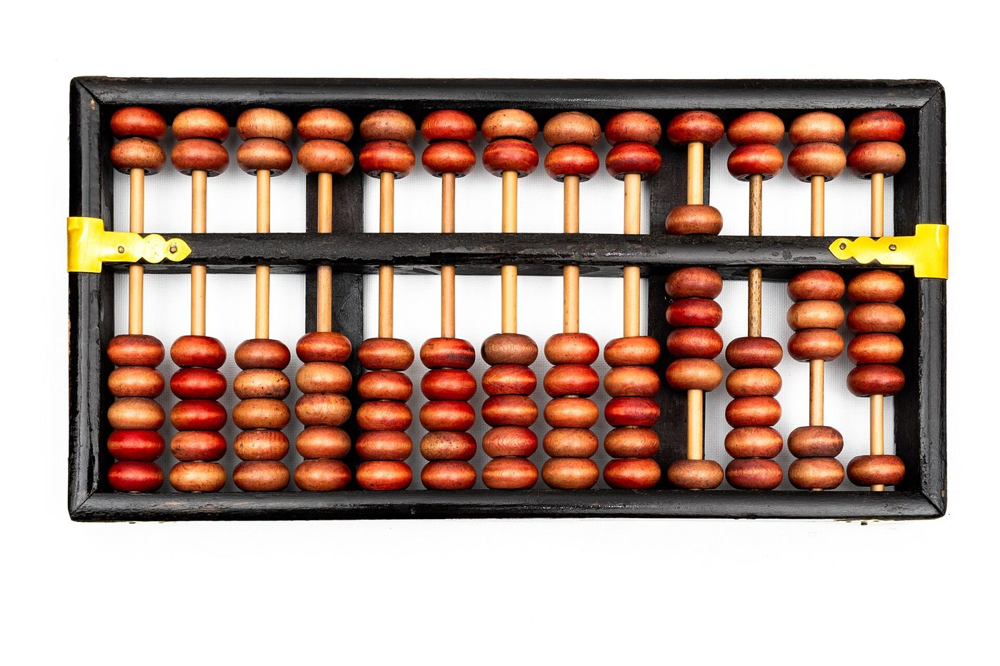
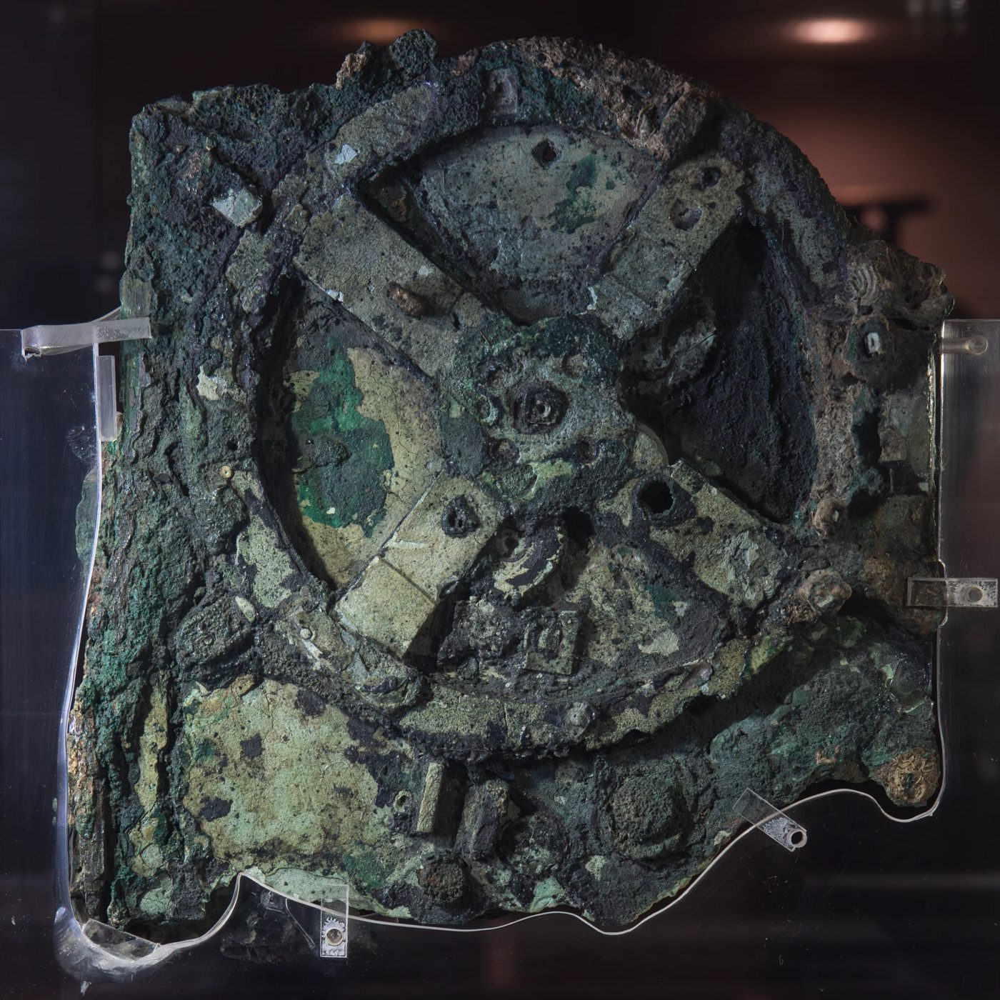
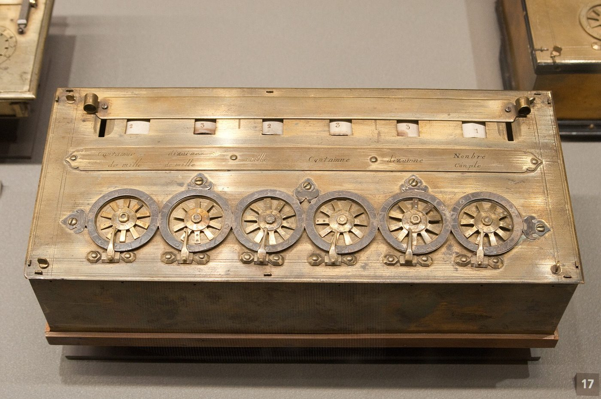
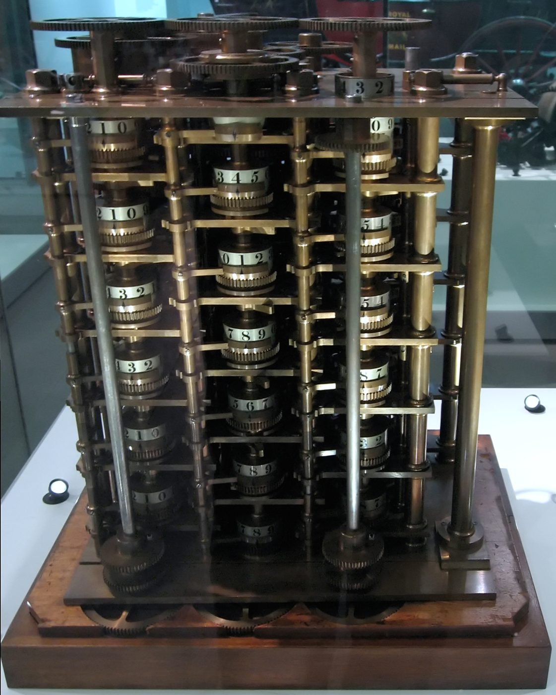
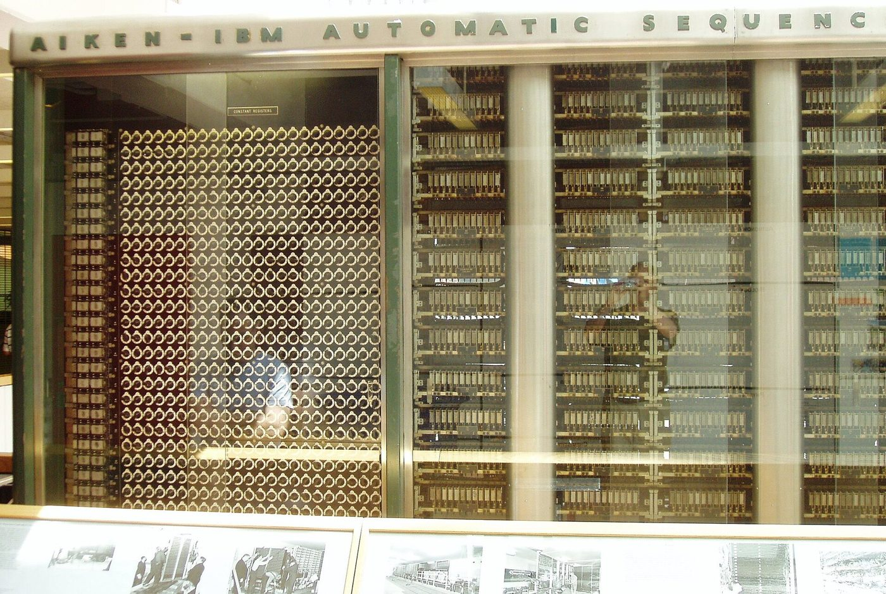
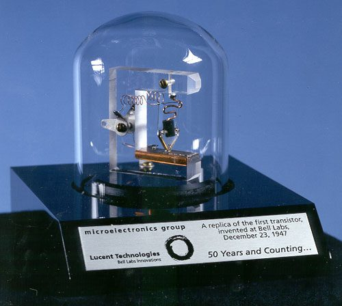
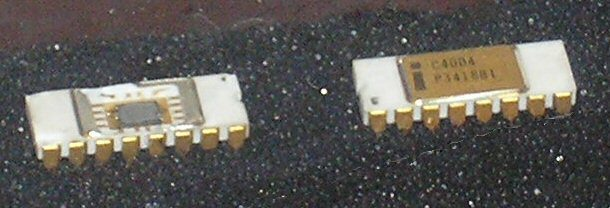
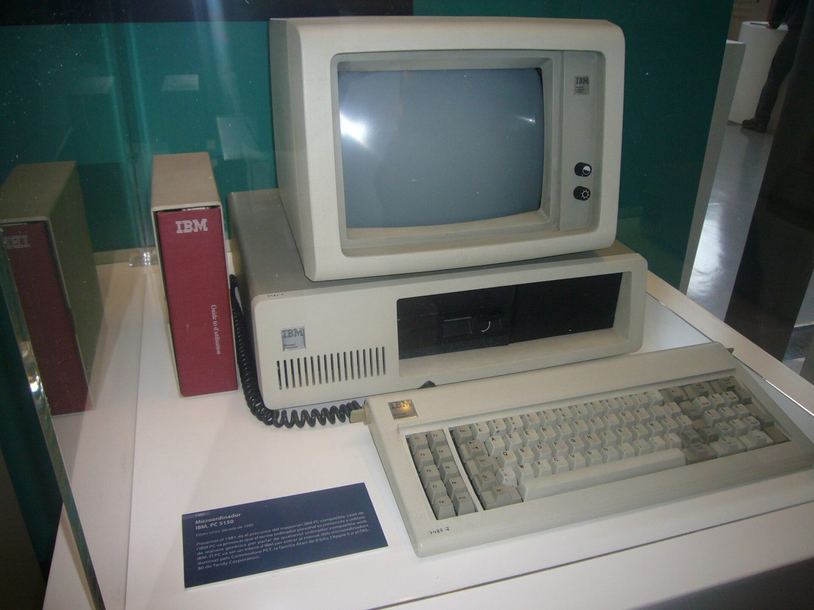
A história da computação não começa com eletricidade. Ela começa com uma necessidade muito humana: contar. Pastores contavam ovelhas com pedrinhas, comerciantes somavam mercadorias, astrônomos previam eclipses. Cada ferramenta que veio depois tentou fazer a mesma coisa: contar mais rápido, com menos erro e com menos esforço humano.
Vamos dividir essa história em sete eras.
O osso de Ishango (Congo, cerca de 20.000 anos) tem marcas entalhadas em grupos que muitos pesquisadores interpretam como registros de contagem. A própria palavra cálculo vem do latim calculus, que quer dizer "pedrinha", porque os romanos calculavam movendo pedrinhas sobre uma mesa.
Exemplo Exemplo: 37 + 25 no soroban
Você marca 37 (3 contas na dezena, 7 na unidade). Para somar 25, adiciona 5 nas unidades: 7 + 5 = 12, então deixa 2 nas unidades e "vai um" para a dezena. Depois adiciona 2 dezenas: 3 + 1 + 2 = 6. Resultado: 62. Esse "vai um" (o carry) é exatamente o que um circuito somador faz dentro do processador.
A data exata é debatida: a Britannica indica cerca de 100 a.C., estudos de 2014 e 2022 propõem 205 e 178 a.C., e o naufrágio é de c. 70–60 a.C. Ele foi encontrado em 1901 num naufrágio perto da ilha grega de Anticítera, é considerado o primeiro computador analógico conhecido. Ele tinha pelo menos 30 engrenagens de bronze e previa posições do Sol e da Lua, fases lunares, eclipses e até o calendário dos Jogos Olímpicos. Nada tão sofisticado voltou a aparecer na Europa por mais de mil anos.
| Ano | Invenção | Inventor | O que fazia |
|---|---|---|---|
| 1614–1617 | Logaritmos e Ossos de Napier | John Napier (Escócia) | Bastões numerados que transformavam multiplicação em soma |
| c. 1622 (publicada em 1632) | Régua de cálculo | William Oughtred (Inglaterra) | Usava escalas logarítmicas; foi a "calculadora" dos engenheiros até os anos 1970 (foi à Lua com a Apollo) |
| 1623 | Relógio calculador | Wilhelm Schickard (Alemanha) | Primeira calculadora mecânica documentada (somava e subtraía) |
| 1642–1645 | Pascalina | Blaise Pascal (França), iniciada aos 19 anos | Somava e subtraía com engrenagens; criada para ajudar o pai, cobrador de impostos |
| 1673 (concluída em 1694) | Stepped Reckoner | Gottfried Wilhelm Leibniz (Alemanha) | Fazia as quatro operações com o "cilindro de Leibniz" |
| 1703 (impresso em 1705) | Sistema binário descrito | Leibniz | Descreveu a aritmética só com 0 e 1, a base de todo computador digital |
| 1820 (patente) / 1851 (produção) | Aritmômetro | Thomas de Colmar (França) | Primeira calculadora mecânica fabricada e vendida em série |
Especialista Leibniz e o binário
Leibniz escreveu em 1703 (e publicou em 1705) o artigo Explication de l'Arithmétique Binaire. Ele ficou fascinado ao perceber que qualquer número pode ser escrito só com 0 e 1. Quase 250 anos depois, essa ideia virou a linguagem de todos os computadores.
Joseph-Marie Jacquard criou um tear que tecia padrões complexos lendo cartões perfurados. Onde havia furo, a agulha passava; onde não havia, ela parava. Na prática, os cartões eram um programa: trocando os cartões, o mesmo tear tecia outro desenho. Foi a primeira máquina programável de uso industrial, e o furo/não-furo já era um sistema binário.
| Parte da Máquina Analítica | Equivalente moderno |
|---|---|
| Mill ("moinho") | CPU (unidade de processamento) |
| Store ("armazém") | Memória |
| Leitor de cartões perfurados | Dispositivo de entrada |
| Impressora e perfurador de cartões | Dispositivo de saída |
| Desvios condicionais e laços | Programação (if, loops) |
Augusta Ada King, Condessa de Lovelace (1815–1852), filha do poeta Lord Byron, traduziu em 1843 um artigo sobre a Máquina Analítica e acrescentou notas três vezes maiores que o original. Na famosa Nota G, ela escreveu um algoritmo para calcular os números de Bernoulli, considerado o primeiro programa de computador publicado.
Mais importante ainda: Ada percebeu que a máquina poderia manipular símbolos, e não só números. Na Nota A, ela imaginou que uma máquina assim poderia até compor peças musicais elaboradas. E, na própria Nota G, fez uma ressalva que até hoje aparece nos debates sobre IA: a máquina "não tem pretensão alguma de originar coisa alguma", ou seja, só faz o que mandamos. Isso é, em essência, a ideia de computador de propósito geral.
Curiosidade
A linguagem de programação Ada, criada para o Departamento de Defesa dos EUA em 1980, recebeu esse nome em homenagem a ela. E a segunda terça-feira de outubro é o Ada Lovelace Day, dedicado às mulheres na ciência.
O matemático inglês George Boole publicou The Mathematical Analysis of Logic (1847) e The Laws of Thought (1854). Ele criou a álgebra booleana, em que tudo é verdadeiro (1) ou falso (0) e as operações são E (AND), OU (OR) e NÃO (NOT). Cada transistor do seu processador implementa essas operações.
Exemplo Exemplo de lógica booleana no dia a dia
"Vou à praia SE fizer sol E eu estiver de folga." - Sol = 1, Folga = 1 → Praia = 1 (vai) - Sol = 1, Folga = 0 → Praia = 0 (não vai)
Dentro da CPU existe uma porta AND que faz exatamente isso com sinais elétricos, bilhões de vezes por segundo.
O censo dos EUA de 1880 levou quase oito anos para ser apurado à mão. Herman Hollerith criou uma máquina tabuladora elétrica que lia cartões perfurados com os dados de cada cidadão: um pino passava pelo furo, fechava um circuito elétrico e avançava um contador. O censo de 1890 teve a contagem principal concluída em cerca de um ano.
A empresa de Hollerith (Tabulating Machine Company, 1896) se fundiu com outras em 1911 e, em 1924, passou a se chamar IBM (International Business Machines).
O britânico Alan Turing publicou em 1936 o artigo On Computable Numbers. Nele descreveu uma máquina teórica (a Máquina de Turing) com uma fita infinita, uma cabeça que lê e escreve símbolos e uma tabela de regras. Ele provou que uma máquina universal poderia simular qualquer outra máquina, desde que recebesse a descrição dela como dados. Isso é a definição teórica do computador moderno: uma única máquina, infinitos programas.
Durante a Segunda Guerra, Turing trabalhou em Bletchley Park quebrando a cifra alemã Enigma com a máquina eletromecânica Bombe. Em 1950, propôs o Teste de Turing para a inteligência das máquinas.
Curiosidade
Turing foi perseguido por ser homossexual e morreu em 1954. Recebeu perdão real póstumo em 2013 e, desde 2021, estampa a nota de 50 libras do Reino Unido. O filme O Jogo da Imitação (2014) conta parte da sua história.
Na sua dissertação de mestrado no MIT, escrita em 1937 e publicada em 1938, Claude Shannon mostrou que circuitos de relés elétricos podiam implementar a álgebra booleana. Muitos a consideram a dissertação de mestrado mais importante do século XX. Em 1948, Shannon publicou A Mathematical Theory of Communication, fundando a Teoria da Informação e popularizando a palavra bit.
| Ano | Máquina | Onde | Tecnologia | Destaque |
|---|---|---|---|---|
| 1938 | Z1 | Alemanha (Konrad Zuse) | Mecânica, binária | Montada na sala dos pais de Zuse |
| 1941 | Z3 | Alemanha (Zuse) | Eletromecânica (≈ 2.000–2.600 relés, conforme a fonte) | Primeiro computador programável e automático funcional |
| 1937–1942 | ABC (Atanasoff-Berry) | EUA (Iowa State) | Eletrônico (válvulas), binário | Primeiro computador eletrônico digital, mas não programável |
| 1944 | Colossus | Reino Unido (Tommy Flowers) | Eletrônico (Mark 1: ≈ 1.500–1.600 válvulas; Mark 2: 2.400) | Quebrava cifras nazistas (Lorenz); ficou em segredo até os anos 1970 |
| 1944 | Harvard Mark I | EUA (Howard Aiken + IBM) | Eletromecânico | 15 m de comprimento, ≈4,3 toneladas |
| 1945–1946 | ENIAC | EUA (Mauchly e Eckert) | Eletrônico (17.468 válvulas) | Primeiro eletrônico, digital, programável e de propósito geral |
| 1948 | Manchester Baby | Reino Unido | Eletrônico | Primeiro programa armazenado na memória (21/06/1948) |
| 1949 | EDSAC | Reino Unido (Maurice Wilkes) | Eletrônico | Primeiro com programa armazenado em uso regular |
| 1951 | UNIVAC I | EUA | Eletrônico | Primeiro computador comercial de sucesso nos EUA; previu a eleição de Eisenhower em 1952 |
O ENIAC e o debate sobre "qual foi o primeiro computador" ganham um módulo próprio, a seguir.
Em dezembro de 1947, John Bardeen, Walter Brattain e William Shockley, do Bell Labs, criaram o transistor, um interruptor eletrônico minúsculo feito de semicondutor (germânio e, depois, silício). Ele substituiu a válvula: era menor, mais barato, esquentava menos e quase não queimava. Os três ganharam o Nobel de Física em 1956.
Gordon Moore (cofundador da Intel) observou em 1965 que o número de transistores num chip dobrava a cada ano. Em 1975, ajustou a previsão para a cada dois anos. Essa "lei" (na verdade uma observação econômica) guiou a indústria por mais de 50 anos.
Exemplo Exemplo: a Lei de Moore em números
De 2.300 para 208 bilhões são cerca de 26 dobras em pouco mais de 50 anos, quase exatamente o que Moore previu.
O Intel 4004, anunciado em 15 de novembro de 1971, foi o primeiro microprocessador comercial: uma CPU inteira num único chip. Tinha cerca de 2.300 transistores (algumas fontes dizem 2.250), 4 bits, clock de 740 kHz e foi feito para uma calculadora da empresa japonesa Busicom. A equipe tinha Federico Faggin, Ted Hoff, Stan Mazor e o japonês Masatoshi Shima.
| Ano | Marco |
|---|---|
| 1973 | Xerox Alto: primeiro computador com interface gráfica, janelas e mouse (nunca vendido ao público) |
| 1975 | Altair 8800, primeiro microcomputador popular (kit). Bill Gates e Paul Allen fundam a Microsoft |
| 1976 | Steve Jobs e Steve Wozniak fundam a Apple; lançam o Apple I |
| 1977 | Apple II, Commodore PET e TRS-80, a "trindade" dos micros prontos para uso |
| 1981 | IBM PC 5150 (12 de agosto de 1981): processador Intel 8088 a 4,77 MHz e sistema MS-DOS. Nasce o padrão PC |
| 1984 | Apple Macintosh populariza a interface gráfica e o mouse |
| 1985 | Windows 1.0 |
| 1991 | Linux (Linus Torvalds) |
| 1995 | Windows 95, com menu Iniciar e plug-and-play |
| Ano | Marco |
|---|---|
| 1991 | Primeiro site da World Wide Web (CERN) |
| 1998 | Fundação do Google |
| 2006 | Amazon Web Services: começa a era da computação em nuvem |
| 2007 | iPhone; em 2008, o primeiro celular Android |
| 2012 | AlexNet: redes neurais treinadas em GPUs vencem o desafio ImageNet e começa o boom do deep learning |
| 2016 | AlphaGo (DeepMind) vence Lee Sedol no Go |
| 2017 | Artigo Attention Is All You Need (Google) cria a arquitetura Transformer, base do ChatGPT, do Claude e do Gemini |
| 2019 | Google Sycamore (53 qubits) faz um cálculo que alegadamente levaria milhares de anos num supercomputador |
| 2022 | ChatGPT (30 de novembro) leva a IA generativa ao grande público |
| 2024 | Google Willow (105 qubits) demonstra correção de erros quânticos abaixo do limiar |
| 2025–2026 | IA generativa em escala global; data centers de IA disparam a demanda por GPU, RAM e SSD, e os preços sobem para o consumidor |
Especialista Para aprofundar
O Computer History Museum (Mountain View, Califórnia) tem a maior coleção do mundo e uma linha do tempo online gratuita. O livro Os Inovadores, de Walter Isaacson, conta essa história a partir das pessoas, de Ada Lovelace a Larry Page.
1. Quem escreveu o que é considerado o primeiro programa de computador publicado?
Ada Lovelace, em 1843, na Nota G (números de Bernoulli).
2. O tear de Jacquard é importante porque...
Os cartões perfurados mudavam o padrão do tecido: um programa.
3. O primeiro microprocessador comercial foi o...
O Intel 4004 foi anunciado em novembro de 1971, com cerca de 2.300 transistores.
Parte II · História · Módulo 03
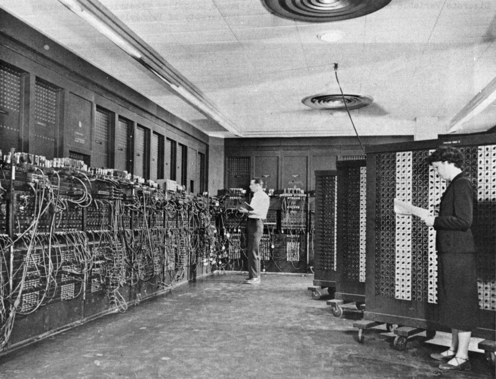
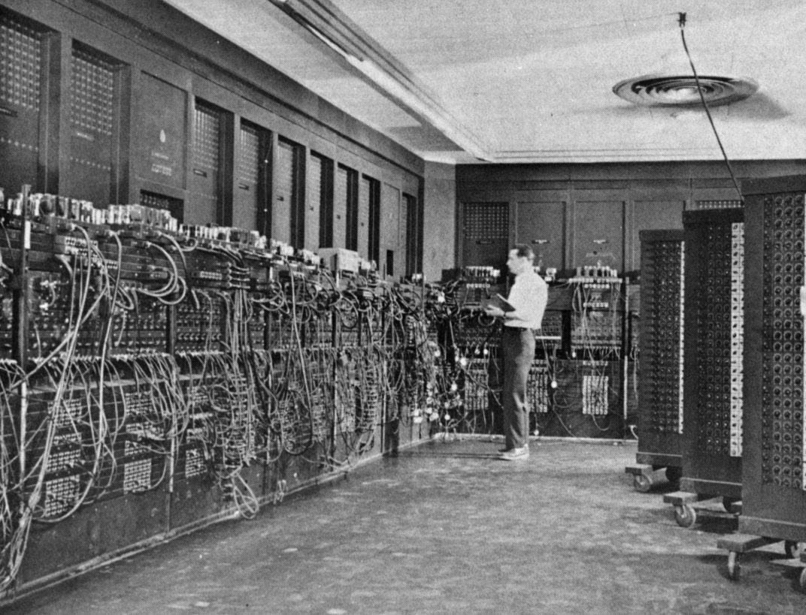
"Qual foi o primeiro computador?" parece uma pergunta simples, mas é uma das mais debatidas da história da tecnologia. A resposta depende de qual definição de computador você usa. Vamos resolver isso com critério de professor e depois mergulhar no ENIAC, o gigante que virou símbolo da era eletrônica.
Para chamar uma máquina de "computador moderno", os historiadores costumam exigir quatro características:
E existe um quinto critério, o mais rigoroso: programa armazenado, em que as instruções ficam na mesma memória que os dados.
| Máquina | Ano | Eletrônico | Digital | Programável | Propósito geral | Programa armazenado | Veredito |
|---|---|---|---|---|---|---|---|
| Máquina Analítica (Babbage) | 1837 (projeto) | ❌ | ✅ | ✅ | ✅ | ❌ | Primeiro projeto de computador, nunca construído |
| Z3 (Zuse) | 1941 | ❌ (relés) | ✅ | ✅ | ✅ (provado em 1998) | ❌ | Primeiro programável e automático funcional |
| ABC (Atanasoff-Berry) | 1942 | ✅ | ✅ | ❌ | ❌ | ❌ | Primeiro eletrônico digital |
| Colossus | 1944 | ✅ | ✅ | Parcial | ❌ | ❌ | Primeiro eletrônico programável, mas especializado |
| ENIAC | 1945/46 | ✅ | ✅ | ✅ | ✅ | ❌ (depois de 1948, parcialmente) | Primeiro eletrônico, digital, programável e de propósito geral |
| Manchester Baby | 1948 | ✅ | ✅ | ✅ | ✅ | ✅ | Primeiro com programa armazenado |
Dica Resposta de prova
Se perguntarem numa prova ou entrevista: "O ENIAC é considerado o primeiro computador eletrônico digital de propósito geral." E vale complementar: "O Z3 de Konrad Zuse (1941) foi o primeiro computador programável funcional, mas era eletromecânico, e o ABC (1942) foi o primeiro eletrônico digital, mas não era programável." Essa resposta mostra domínio do debate.
Eckert e Mauchly patentearam o ENIAC. Em 19 de outubro de 1973, na disputa judicial Honeywell v. Sperry Rand, um juiz federal dos EUA invalidou a patente. Ele considerou que Mauchly tinha visitado John Atanasoff em 1941 e se inspirado no ABC. Com isso, a ideia de "computador eletrônico digital" passou a ser de domínio público, o que ajudou a indústria a crescer sem pagar royalties.
ENIAC significa Electronic Numerical Integrator and Computer (Integrador e Computador Numérico Eletrônico).
| Característica | Valor |
|---|---|
| Válvulas termiônicas | 17.468 (algumas fontes arredondam para 18.000) |
| Diodos de cristal | ≈ 7.200 |
| Relés | ≈ 1.500 |
| Resistores | ≈ 70.000 |
| Capacitores | ≈ 10.000 |
| Juntas soldadas à mão | ≈ 5 milhões |
| Peso | ≈ 27 toneladas |
| Área ocupada | ≈ 167 m² (uma sala de 9 × 15 m) |
| Consumo elétrico | ≈ 150–160 kW (o equivalente a uns 27 chuveiros elétricos de 5.500 W ligados ao mesmo tempo) |
| Velocidade | ≈ 5.000 somas por segundo |
| Sistema numérico | Decimal (não binário), com 20 acumuladores de 10 dígitos |
| Programação | Cabos e chaves, reconectados à mão |
Exemplo Exemplo: ENIAC x celular
O ENIAC fazia 5.000 somas por segundo. Um celular intermediário de 2026 faz trilhões de operações por segundo, ou seja, centenas de milhões de vezes mais. E pesa 200 gramas contra 27 toneladas, gastando cerca de 5 watts contra 150.000 watts. Seu celular de bolso é mais potente que todos os computadores do mundo juntos em 1960.
O ENIAC foi programado por seis matemáticas, que não foram citadas na apresentação de 1946 e só receberam reconhecimento décadas depois:
Elas aprenderam a programar pelos diagramas elétricos, sem manual e sem linguagem de programação. Betty Holberton depois ajudou a criar o COBOL e o primeiro programa de ordenação (sort-merge) do UNIVAC. Elas foram incluídas no Women in Technology International Hall of Fame em 1997.
Curiosidade O mito do "bug"
É comum dizer que o termo "bug" nasceu de um inseto no ENIAC, mas não foi lá. Em 9 de setembro de 1947, a equipe de Grace Hopper, no Harvard Mark II, encontrou uma mariposa presa num relé e a colou no diário de bordo com a anotação "First actual case of bug being found". A palavra "bug" já era usada por engenheiros desde o tempo de Thomas Edison; a graça estava em ser um bug de verdade. O diário está no Smithsonian.
1. O ENIAC é considerado o primeiro computador...
O primeiro com programa armazenado foi o Manchester Baby (1948).
2. Como o ENIAC era programado?
Trocar de programa podia levar dias.
3. Quantas válvulas tinha o ENIAC?
Eram 17.468 válvulas, ≈ 27 toneladas e ≈ 150 kW.
Parte II · História · Módulo 04
A evolução do computador costuma ser ensinada em gerações. Cada geração é definida pela tecnologia do componente que faz a comutação, ou seja, o "liga/desliga" que representa os bits. Quando essa peça muda, tudo muda junto: tamanho, preço, consumo, velocidade e quem consegue ter um computador.
| Geração | Período | Tecnologia-chave | Exemplos | Velocidade típica | Programação |
|---|---|---|---|---|---|
| Geração 0 | até 1940 | Mecânica e eletromecânica (engrenagens, relés) | Pascalina, Z3, Harvard Mark I | Poucas operações por segundo | Cartões, chaves, fitas |
| 1ª geração | 1946–1958 | Válvulas termiônicas | ENIAC, UNIVAC I, IBM 701 | Milhares de operações/s | Linguagem de máquina, cabos |
| 2ª geração | 1958–1964 | Transistores | IBM 1401, IBM 7090 | Centenas de milhares de operações/s | Assembly, FORTRAN (1957), COBOL (1959) |
| 3ª geração | 1964–1971 | Circuitos integrados (CIs) | IBM System/360, PDP-8 | Milhões de operações/s | Sistemas operacionais, BASIC |
| 4ª geração | 1971–hoje | Microprocessadores (VLSI) | Intel 4004, IBM PC, Apple II, smartphones | Bilhões de operações/s | Linguagens de alto nível, interfaces gráficas |
| 5ª geração | 1980s–hoje | Processamento paralelo, IA, GPUs, nuvem | Supercomputadores, NVIDIA H100/B200 | Quatrilhões ou mais de operações/s (peta/exa) | IA, aprendizado de máquina |
| Fronteira | 2019– | Qubits (computação quântica) | Google Willow, IBM Heron | Outra lógica (não se mede da mesma forma) | Algoritmos quânticos |
| Componente | Antes | Hoje (2026) | Salto |
|---|---|---|---|
| Processador | Intel 4004 (1971): 2.300 transistores, 740 kHz | CPUs com dezenas de bilhões de transistores, 5–6 GHz, 16–24 núcleos (desktop) | ≈ 10 milhões de vezes mais transistores |
| Memória RAM | Altair 8800 (1975): 256 bytes | PCs com 16–64 GB de DDR5 | ≈ 100 milhões de vezes mais |
| Armazenamento | IBM 350 RAMAC (1956): 3,75 MB em 50 discos de 61 cm, ≈ 1 tonelada | HDs de 30+ TB; cartões microSD de 1–2 TB | Milhões de vezes mais, num espaço milhões de vezes menor |
| Disquete | 8" (1971): 80 KB → 5,25" → 3,5" (1,44 MB) | Pen drive de 256 GB | ≈ 180 mil disquetes num pen drive |
| Tela | Teletipo (papel), depois CRT monocromático | OLED 4K a 240 Hz | — |
| Rede | Modem acústico de 300 bps | Fibra de 1 Gbps em casa | ≈ 3 milhões de vezes mais rápida |
| Litografia (tamanho do transistor) | 10 µm (1971) | Processos "3 nm" e "2 nm" (nomes comerciais) | Transistores milhares de vezes menores |
Exemplo Exemplo: quanto cabe hoje no espaço de antes
Uma foto de celular de 2026 (≈ 4 MB) não caberia no IBM 350 RAMAC de 1956, que tinha 3,75 MB, pesava uma tonelada e o sistema completo em que ele funcionava (o IBM 305 RAMAC) era alugado por cerca de US$ 3.200 por mês. O disco sozinho saía por ≈ US$ 650–750 por mês. Hoje, um microSD do tamanho de uma unha guarda 1 TB, ou seja, umas 250 mil dessas fotos.
Especialista O fim da Lei de Moore?
Muitos especialistas, inclusive o CEO da NVIDIA, Jensen Huang, dizem que a Lei de Moore "desacelerou" ou "acabou" no sentido econômico, porque transistores menores não ficam mais baratos como antes. Já a Intel e a TSMC continuam anunciando processos mais densos (2 nm, 18A, 1.4 nm). O consenso: o ganho de desempenho agora vem mais da arquitetura, do empilhamento 3D de chips (chiplets, cache 3D) e da especialização do que apenas de encolher transistores.
| Onda | Período | Tecnologia dominante | O que mudou na vida das pessoas |
|---|---|---|---|
| Mainframe | 1950–1970 | Um computador gigante para muitos usuários | Bancos, censos e companhias aéreas automatizados |
| Minicomputador | 1965–1985 | Computadores de laboratório | Universidades e indústrias |
| PC | 1977–2005 | Um computador por pessoa | Escritório, escola, jogos em casa |
| Internet | 1995–hoje | Tudo conectado | E-mail, sites, comércio eletrônico |
| Mobile | 2007–hoje | Um computador no bolso | Apps, redes sociais, Pix, GPS |
| Nuvem | 2006–hoje | Computadores alugados em data centers | Streaming, backup, empresas sem servidor próprio |
| IA | 2012–hoje | Redes neurais em GPUs | Assistentes, geração de imagem e texto, tradução |
| Quântica | 2019– | Qubits | Ainda experimental: química, criptografia, otimização |
1. Qual tecnologia define a 2ª geração de computadores?
O transistor (1947) substituiu a válvula.
2. A Lei de Moore diz que...
Moore, em 1965 e revisando em 1975.
3. Por que os processadores passaram a ter vários núcleos por volta de 2005?
Mais núcleos deram mais desempenho sem esquentar tanto.
Parte II · História · Módulo 05
Se você abrir qualquer computador de hoje (o seu PC, o notebook, o celular, o servidor do banco), vai encontrar por dentro a mesma ideia organizadora, descrita em 1945. Ela se chama Arquitetura de Von Neumann, e entendê-la é entender como o computador "pensa".
John von Neumann (1903–1957) foi um matemático húngaro-americano, considerado um dos maiores gênios do século XX. Contribuiu para a mecânica quântica, a teoria dos jogos, a economia, o Projeto Manhattan e, claro, a computação. Ele se juntou como consultor ao grupo do ENIAC em 1944.
Em 30 de junho de 1945, circulou o documento "First Draft of a Report on the EDVAC" (Primeiro Rascunho de um Relatório sobre o EDVAC), assinado só por von Neumann. Ele descrevia como deveria ser o sucessor do ENIAC.
Atenção Justiça histórica
As ideias do relatório nasceram de discussões com Eckert e Mauchly, que já pensavam em programa armazenado, e o próprio Turing havia descrito a máquina universal em 1936. Como o rascunho circulou só com o nome de von Neumann, ele levou a fama e a arquitetura ganhou o nome dele. Muitos historiadores preferem o termo "arquitetura de programa armazenado".
No ENIAC, o programa ficava nos cabos (para mudar a tarefa, era preciso religar fios por dias), e os dados ficavam nos acumuladores eletrônicos.
A grande sacada de von Neumann foi: "Coloque as instruções do programa na mesma memória que os dados, como se fossem números." Consequências:
┌───────────────────────────────────────┐
│ UNIDADE CENTRAL DE PROCESSAMENTO │
│ ┌──────────────┐ ┌───────────────┐ │
ENTRADA ──►│ │ UNIDADE DE │ │ UNIDADE │ │──► SAÍDA
│ │ CONTROLE │◄►│ LÓGICA E │ │
│ │ (UC) │ │ ARITMÉTICA │ │
│ └──────┬───────┘ │ (ULA) │ │
│ │ └───────┬───────┘ │
│ │ Registradores │ │
└─────────┼──────────────────┼──────────┘
│ BARRAMENTO │
┌─────────▼──────────────────▼──────────┐
│ MEMÓRIA PRINCIPAL │
│ (instruções + dados, juntos) │
└───────────────────────────────────────┘
| Componente | Função | Equivalente no seu PC |
|---|---|---|
| Unidade de Controle (UC) | O "maestro": busca cada instrução, decodifica e manda as outras partes agirem | Parte interna da CPU |
| Unidade Lógica e Aritmética (ULA / ALU) | A "calculadora": soma, subtrai, compara, faz AND, OR, NOT | Parte interna da CPU (cada núcleo tem várias) |
| Registradores | Memória minúscula e ultrarrápida dentro da CPU | Registradores da CPU (ex.: RAX, RIP no x86-64) |
| Memória | Guarda instruções e dados | Memória RAM (com caches L1/L2/L3 no meio do caminho) |
| Entrada e Saída (E/S) | Comunicação com o mundo | Teclado, mouse, monitor, SSD, rede |
| Barramentos | As "estradas" que ligam tudo: endereço, dados e controle | Trilhas da placa-mãe, PCIe, canais de memória |
A CPU repete este ciclo bilhões de vezes por segundo:
Exemplo Exemplo: o computador calculando 2 + 3
Imagine que a memória tem este conteúdo:
| Endereço | Conteúdo | Significado |
|---|---|---|
| 100 | CARREGA A, [200] |
Instrução: ponha em A o valor do endereço 200 |
| 101 | SOMA A, [201] |
Instrução: some a A o valor do endereço 201 |
| 102 | GUARDA A, [202] |
Instrução: guarde A no endereço 202 |
| 200 | 2 |
Dado |
| 201 | 3 |
Dado |
| 202 | ? |
Resultado |
Repare que instruções e dados moram na mesma memória, lado a lado. Isso é Von Neumann.
Como instruções e dados passam pelo mesmo barramento entre CPU e memória, a CPU muitas vezes fica esperando a memória entregar as informações. O termo "gargalo de Von Neumann" (Von Neumann bottleneck) foi popularizado por John Backus (criador do FORTRAN) na palestra do Prêmio Turing em 1977.
Hoje o problema é ainda maior, porque a CPU ficou muito mais rápida que a RAM (o chamado memory wall). As soluções modernas:
| Solução | Como ajuda |
|---|---|
| Memória cache (L1, L2, L3) | Memória rápida dentro da CPU guarda o que foi usado recentemente; a CPU vai à RAM bem menos |
| Cache separado de instruções e dados (L1i / L1d) | Dentro do núcleo, usa a ideia de Harvard (veja abaixo) |
| Pré-busca (prefetch) e previsão de desvio | A CPU adivinha o que vai precisar e busca antes |
| Dual/quad channel de memória | Mais "estradas" em paralelo até a RAM |
| Cache 3D (AMD X3D) | Empilha cache extra em cima do chip, o que ajuda muito em jogos |
| HBM (High Bandwidth Memory) | Memória empilhada ao lado da GPU, usada em IA |
| Computação perto da memória | Pesquisa atual para processar dentro da própria memória |
Exemplo Exemplo do gargalo no dia a dia
Um processador gamer com mais cache (como o Ryzen 7 9800X3D, com 96 MB de L3) pode ganhar 10% a 30% de FPS em alguns jogos em relação a um modelo com clock parecido e menos cache. A ULA é a mesma; o ganho vem de não esperar a RAM.
| Von Neumann | Harvard | |
|---|---|---|
| Memória | Uma só, para instruções e dados | Duas separadas |
| Barramento | Compartilhado | Separados (busca instrução e dado ao mesmo tempo) |
| Vantagem | Simples, flexível, programa pode virar dado | Mais rápida e previsível |
| Desvantagem | Gargalo | Mais complexa, menos flexível |
| Origem do nome | Relatório do EDVAC (1945) | Harvard Mark I (1944), que lia instruções de fita perfurada separada dos dados |
| Onde se usa hoje | PCs, servidores, celulares (no nível da RAM) | Microcontroladores (Arduino/AVR, PIC), DSPs e o cache L1 das CPUs modernas |
Dica Resposta de prova
"Os computadores modernos usam uma arquitetura Harvard modificada: por fora (RAM) são Von Neumann, com uma memória única, e por dentro do núcleo (cache L1) são Harvard, com caches separados de instruções e de dados."
1. Qual é a ideia central da arquitetura de Von Neumann?
É o conceito de programa armazenado.
2. O que é o gargalo de Von Neumann?
A memória cache ajuda a reduzir esse gargalo.
3. Qual é a ordem do ciclo de instrução?
Fetch, decode, execute (e write-back).
Parte II · História · Módulo 06
Esta é a linha do tempo consolidada, do primeiro registro de contagem até a era da IA. Use-a para revisão: cada marco tem o ano, o nome, quem fez e por que importa. Na versão interativa (HTML), dá para filtrar por era e navegar clicando.
Dica Como memorizar a linha do tempo
Agrupe por "o que fazia o liga/desliga": dedos e pedras → engrenagens → cartões perfurados → relés → válvulas (1946) → transistores (1947) → chips (1958) → microprocessador (1971) → qubits (2019). Cada troca de tecnologia gerou uma nova geração.
Marcas entalhadas em grupos, interpretadas como registros de contagem.
Tábuas de contagem com colunas: primeira ideia de valor posicional.
Computador analógico de engrenagens de bronze que previa eclipses.
Multiplicação transformada em soma.
Usada por engenheiros até os anos 1970.
Calculadora mecânica de soma e subtração.
Fazia as quatro operações.
Todo número escrito só com 0 e 1.
Cartões perfurados como programa.
Calculava tabelas matemáticas sem erro humano.
Projeto com CPU (mill), memória (store), entrada e saída.
Nota G: algoritmo dos números de Bernoulli.
Lógica com verdadeiro/falso, E, OU, NÃO.
Origem do layout dos teclados.
Censo dos EUA com cartões perfurados; origem da IBM (1924).
Definição teórica do computador universal.
Relés implementam álgebra de Boole.
Primeiro computador programável e automático funcional (relés).
Primeiro computador eletrônico digital (não programável).
Quebra de códigos nazistas e cálculo científico.
Arquitetura de programa armazenado.
Primeiro eletrônico, digital, programável e de propósito geral.
Substitui a válvula; Nobel de 1956.
Primeiro programa armazenado executado.
Primeiro computador comercial de sucesso nos EUA.
3,75 MB em 50 discos de 61 cm.
Conferência de Dartmouth.
Cálculo do consumo de água na capital paulista.
Vários componentes em um chip.
Padrão de 7 bits para caracteres.
Família compatível; padroniza o byte de 8 bits.
Transistores dobram em intervalos regulares.
Mouse, hipertexto e videoconferência apresentados.
Primeira mensagem entre UCLA e SRI em 29/10/1969.
Primeiro microprocessador comercial.
Primeiro e-mail entre computadores em rede.
Primeiro computador projetado e construído no Brasil.
Interface gráfica, mouse e rede local.
Protocolo que une redes diferentes.
Microcomputador popular em kit.
Apple I; Apple II em 1977.
Intel 8088 a 4,77 MHz + MS-DOS: nasce o padrão PC.
1º de janeiro de 1983: 'nascimento' da internet.
Interface gráfica popular; reserva de mercado no Brasil.
Interface gráfica sobre o MS-DOS.
Primeiras conexões acadêmicas internacionais.
Hipertexto em rede; rede acadêmica brasileira.
Web aberta, Linux e o Brasil conectado à internet.
A internet aparece para o público no Rio de Janeiro.
Navegador gráfico popular.
Acesso ao público e criação do Comitê Gestor.
Busca na web por relevância.
Lançada como 'a primeira GPU do mundo'.
Computação em nuvem.
Smartphone moderno; GPU para cálculo geral.
Deep learning em GPUs vence o ImageNet.
Direitos e deveres na internet brasileira.
'Attention Is All You Need'.
53 qubits e o anúncio de 'supremacia quântica'.
Proteção de dados pessoais no Brasil.
IA generativa chega ao grande público.
105 qubits e correção de erros abaixo do limiar.
Demanda por GPUs, HBM e DRAM eleva preços de RAM e SSD.
| Pessoa | Contribuição | Época |
|---|---|---|
| Blaise Pascal | Pascalina, calculadora mecânica | 1642 |
| Gottfried Leibniz | Sistema binário, calculadora das quatro operações | 1673–1703 |
| Joseph-Marie Jacquard | Cartões perfurados como programa | 1804 |
| Charles Babbage | Máquinas Diferencial e Analítica, o "pai do computador" | 1822–1871 |
| Ada Lovelace | Primeiro programa publicado, a "mãe da programação" | 1843 |
| George Boole | Álgebra booleana | 1854 |
| Herman Hollerith | Tabuladora elétrica, origem da IBM | 1890 |
| Alan Turing | Máquina universal, Enigma, Teste de Turing, o "pai da ciência da computação" | 1936–1954 |
| Claude Shannon | Lógica em circuitos, teoria da informação, o "pai da era da informação" | 1937–1948 |
| Konrad Zuse | Z3, primeiro computador programável funcional | 1941 |
| John Atanasoff | ABC, primeiro eletrônico digital | 1942 |
| John Mauchly e J. Presper Eckert | ENIAC e UNIVAC | 1946–1951 |
| As seis programadoras do ENIAC | Primeiras programadoras de um computador eletrônico | 1945–1946 |
| John von Neumann | Arquitetura de programa armazenado | 1945 |
| Grace Hopper | Primeiro compilador (A-0, 1952), COBOL, o "bug" de 1947 | 1944–1986 |
| Bardeen, Brattain e Shockley | Transistor | 1947 |
| Jack Kilby e Robert Noyce | Circuito integrado | 1958–1959 |
| Gordon Moore | Lei de Moore, cofundador da Intel | 1965 |
| Federico Faggin | Projeto do Intel 4004 | 1971 |
| Douglas Engelbart | Mouse e hipertexto | 1968 |
| Vint Cerf e Bob Kahn | TCP/IP, os "pais da internet" | 1974 |
| Tim Berners-Lee | World Wide Web | 1989–1991 |
| Steve Jobs, Steve Wozniak, Bill Gates, Paul Allen | Computador pessoal | 1975–1985 |
| Linus Torvalds | Linux | 1991 |
| Geoffrey Hinton, Yann LeCun, Yoshua Bengio | Deep learning (Prêmio Turing de 2018) | 1980–hoje |
| Richard Feynman, David Deutsch, Peter Shor | Fundamentos da computação quântica | 1981–1994 |
| Demi Getschko, Tadao Takahashi, Michael Stanton | Pioneiros da internet no Brasil | 1988–1995 |
Parte III · Internet · Módulo 07
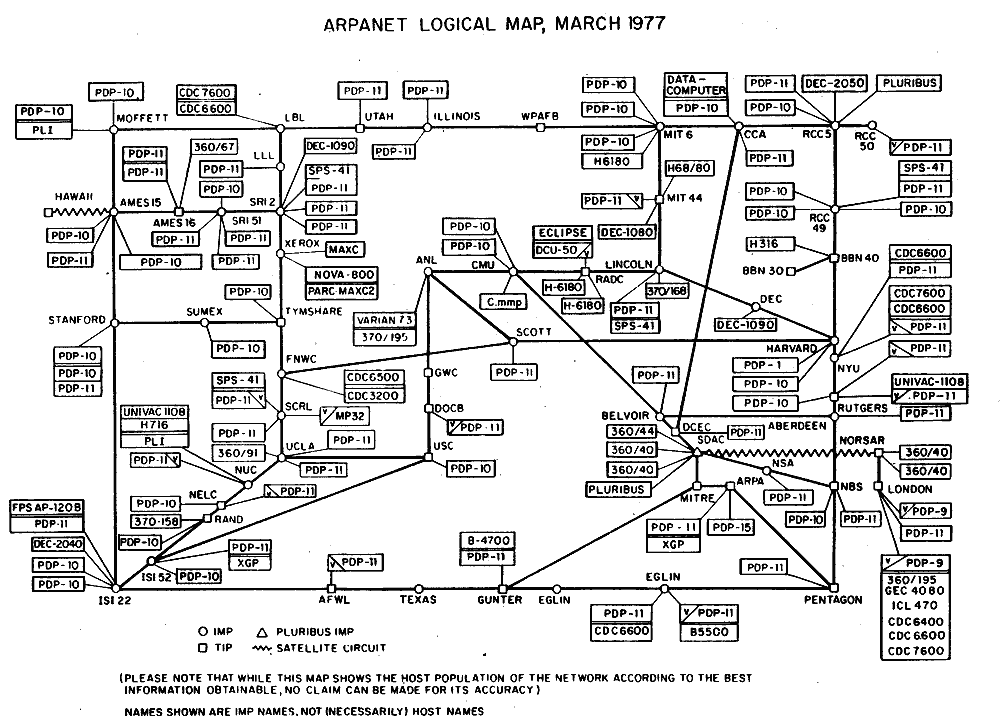
A internet não foi inventada por uma pessoa, nem num dia. Ela é uma rede de redes, construída em camadas, ao longo de décadas, por militares, cientistas, universidades e, depois, empresas. E é importante separar logo dois conceitos que quase todo mundo confunde:
Atenção Internet ≠ Web
E-mail, WhatsApp, jogos online e streaming também usam a internet, mas não são a Web.
Antes, as redes funcionavam como o telefone antigo: abria-se um circuito dedicado entre as duas pontas (a comutação de circuitos). Se um trecho caísse, a ligação caía.
Dois pesquisadores tiveram, de forma independente, a mesma ideia: - Paul Baran (RAND Corporation, EUA, 1960–1964): uma rede distribuída, sem centro, capaz de sobreviver a um ataque nuclear. - Donald Davies (National Physical Laboratory, Reino Unido, 1965–1966): concebeu a ideia em 1965 e criou o termo "pacote" num documento de 1966. - Leonard Kleinrock (MIT/UCLA) desenvolveu a teoria matemática das filas em redes (tese de 1962, livro de 1964). Atribuir a ele a invenção da comutação de pacotes é controverso: esse crédito costuma ir para Baran e Davies.
Como funciona a comutação de pacotes: a mensagem é dividida em pedaços (pacotes), cada um com o endereço de destino. Cada pacote pode seguir um caminho diferente e, no destino, eles são remontados na ordem certa. Se um caminho cair, os pacotes desviam.
Exemplo Exemplo: os Correios e o quebra-cabeça
Imagine mandar um quebra-cabeça de 1.000 peças para outra cidade, colocando cada peça num envelope com o endereço e o número da peça. Os envelopes vão por caminhões diferentes, chegam fora de ordem, e quem recebe monta o quebra-cabeça pelos números. Se um envelope se perder, o destinatário pede de novo só a peça 347. É exatamente assim que uma foto viaja pelo WhatsApp: em milhares de pacotes.
| Ano | Tamanho da ARPANET |
|---|---|
| 1969 | 4 nós |
| 1971 | 15 nós |
| 1973 | ≈ 40 nós (primeiras conexões internacionais: Noruega e Inglaterra) |
| 1981 | 213 hosts (computadores conectados) |
Em 1971, Ray Tomlinson (BBN) enviou o primeiro e-mail entre computadores diferentes pela ARPANET. Ele escolheu o símbolo @ (at, "em") para separar o usuário do computador: usuario@computador. Ele não lembrava o conteúdo da mensagem; provavelmente era algo como "QWERTYUIOP". O e-mail virou rapidamente o principal uso da rede.
Nos anos 1970 surgiram várias redes diferentes (rádio, satélite, ARPANET) que não conversavam entre si. Vint Cerf e Bob Kahn publicaram em 1974 o artigo A Protocol for Packet Network Intercommunication, descrevendo o TCP, mais tarde dividido em TCP + IP:
| Protocolo | Função | Analogia |
|---|---|---|
| IP (Internet Protocol) | Endereça e encaminha cada pacote | O endereço escrito no envelope |
| TCP (Transmission Control Protocol) | Garante que todos os pacotes cheguem, na ordem, sem erro | O aviso de recebimento e a numeração das peças |
| UDP | Envia rápido, sem garantia | Panfleto jogado por baixo da porta (usado em chamadas de vídeo e jogos) |
Em 1º de janeiro de 1983 (o flag day), a ARPANET trocou oficialmente seu protocolo antigo (NCP) pelo TCP/IP. Muitos historiadores consideram essa data o nascimento da internet como a conhecemos.
Cada computador tem um endereço IP numérico (por exemplo, 142.250.79.46). Decorar isso é impossível. Em 1983, Paul Mockapetris criou o DNS (Domain Name System), a "lista telefônica" da internet, que traduz google.com em números. Os primeiros domínios .com foram registrados em 1985 (o primeiro foi symbolics.com, em 15 de março de 1985).
Exemplo Exemplo: o que acontece quando você digita um endereço
hgsdev.com.br.Tudo isso leva, normalmente, menos de meio segundo.
info.cern.ch, funcionava no CERN desde dezembro de 1990. Em 6 de agosto de 1991, Berners-Lee anunciou a Web publicamente no grupo de discussão alt.hypertext. O site ainda está no ar, restaurado pelo CERN.Especialista Tim Berners-Lee
Berners-Lee nunca patenteou a Web. Ele foi nomeado cavaleiro (Sir) em 2004, ganhou o Prêmio Turing de 2016 (anunciado em 2017) e fundou o W3C, consórcio que mantém os padrões da Web até hoje. Na abertura das Olimpíadas de Londres (2012), apareceu digitando a mensagem "This is for everyone" ("Isto é para todos").
| Ano | Marco |
|---|---|
| 1993 | Mosaic (NCSA, Marc Andreessen e Eric Bina): primeiro navegador popular com imagens na página |
| 1994 | Netscape Navigator; fundação da Amazon e do Yahoo! |
| 1995 | Internet Explorer, eBay, linguagem JavaScript (Brendan Eich, em 10 dias) |
| 1997 | Wi-Fi (padrão IEEE 802.11) |
| 1998 | |
| 2000–2001 | Estouro da bolha da internet (dot-com): empresas sem lucro quebram |
| Período | O que mudou |
|---|---|
| 2004–2006 | Web 2.0: o usuário cria conteúdo (Facebook, YouTube, Wikipedia, Orkut, que foi febre no Brasil) |
| 2007–2010 | Smartphones e 3G/4G: a internet vai para o bolso |
| 2010–2020 | Nuvem, streaming (Netflix, Spotify), redes sociais e apps de mensagem |
| 2012 | IPv6 ativado em larga escala, porque os endereços IPv4 estavam acabando (só existem cerca de 4,3 bilhões) |
| 2019–hoje | 5G, Wi-Fi 6/7, fibra óptica residencial, internet via satélite de baixa órbita (Starlink) |
| 2022–hoje | IA generativa acessada pela internet |
Curiosidade Curiosidade: quem "manda" na internet?
Ninguém sozinho. Os padrões técnicos são definidos pela IETF (documentos chamados RFCs), os padrões da Web pelo W3C, e os números IP e nomes de domínio são coordenados pela ICANN/IANA. Cada país administra seu domínio; o .br é do NIC.br.
| Camada | O que faz | Exemplos |
|---|---|---|
| Aplicação | O serviço que o usuário usa | HTTP/HTTPS (Web), SMTP (e-mail), DNS |
| Transporte | Entrega confiável ou rápida | TCP, UDP |
| Internet (rede) | Endereçamento e rota | IP (IPv4, IPv6) |
| Acesso à rede (enlace + físico) | O meio físico | Ethernet (cabo), Wi-Fi, fibra, 4G/5G |
A placa de rede do seu computador trabalha nas camadas mais baixas (física e enlace). Veremos isso em detalhe no módulo de Placa de Rede.
1. Internet e Web são a mesma coisa?
A internet é a infraestrutura (TCP/IP); a Web são páginas e links.
2. Qual foi a primeira mensagem da ARPANET?
O sistema travou depois de "LO", em 29/10/1969.
3. Quem criou a World Wide Web?
No CERN, entre 1989 e 1991.
Parte III · Internet · Módulo 08
A internet chegou ao Brasil pelas universidades e centros de pesquisa, no fim dos anos 1980, numa época em que computador ainda era raro e caro por causa da reserva de mercado. Só em 1995 ela foi aberta ao público. Esta é a história, com as datas reconhecidas pelo NIC.br, pelo CGI.br e pela RNP.
| Ano | Marco |
|---|---|
| 1988–1989 | LNCC (Rio, set./out. de 1988) e Fapesp (São Paulo, do fim de 1988 a abril de 1989) se conectam à rede acadêmica Bitnet |
| 1989 | O domínio .br é delegado à Fapesp (18 de abril); criação da RNP – Rede Nacional de Pesquisa (setembro) |
| 1989 | O Ibase lança o Alternex (julho), serviço de correio eletrônico e conferências para ONGs |
| 1991 | Início do ano (janeiro): primeiro tráfego TCP/IP, ou seja, o Brasil passa a fazer parte da internet de fato |
| 1992 | Conferência Eco-92 no Rio: a internet aparece para o público e a imprensa; a RNP inaugura seu primeiro backbone |
| 1994 | Dezembro: a Embratel anuncia serviço experimental de acesso para pessoas físicas |
| 1995 | 31 de maio: abertura da internet comercial; a Portaria Interministerial nº 147 cria o CGI.br e a Portaria MC nº 148 aprova a Norma 004/95, que define internet como "serviço de valor adicionado" |
| 1996 | Explosão dos provedores: UOL (28 de abril), ZAZ (depois Terra), BOL; o iG viria em 9 de janeiro de 2000 |
| 1999–2001 | Chega a banda larga por ADSL (Speedy, em 17/11/1999, com até 2 Mbps; Velox, Turbo) e por TV a cabo (Virtua, da NET; Ajato) |
| 2005 | Em dezembro, o CGI.br formaliza o NIC.br como braço executivo e gestor do .br |
| 2014 | Marco Civil da Internet (Lei 12.965/2014) |
| 2018–2021 | LGPD (Lei 13.709/2018), em vigor desde 18/09/2020, com multas aplicáveis desde 1º/08/2021 |
| 2020 | Pix (novembro) e explosão da fibra óptica por pequenos provedores regionais |
| 2021–2022 | Anatel libera a faixa de 6 GHz para Wi-Fi (fevereiro de 2021, um dos primeiros países) e leilão do 5G (novembro de 2021); 5G começa a operar em 2022 |
Antes da internet TCP/IP, as universidades do mundo trocavam e-mail e arquivos pela Bitnet (Because It's Time Network), uma rede acadêmica criada em 1981 nos EUA.
As velocidades eram de 4.800 a 9.600 bits por segundo. Uma foto de celular de hoje (4 MB) levaria quase duas horas para passar.
Em 18 de abril de 1989, o domínio de país .br foi delegado (por Jon Postel e Paul Mockapetris) aos responsáveis pela rede acadêmica na Fapesp. Quem cuidou disso foi o engenheiro Demi Getschko, chamado de "pai da internet brasileira". Ele é integrante do Internet Hall of Fame (2014) e diretor-presidente do NIC.br.
Em setembro de 1989 nasceu a RNP – Rede Nacional de Pesquisa (hoje Rede Nacional de Ensino e Pesquisa), como projeto do CNPq no âmbito do Ministério da Ciência e Tecnologia. Ela foi fundada e coordenada de 1989 a 1996 por Tadao Takahashi. Seu objetivo era construir uma rede nacional ligando universidades e institutos.
Segundo a revista Pesquisa FAPESP, os primeiros sinais com o protocolo TCP/IP chegaram "em um dia incerto de janeiro de 1991", pelo link da Fapesp com a rede ESnet, via Fermilab. Algumas apresentações citam 7 de fevereiro de 1991. Na prática, foi quando o Brasil passou a fazer parte da internet de verdade, e não só de redes acadêmicas isoladas.
Especialista Michael Stanton
O professor Michael Stanton, britânico radicado no Brasil (PUC-Rio, UFF e, depois, diretor de inovação da RNP), foi um dos arquitetos técnicos das primeiras redes acadêmicas e é uma das principais fontes sobre essa história.
A Conferência das Nações Unidas sobre Meio Ambiente e Desenvolvimento (Eco-92 ou Rio-92), em junho de 1992, reuniu chefes de Estado e milhares de ONGs no Rio de Janeiro. A RNP e o Ibase / Alternex, em parceria com a rede internacional de ONGs APC, montaram uma infraestrutura que permitiu a delegações e jornalistas usar e-mail e conferências eletrônicas. Para muita gente, foi o primeiro contato com a internet.
No mesmo ano, a RNP inaugurou seu backbone nacional, ligando capitais com linhas de 9,6 kbps a 64 kbps.
Curiosidade Herbert de Souza, o Betinho
O Ibase foi fundado pelo sociólogo Herbert de Souza (Betinho), conhecido pela campanha contra a fome. O Alternex, lançado pelo Ibase em julho de 1989 (no início, um sistema de BBS com trocas internacionais agendadas), é considerado o primeiro serviço de internet aberto ao público fora das universidades no Brasil, voltado à sociedade civil.
Acessar a internet em 1996 exigia: 1. Um computador com modem (14,4 ou 28,8 kbps, depois 56 kbps). 2. Uma linha telefônica, que ficava ocupada durante a conexão. 3. Uma conta num provedor, normalmente paga. 4. Paciência para o famoso barulho do modem discando.
Muitos brasileiros esperavam a meia-noite ou o fim de semana para se conectar por causa do "pulso único": entre meia-noite e 6h, de segunda a sábado, e do sábado às 14h até as 6h da segunda (e nos feriados), a ligação local inteira custava um único pulso, fosse qual fosse a duração.
Exemplo Exemplo: quanto demorava baixar uma música
Uma música MP3 de 4 MB numa conexão discada de 56 kbps (≈ 5 KB/s reais): 4.000 KB ÷ 5 KB/s = 800 segundos ≈ 13 minutos, se a conexão não caísse. Com fibra de 500 Mbps (≈ 60 MB/s reais): 4 MB ÷ 60 MB/s ≈ 0,07 segundo.
| Ano | Provedores e portais marcantes |
|---|---|
| 1995 | Provedores pioneiros regionais, Mandic BBS |
| 1996 | UOL (28 de abril), ZAZ (que virou Terra), Brasil Online |
| 2000 | iG (internet grátis, 9 de janeiro de 2000), BOL grátis |
| 2004 | Orkut: o Brasil vira o maior usuário da rede social do Google |
Dica Para citar em trabalho
A fonte oficial mais confiável sobre o tema são as publicações do CGI.br e do NIC.br (incluindo apresentações de Demi Getschko) e as notícias históricas da RNP. Para estatísticas de uso, a pesquisa anual TIC Domicílios do Cetic.br.
1. Que órgão foi criado em 31/05/1995 para coordenar a internet no Brasil?
Criado pela Portaria Interministerial nº 147.
2. Quem é chamado de "pai da internet brasileira"?
Ele cuidou do .br na Fapesp e está no Internet Hall of Fame (2014).
3. A internet chegou ao Brasil primeiro por meio de...
LNCC, Fapesp e UFRJ, entre 1988 e 1989, pela Bitnet.
Parte IV · Linguagem do computador · Módulo 09
Tudo o que o computador guarda ou processa (texto, foto, música, vídeo, jogo, IA) vira, no fim, uma sequência de 0 e 1. Para medir o tamanho dessas sequências, usamos bits, bytes e seus múltiplos. Este módulo ensina o que cada unidade é, de onde veio e, principalmente, como calcular.
Bit é a menor unidade de informação. Ele só pode ter dois valores: 0 ou 1. Pode representar sim/não, ligado/desligado, verdadeiro/falso.
Bit é a contração de binary digit (dígito binário). O termo foi criado pelo estatístico John W. Tukey em 1947, no Bell Labs, e popularizado por Claude Shannon no artigo de 1948 que fundou a Teoria da Informação.
| Onde | 0 | 1 |
|---|---|---|
| Processador e RAM | Tensão baixa (≈ 0 V) | Tensão alta (≈ 1,1 V na DDR5) |
| HD | Domínio magnético num sentido | No sentido oposto |
| SSD | Célula com uma carga elétrica | Célula com outra carga |
| CD/DVD | Sem transição na trilha | Transição entre pit (cavidade) e land (plano) |
| Fibra óptica | Luz apagada ou fraca | Luz acesa ou forte |
| Wi-Fi | Uma fase ou amplitude da onda | Outra fase ou amplitude |
Com n bits, dá para representar 2ⁿ combinações diferentes:
| Bits | Combinações | Exemplo de uso |
|---|---|---|
| 1 | 2 | Interruptor: ligado ou desligado |
| 2 | 4 | As quatro estações |
| 4 | 16 | Um dígito hexadecimal (0–F) |
| 7 | 128 | A tabela ASCII original |
| 8 | 256 | Um byte; tons de cada cor num pixel |
| 16 | 65.536 | Cores do "High Color"; áudio de CD por amostra |
| 24 | 16.777.216 | "16 milhões de cores" (8 bits × 3 cores RGB) |
| 32 | ≈ 4,3 bilhões | Endereços IPv4; limite de 4 GB de RAM dos sistemas de 32 bits |
| 64 | ≈ 18,4 quintilhões | Processadores e sistemas de 64 bits |
| 128 | ≈ 3,4 × 10³⁸ | Endereços IPv6 |
Exemplo Exemplo: por que o Windows de 32 bits só usava 4 GB de RAM
Um sistema de 32 bits endereça 2³² posições de memória = 4.294.967.296 bytes = 4 GiB. Mesmo com 8 GB instalados, ele "enxergava" no máximo 4 GB (na prática, uns 3,2–3,5 GB, porque parte dos endereços ia para a placa de vídeo e outros dispositivos). Com 64 bits, o limite teórico passou para 16 exabytes.
O sistema binário é posicional, como o decimal, só que cada posição vale o dobro da anterior (potências de 2):
| Posição | 7 | 6 | 5 | 4 | 3 | 2 | 1 | 0 |
|---|---|---|---|---|---|---|---|---|
| Valor | 128 | 64 | 32 | 16 | 8 | 4 | 2 | 1 |
Exemplo Exemplo: converter binário para decimal
01000001 = 0×128 + 1×64 + 0×32 + 0×16 + 0×8 + 0×4 + 0×2 + 1×1 = 64 + 1 = 65.
65 é a letra "A" na tabela ASCII. Ou seja, quando você digita "A", o computador guarda 01000001.
Exemplo Exemplo: converter decimal para binário (divisões sucessivas)
Converter 13: - 13 ÷ 2 = 6, resto 1 - 6 ÷ 2 = 3, resto 0 - 3 ÷ 2 = 1, resto 1 - 1 ÷ 2 = 0, resto 1
Lendo os restos de baixo para cima: 1101. Conferindo: 8 + 4 + 0 + 1 = 13. ✔
Escrever binário é cansativo. Por isso se usa hexadecimal (base 16): cada dígito hexa representa exatamente 4 bits. Os dígitos vão de 0 a 9 e depois de A (10) a F (15).
1111 1111 = FF = 2550100 0001 = 41 = 65 = "A"#FF0000 = vermelho puro (R=255, G=0, B=0)3C:52:82:1A:9F:04Byte é um conjunto de 8 bits. É a unidade básica de armazenamento: o tamanho de um caractere simples (como "A") e a menor porção de memória que o computador endereça.
O termo byte foi criado por Werner Buchholz, da IBM, em 1956, durante o projeto do supercomputador IBM Stretch. A grafia com "y" (em vez de bite, "mordida") foi proposital, para não confundir com bit. No começo, um byte podia ter de 1 a 6 bits. O IBM System/360 (1964) padronizou o byte de 8 bits, que virou norma mundial.
Curiosidade Nibble e octeto
| Símbolo | Significa | Usado em |
|---|---|---|
| b (minúsculo) | bit | Velocidade de internet: Mbps = megabits por segundo |
| B (maiúsculo) | Byte | Tamanho de arquivo e armazenamento: MB, GB |
Essa diferença é a causa da maior confusão do cliente de internet. Veremos no próximo módulo.
Aqui está o ponto que separa o leigo do profissional. Existem dois jeitos de contar:
Para acabar com a confusão, em 1998 a IEC (Comissão Eletrotécnica Internacional) criou prefixos binários próprios: kibi (KiB), mebi (MiB), gibi (GiB), tebi (TiB).
| Nome (SI) | Símbolo | Valor decimal | Nome (IEC) | Símbolo | Valor binário |
|---|---|---|---|---|---|
| Kilobyte | KB (kB) | 1.000 bytes | Kibibyte | KiB | 1.024 bytes |
| Megabyte | MB | 1.000.000 bytes | Mebibyte | MiB | 1.048.576 bytes |
| Gigabyte | GB | 10⁹ bytes | Gibibyte | GiB | 1.073.741.824 bytes |
| Terabyte | TB | 10¹² bytes | Tebibyte | TiB | 1.099.511.627.776 bytes |
| Petabyte | PB | 10¹⁵ bytes | Pebibyte | PiB | 2⁵⁰ bytes |
| Exabyte | EB | 10¹⁸ bytes | Exbibyte | EiB | 2⁶⁰ bytes |
| Zettabyte | ZB | 10²¹ bytes | Zebibyte | ZiB | 2⁷⁰ bytes |
| Yottabyte | YB | 10²⁴ bytes | Yobibyte | YiB | 2⁸⁰ bytes |
Em 2022, o SI adotou ainda o ronnabyte (RB, 10²⁷) e o quettabyte (QB, 10³⁰).
Esta é a pergunta que todo técnico escuta. O cliente não foi enganado. O fabricante vende em decimal e o Windows mostra em binário:
Exemplo Exemplo resolvido: 1 TB no Windows
O Windows mostra "931 GB", mas na verdade são 931 GiB. Não sumiu nada: é a mesma quantidade de bytes, em outra unidade. E ainda há uma pequena parte usada pela formatação e pelas partições de recuperação.
| Capacidade vendida | O Windows mostra (aprox.) | "Perda" aparente |
|---|---|---|
| 128 GB | 119 GB | 7% |
| 256 GB | 238 GB | 7% |
| 500 GB | 465 GB | 7% |
| 1 TB | 931 GB | 7% |
| 2 TB | 1,81 TB | 9% |
| 4 TB | 3,63 TB | 9% |
A diferença cresce com a unidade: ≈ 2,4% no KB, ≈ 4,9% no MB, ≈ 7,4% no GB e ≈ 9,9% no TB.
Exemplo Exemplo 1: quantas fotos cabem num celular de 128 GB?
Exemplo Exemplo 2: quantas músicas cabem num pen drive de 32 GB?
Exemplo Exemplo 3: quanto espaço ocupa uma foto sem compressão?
Uma foto de 12 megapixels com 24 bits por pixel (3 bytes): 12.000.000 × 3 = 36.000.000 bytes = 36 MB sem compressão. Em JPEG, ela cai para ≈ 3–5 MB. A compressão reduz o tamanho entre 7 e 12 vezes.
Exemplo Exemplo 4: quantos bits tem um arquivo de 2 MB?
2 MB = 2.000.000 bytes × 8 = 16.000.000 bits (16 megabits).
| Situação | Unidade usada | Exemplo |
|---|---|---|
| Comprar SSD ou HD | GB / TB (decimal) | SSD de 1 TB |
| Comprar memória RAM | GB (na prática, binário: 16 GB = 16 GiB) | 2 × 8 GB DDR5 |
| Tamanho de arquivo no Windows | KB, MB, GB (binários com nome SI) | "Vídeo.mp4 – 1,2 GB" |
| Velocidade de internet | Mbps, Gbps (bits!) | Fibra de 500 Mbps |
| Velocidade de SSD | MB/s, GB/s (bytes) | NVMe de 7.000 MB/s |
| Cache de processador | MB | 32 MB de L3 |
| Memória de vídeo (VRAM) | GB | RTX com 8 GB |
| Plano de celular | GB por mês | 30 GB |
1. Quantos bits tem um byte?
1 byte = 8 bits = 256 valores.
2. Por que um HD de 1 TB aparece com ≈ 931 GB no Windows?
São os mesmos bytes medidos em unidades diferentes (TB × TiB).
3. Quanto é 01000001 em decimal?
64 + 1 = 65, a letra "A" em ASCII.
Parte IV · Linguagem do computador · Módulo 10
Se bits e bytes medem quanto, hertz e bits por segundo medem quão rápido. São as unidades mais citadas nas propagandas (e as mais mal entendidas). Vamos desmontar cada uma.
Hertz é a unidade de frequência: o número de ciclos (repetições) por segundo. - 1 Hz = 1 ciclo por segundo - 1 kHz (quilohertz) = 1.000 Hz - 1 MHz (megahertz) = 1.000.000 Hz - 1 GHz (gigahertz) = 1.000.000.000 Hz
Nas frequências, o prefixo é sempre decimal (1.000), nunca 1.024.
O nome homenageia o físico alemão Heinrich Rudolf Hertz (1857–1894), que em 1887 provou experimentalmente a existência das ondas eletromagnéticas previstas por James Clerk Maxwell, base do rádio, do Wi-Fi e do celular. A unidade foi adotada pela IEC em 1930 e pelo Sistema Internacional (SI) em 1960, substituindo o antigo "ciclos por segundo" (cps).
Dentro do computador, um cristal de quartzo vibra numa frequência fixa (normalmente 25 MHz ou 100 MHz) e gera um sinal de "batida", o clock base. Circuitos chamados PLL multiplicam essa frequência para chegar a vários GHz.
Cada "batida" do clock é um ciclo. A cada ciclo, a CPU avança uma etapa do seu trabalho. Pense num metrônomo ditando o ritmo para uma orquestra inteira.
Exemplo Exemplo: o que significa um processador de 5 GHz
5 GHz = 5 bilhões de ciclos por segundo. Cada ciclo dura 1 ÷ 5.000.000.000 = 0,2 nanossegundo. Nesse tempo, a luz percorre apenas 6 centímetros. É por isso que as trilhas da placa-mãe precisam ser tão curtas e bem desenhadas.
Este é um erro clássico. O desempenho de uma CPU depende de:
Desempenho ≈ Clock (GHz) × IPC × Número de núcleos (conforme o software usa)
Exemplo Exemplo: o caso Pentium 4
Em 2004, o Pentium 4 chegava a 3,8 GHz. Em 2006, o Core 2 Duo de 2,4 GHz era mais rápido que ele, porque fazia muito mais trabalho por ciclo (IPC maior) e tinha dois núcleos. A Intel abandonou a "corrida dos GHz" justamente por isso. Hoje, um Core i5 de 2026 a 4,5 GHz é várias vezes mais rápido que um Core i7 de 2012 também a 4,5 GHz.
No monitor, os hertz indicam quantas vezes por segundo a imagem é redesenhada: - 60 Hz: o padrão de escritório. - 144–165 Hz: o padrão gamer de entrada. - 240–540 Hz: monitores de e-sports.
Para aproveitar um monitor de 144 Hz, a placa de vídeo precisa entregar 144 FPS (quadros por segundo). FPS é da GPU; Hz é do monitor.
bps = bits por segundo. É a unidade de taxa de transmissão de dados: velocidade de internet, de rede, de cabos e de barramentos seriais.
| Unidade | Valor | Exemplo |
|---|---|---|
| bps | 1 bit/s | — |
| kbps | 1.000 bits/s | Modem discado: 56 kbps; MP3: 128–320 kbps |
| Mbps | 1.000.000 bits/s | Internet residencial: 100–1.000 Mbps |
| Gbps | 1.000.000.000 bits/s | Fibra de 1 Gbps, rede Gigabit, USB 3.2 (5–20 Gbps) |
Aqui também os prefixos são decimais (1.000).
O provedor vende em megabits por segundo (Mbps). O navegador, a Steam e o Windows mostram o download em megabytes por segundo (MB/s). Como 1 byte = 8 bits:
MB/s = Mbps ÷ 8
| Plano contratado | Velocidade máxima de download real (≈) |
|---|---|
| 50 Mbps | 6,25 MB/s |
| 100 Mbps | 12,5 MB/s |
| 300 Mbps | 37,5 MB/s |
| 500 Mbps | 62,5 MB/s |
| 1 Gbps | 125 MB/s |
Na prática, tire mais 5% a 10% pelo "custo" dos protocolos (cabeçalhos dos pacotes TCP/IP).
Exemplo Exemplo resolvido: quanto tempo para baixar um jogo de 100 GB com fibra de 500 Mbps?
Se o cliente reclamar que "a internet de 500 está baixando a 60", ela está perfeita: são 60 MB/s, não 60 Mbps.
| Medida | O que é | Valor bom | Afeta |
|---|---|---|---|
| Download | Velocidade de receber dados | Conforme o plano | Streaming, downloads |
| Upload | Velocidade de enviar dados | ≥ 50% do download na fibra | Videochamada, backup, live |
| Latência (ping) | Tempo de ida e volta de um pacote, em ms | < 20 ms (fibra); < 50 ms (jogos ok) | Jogos online, chamadas |
| Jitter | Variação da latência | < 5–10 ms | Chamadas travando, áudio robótico |
| Perda de pacotes | % de pacotes que não chegam | 0% | Travadas, desconexões |
Exemplo Exemplo: por que a internet "rápida" trava no jogo
Uma conexão via satélite geoestacionário pode ter 100 Mbps de download e 600 ms de ping: ótima para Netflix e péssima para jogo online. Já uma fibra de 100 Mbps com 8 ms de ping é excelente para jogar. Para jogos, o ping importa mais que os megas.
Dentro do PC, a velocidade costuma ser medida em bytes por segundo:
| Dispositivo ou barramento | Velocidade típica |
|---|---|
| HD 7.200 rpm | 80–250 MB/s (sequencial) |
| SSD SATA | até ≈ 550 MB/s |
| SSD NVMe PCIe 3.0 | até ≈ 3.500 MB/s |
| SSD NVMe PCIe 4.0 | até ≈ 7.500 MB/s |
| SSD NVMe PCIe 5.0 | até ≈ 14.000–15.000 MB/s |
| Memória DDR5-6000 (dual channel) | ≈ 96 GB/s (teórico) |
| VRAM GDDR7 de uma GPU de ponta | > 1.500 GB/s |
Dica Fórmula de bolso para memória
Largura de banda (GB/s) = MT/s × 8 bytes × número de canais ÷ 1.000 DDR5-6000 em dual channel: 6.000 × 8 × 2 ÷ 1.000 = 96 GB/s.
| Unidade | O que mede | Onde aparece |
|---|---|---|
| FPS | Quadros por segundo | Jogos, vídeo (24, 30, 60 FPS) |
| ms (milissegundo) | Tempo (milésimo de segundo) | Ping, tempo de resposta de monitor (1–5 ms) |
| ns (nanossegundo) | Tempo (bilionésimo de segundo) | Latência da RAM (≈ 10–15 ns) |
| rpm | Rotações por minuto | HD (5.400 / 7.200 rpm), cooler (500–3.000 rpm) |
| IOPS | Operações de entrada e saída por segundo | SSD (de centenas de milhares a mais de 1 milhão) |
| FLOPS | Operações de ponto flutuante por segundo | GPUs e supercomputadores (TFLOPS, PFLOPS, EFLOPS) |
| TOPS | Trilhões de operações por segundo (normalmente em inteiros de 8 bits) | NPUs de notebooks "Copilot+ PC" (≥ 40 TOPS) |
| dB / dBA | Nível de ruído | Coolers e fontes (20–40 dBA) |
| CFM | Vazão de ar (pés cúbicos por minuto) | Ventoinhas |
| mm H₂O | Pressão estática | Ventoinhas de radiador |
| nits (cd/m²) | Brilho | Monitores (250–1.000+ nits) |
| PPI | Pixels por polegada | Nitidez de telas |
1. Uma internet de 500 Mbps baixa, no máximo, a aproximadamente...
Divida por 8: 500 ÷ 8 = 62,5 MB/s.
2. Para jogos online, o mais importante costuma ser...
Ping baixo e estável vale mais que muitos megas.
3. Um processador de clock maior é sempre mais rápido?
O Core 2 Duo de 2,4 GHz superava o Pentium 4 de 3,8 GHz.
Parte IV · Linguagem do computador · Módulo 11
O computador só entende números. Então, como ele guarda a letra "A", o "ç" ou um emoji? A resposta é uma tabela de codificação: um acordo que diz "o número 65 significa A". A primeira tabela universal foi a ASCII, e ela ainda está no coração de tudo o que você digita.
ASCII significa American Standard Code for Information Interchange (Código Padrão Americano para o Intercâmbio de Informação). É uma tabela que associa 128 caracteres a números de 0 a 127, usando 7 bits (2⁷ = 128).
Na época, cada bit custava caro em transmissão e armazenamento. 7 bits davam espaço para letras maiúsculas e minúsculas, números, pontuação e comandos de controle. O 8º bit do byte era usado como bit de paridade, para detectar erros na transmissão.
| Faixa (decimal) | Faixa (hexa) | Conteúdo |
|---|---|---|
| 0–31 | 00–1F | Caracteres de controle (não imprimíveis): comandos para teletipos e impressoras |
| 32 | 20 | Espaço |
| 33–47 | 21–2F | Pontuação e símbolos: ! " # $ % & ' ( ) * + , - . / |
| 48–57 | 30–39 | Dígitos 0–9 |
| 58–64 | 3A–40 | : ; < = > ? @ |
| 65–90 | 41–5A | Letras maiúsculas A–Z |
| 91–96 | 5B–60 | [ \ ] ^ _ ` |
| 97–122 | 61–7A | Letras minúsculas a–z |
| 123–126 | 7B–7E | { | } ~ |
| 127 | 7F | DEL (apagar) |
| Dec | Sigla | Nome | Uso até hoje |
|---|---|---|---|
| 0 | NUL | Nulo | Marca o fim de texto na linguagem C |
| 7 | BEL | Campainha | Fazia o teletipo tocar um sino; ainda gera o "bip" do terminal |
| 8 | BS | Backspace | Tecla Backspace |
| 9 | HT | Tabulação horizontal | Tecla Tab |
| 10 | LF | Line Feed (nova linha) | Quebra de linha no Linux e no macOS |
| 13 | CR | Carriage Return (retorno do carro) | Junto com LF, quebra de linha no Windows (CR+LF) |
| 27 | ESC | Escape | Tecla Esc |
Curiosidade A máquina de escrever ainda está no seu Windows
"Carriage Return" vem da máquina de escrever: era a alavanca que fazia o carro (o rolo com o papel) voltar para o começo da linha. "Line Feed" girava o rolo uma linha para cima. O Windows ainda usa os dois comandos juntos (CR+LF) para cada "Enter", herança direta das máquinas de escrever e dos teletipos.
Toque num caractere para ver o binário.
01000001 × 01100001. Os programadores usam isso para converter letras rapidamente.Exemplo Exemplo: "Oi!" em ASCII
| Caractere | Decimal | Hexa | Binário |
|---|---|---|---|
| O | 79 | 4F | 01001111 |
| i | 105 | 69 | 01101001 |
| ! | 33 | 21 | 00100001 |
A palavra "Oi!" ocupa 3 bytes = 24 bits: 01001111 01101001 00100001.
Alt + 64 → @Alt + 0199 → Ç (com o zero na frente, usa a tabela Windows-1252)Alt + 0231 → çAlt + 0176 → ° (grau)Alt + 0169 → ©=CÓDIGO("A") retorna 65 e =CARACT(65) retorna "A".O ASCII foi feito para o inglês e não tem acentos: nada de á, ç, ã. Como o byte tem 8 bits, sobravam 128 posições (128–255), e cada fabricante ou país as preencheu de um jeito:
| Codificação | Uso |
|---|---|
| Code page 437 | O IBM PC original (símbolos gráficos de caixas, letras gregas) |
| Code page 850 | MS-DOS na Europa Ocidental e no Brasil |
| ISO-8859-1 (Latin-1) | Padrão para línguas da Europa Ocidental, incluindo o português |
| Windows-1252 | Versão da Microsoft do Latin-1 |
Resultado: um texto escrito num padrão e lido em outro vira "mojibake" (lixo de caracteres). É o famoso ação aparecendo como ação, problema que todo brasileiro já viu em e-mail ou site.
U+00E7 para o ç e U+1F600 para o 😀. A versão 17.0 (setembro de 2025) tem 159.801 caracteres.Exemplo Exemplo: quantos bytes tem "Ação 😀"?
| Caractere | Bytes em UTF-8 |
|---|---|
| A | 1 |
| ç | 2 |
| ã | 2 |
| o | 1 |
| (espaço) | 1 |
| 😀 | 4 |
| Total | 11 bytes |
Por isso uma mensagem de SMS com acentos ou emoji "cabe menos letras": a codificação muda.
<meta charset="utf-8"> no HTML.1. Qual é o código ASCII da letra "A"?
E o "a" minúsculo é 97 (diferença de 32).
2. Quantos caracteres tem o ASCII original?
São 7 bits, ou seja, 2⁷ = 128.
3. Por que o texto "ação" às vezes aparece como "ação"?
É o famoso mojibake. Use sempre UTF-8.
Parte V · Bancada segura · Módulo 12
Todo hardware é, antes de tudo, um circuito elétrico. Quem entende o básico de eletricidade diagnostica fonte queimada, escolhe estabilizador (ou descobre que não precisa dele), calcula o consumo do PC e, principalmente, não leva choque nem queima peça. Esta é a aula de elétrica que todo técnico deveria ter tido no primeiro dia.
A forma mais fácil de entender eletricidade é compará-la com água num cano:
| Grandeza elétrica | Símbolo / unidade | Analogia com água |
|---|---|---|
| Tensão (diferença de potencial) | V, volt | A pressão da água (a altura da caixa-d'água) |
| Corrente | I, ampère (A) | A quantidade de água passando por segundo |
| Resistência | R, ohm (Ω) | O estreitamento do cano, que dificulta a passagem |
| Potência | P, watt (W) | O trabalho que a água faz (girar uma roda-d'água) |
| Energia | watt-hora (Wh), kWh | O total de água gasto no mês (o que vem na conta) |
Tensão é a "força" que empurra os elétrons por um circuito. Tecnicamente, é a diferença de potencial elétrico entre dois pontos. Sem diferença de tensão, não há corrente, assim como sem desnível a água não corre.
O nome homenageia o italiano Alessandro Volta (1745–1827), que em 1800 inventou a pilha voltaica, a primeira fonte de corrente contínua da história: discos alternados de zinco e cobre separados por pano molhado em salmoura. A unidade "volt" foi adotada em 1881.
| Fonte | Tensão |
|---|---|
| Pilha AA | 1,5 V |
| Bateria de celular (íon-lítio) | ≈ 3,7–3,85 V (nominal) |
| Porta USB padrão | 5 V (USB-C Power Delivery: até 48 V) |
| Bateria de carro | 12 V |
| Tomada no Brasil | 127 V ou 220 V, conforme a região |
| Tensões dentro do PC (fonte ATX) | +12 V, +5 V, +3,3 V |
| Núcleo do processador | ≈ 0,7–1,5 V |
| Memória DDR5 | 1,1 V |
Atenção 127 V ou 220 V: o Brasil tem as duas
O Brasil não tem tensão padrão única. Cidades de SP, RJ, MG, PR e Amazonas, por exemplo, usam majoritariamente 127 V (chamado popularmente de "110"). DF, SC, GO, CE, PE, RN e outros estados usam 220 V. Muitas residências têm as duas tensões. Sempre meça com multímetro ou confirme com a distribuidora antes de ligar um equipamento que não seja bivolt.
Corrente é a quantidade de carga elétrica (elétrons) que passa por um ponto do circuito a cada segundo. 1 ampère = 1 coulomb por segundo ≈ 6,24 × 10¹⁸ elétrons por segundo.
Homenagem ao francês André-Marie Ampère (1775–1836), que descobriu a relação entre eletricidade e magnetismo em 1820.
| Corrente contínua (CC / DC) | Corrente alternada (CA / AC) | |
|---|---|---|
| Como é | Flui sempre no mesmo sentido | Inverte o sentido periodicamente |
| Frequência | 0 Hz | 60 Hz no Brasil (50 Hz na Europa) |
| Onde está | Pilhas, baterias, tudo dentro do PC | Tomada da parede |
| Quem defendeu | Thomas Edison | Nikola Tesla e George Westinghouse ("Guerra das Correntes", 1880–1890) |
A fonte do computador existe justamente para transformar a CA da tomada (127/220 V) em CC de baixa tensão (12, 5 e 3,3 V). Veremos isso no módulo da Fonte.
O que mata não é a tensão, é a corrente que passa pelo corpo, mas é a tensão que empurra essa corrente: - 1 mA: formigamento. - 10–20 mA: contração muscular; a pessoa pode não conseguir soltar o fio. - 50–100 mA passando pelo coração: fibrilação ventricular, potencialmente fatal.
Por isso: nunca abra uma fonte ATX ligada na tomada, e tenha cuidado mesmo com ela desligada. Os capacitores do primário podem guardar mais de 300 V por minutos depois de desconectados.
Resistência é a oposição que um material oferece à passagem da corrente. - Condutores (baixa resistência): cobre, ouro, prata, alumínio. - Isolantes (altíssima resistência): borracha, plástico, vidro, ar seco. - Semicondutores (no meio do caminho, controláveis): silício e germânio, a base dos transistores.
O físico alemão Georg Simon Ohm publicou em 1827 a relação mais importante da eletricidade:
V = R × I (Tensão = Resistência × Corrente)
Ou, de forma equivalente: I = V ÷ R e R = V ÷ I.
Exemplo Exemplo: Lei de Ohm na prática
Um LED de gabinete precisa de 20 mA (0,02 A) e você vai ligá-lo nos 5 V da fonte. O LED "consome" cerca de 2 V; sobram 3 V para o resistor. R = V ÷ I = 3 ÷ 0,02 = 150 Ω. Sem esse resistor, a corrente dispara e o LED queima na hora.
Potência é a velocidade com que a energia é usada ou transformada (em luz, calor, movimento ou processamento). 1 watt = 1 joule por segundo.
P = V × I (Potência = Tensão × Corrente)
Combinando com a Lei de Ohm: P = R × I² e P = V² ÷ R.
Homenagem ao escocês James Watt (1736–1819), que aperfeiçoou a máquina a vapor e motivou a Revolução Industrial. Ele também criou a unidade "cavalo-vapor" (HP), para comparar suas máquinas com cavalos (1 HP ≈ 746 W). A unidade watt foi adotada em 1889.
| Componente | Consumo típico |
|---|---|
| Processador de entrada (65 W de TDP) | 45–90 W em carga |
| Processador topo de linha | 150–250 W ou mais em carga |
| Placa de vídeo de entrada (RTX 5060) | ≈ 145 W |
| Placa de vídeo topo (RTX 5090) | ≈ 575 W |
| Placa-mãe | 30–80 W |
| Cada pente de memória DDR5 | 3–10 W |
| SSD NVMe | 3–9 W |
| HD 3,5" | 5–10 W (até 25 W na partida) |
| Cada ventoinha | 1–3 W |
| Monitor de 24" | 15–30 W |
Exemplo Exemplo: calcular a corrente que o PC puxa da tomada
Um PC gamer consome 500 W da tomada em 127 V: I = P ÷ V = 500 ÷ 127 ≈ 3,9 A. Em 220 V: 500 ÷ 220 ≈ 2,3 A. Uma tomada padrão brasileira de 10 A aguenta até ≈ 1.270 W em 127 V, então o PC está bem dentro do limite. Já um benjamim com PC, monitor, impressora a laser e aquecedor pode passar de 10 A e derreter.
Energia (kWh) = Potência (kW) × Tempo (h)
Exemplo Exemplo resolvido: custo mensal de um PC gamer
Um PC de escritório (≈ 80 W, 8 h/dia, 22 dias): 0,08 × 176 = 14 kWh ≈ R$ 14 por mês.
O aterramento é um condutor ligado a uma haste metálica enterrada no solo. Ele oferece um caminho seguro para correntes de fuga e descargas, que vão para a terra em vez de passar por você.
O Brasil criou em 2002 o padrão NBR 14136, de três pinos, obrigatório desde 2011: - Fase: o fio "vivo", com tensão. - Neutro: o retorno da corrente. - Terra: o pino central (deslocado), de proteção.
Os pinos têm dois diâmetros: 4,0 mm para 10 A e 4,8 mm para 20 A. Um plugue de 20 A não entra numa tomada de 10 A, de propósito.
Atenção Nunca corte o pino terra
Quebrar o terceiro pino para "caber" na tomada velha elimina a proteção. Se o gabinete tiver uma fuga, ele pode dar choque, e a fonte perde o caminho de escoamento do filtro de ruído. O certo é trocar a tomada e fazer o aterramento correto (com eletricista).
Dica Como testar o aterramento com multímetro
Na escala de tensão AC (≈ 750 V): - Fase × Neutro: ≈ 127 V (ou 220 V). - Fase × Terra: ≈ o mesmo valor. - Neutro × Terra: até ≈ 2–5 V indica aterramento bom. Se for maior, ou se Fase × Terra der zero, o terra não está funcionando.
| Equipamento | O que faz | Protege contra | Vale a pena? |
|---|---|---|---|
| Filtro de linha (com varistor e fusível) | Corta picos e protege contra curto | Picos breves, sobrecorrente | ✅ Sim, mas escolha um com varistor (MOV); muitos baratos são só "régua" |
| Estabilizador | Tenta manter a tensão estável com relés | Variações lentas de tensão | ⚠️ Em geral não para PCs modernos: fontes com PFC ativo já trabalham de 100 a 240 V. Estabilizadores baratos podem até piorar a energia |
| Nobreak (UPS) | Tem bateria e mantém o PC ligado na falta de luz | Queda de energia, picos, oscilações | ✅ Sim, se você não pode perder trabalho. Prefira senoidal / interativo para fontes com PFC ativo |
| DPS (Dispositivo de Proteção contra Surtos) | Instalado no quadro de energia | Surtos de raio na rede | ✅ Excelente para a casa toda (instalação por eletricista) |
Especialista O que dizem os especialistas sobre estabilizadores
Sites técnicos brasileiros de referência, como o Clube do Hardware (fundado por Gabriel Torres), e diversos engenheiros eletricistas alertam há anos que fontes ATX de qualidade, com PFC ativo, dispensam estabilizador. O investimento vai melhor numa boa fonte com certificação e proteções (OVP, UVP, OCP, SCP, OTP), num filtro de linha com varistor e, se possível, num nobreak.
| Função | Símbolo | Para que serve no hardware |
|---|---|---|
| Tensão contínua | V⎓ (DCV) | Medir as saídas 12 / 5 / 3,3 V da fonte, a bateria CR2032 (≈ 3 V) |
| Tensão alternada | V~ (ACV) | Medir a tomada |
| Resistência | Ω | Testar fusíveis, cabos, curtos |
| Continuidade | 🔊 (bip) | Ver se um cabo ou trilha está rompido |
| Corrente | A | Raramente usado em bancada de PC (exige abrir o circuito) |
Exemplo Exemplo: testar a bateria da placa-mãe (CR2032)
Uma CR2032 nova mede ≈ 3,0–3,3 V. Abaixo de ≈ 2,8 V, ela já pode fazer a BIOS perder a data e as configurações toda vez que o PC é tirado da tomada. Troca simples e barata (≈ R$ 5–15).
1. Qual é a fórmula da Lei de Ohm?
Tensão = resistência × corrente.
2. Um PC de 400 W ligado por 120 horas no mês consome...
0,4 kW × 120 h = 48 kWh.
3. Uma fonte ATX de qualidade com PFC ativo precisa de estabilizador?
O PFC ativo já trabalha de 100 a 240 V.
Parte V · Bancada segura · Módulo 13
Antes de abrir qualquer gabinete, três temas precisam estar dominados: eletricidade estática, oxidação e manuseio correto dos componentes. São responsáveis por uma parte enorme das "peças que pararam do nada" nas bancadas.
Eletricidade estática é o acúmulo de carga elétrica na superfície de um corpo, seja você, uma blusa de lã ou um saco plástico. Ela surge pelo efeito triboelétrico: quando dois materiais se atritam e se separam, elétrons passam de um para o outro.
Quando o corpo carregado encosta num objeto com potencial diferente (um componente, uma maçaneta), a carga descarrega de uma vez. Isso se chama ESD (Electrostatic Discharge, ou descarga eletrostática).
| Tensão da descarga | O que acontece |
|---|---|
| ≈ 3.000 V | Você sente um choquinho |
| ≈ 5.000 V | Você ouve o estalo |
| ≈ 10.000 V | Você vê a faísca |
| A partir de ≈ 10–100 V | Já pode danificar transistores sensíveis (CMOS, MOSFET) |
Ou seja, o componente pode ser danificado por uma descarga que você nem sente. Caminhar num carpete com sapato de borracha num dia seco pode gerar mais de 10.000 V no corpo.
Exemplo Exemplo: o tipo de dano
Atenção Nunca use pulseira antiestática com o PC ligado na tomada sem saber o que está fazendo
A pulseira serve para trabalhar com o equipamento desenergizado. Trabalhar com a fonte ligada e o corpo aterrado aumenta o risco de choque se você encostar no primário da fonte.
Oxidação é a reação química do metal com o oxigênio (e a umidade) do ar, formando uma camada de óxido na superfície. Nos contatos elétricos, essa camada aumenta a resistência e causa mau contato. É o que aparece como: - Pontos escurecidos ou esverdeados nos contatos (o "azinhavre" do cobre). - Memória RAM que "às vezes funciona". - Placa de vídeo que dá tela preta até ser reencaixada.
Os contatos de memória e placas de vídeo são banhados a ouro justamente porque o ouro praticamente não oxida. Mas a camada é finíssima (micrômetros) e, com o tempo, poeira, gordura dos dedos, umidade, maresia (no litoral, onde o sal acelera tudo) e o próprio metal por baixo podem gerar sujeira e corrosão.
Gerações cresceram assoprando cartuchos de Nintendo e Mega Drive, e muita gente ainda sopra pentes de memória e o slot. Isso não ajuda, e piora a situação:
Especialista O que diz a Nintendo
Materiais de suporte da Nintendo, amplamente citados pela imprensa de games, orientam a não assoprar os cartuchos, porque a umidade do sopro pode corroer os contatos. A recomendação dela era limpar com cotonete e álcool isopropílico.
| Situação | Como fazer |
|---|---|
| Contatos dourados de memória e placa de vídeo | Use borracha escolar branca (macia, sem pó colorido), esfregando no sentido do contato para a borda, com o pente apoiado e sem dobrar. Depois, passe um pincel ou pano sem fiapos com álcool isopropílico 99% e espere secar |
| Slots e soquetes | Ar comprimido em lata (em jatos curtos, com a lata de pé, para não sair líquido congelado) ou soprador elétrico; pincel antiestático |
| Oxidação forte e esverdeada | Álcool isopropílico + escova macia; em casos persistentes, limpa-contatos específico para eletrônica. Nunca use palha de aço, lixa ou lâmina, porque elas arrancam a camada de ouro |
| Placa com resíduo de líquido derramado | Desligue, retire a bateria (notebook), limpe com isopropílico 99% e escova macia o quanto antes; casos graves vão para banho em lavadora ultrassônica de bancada |
Atenção Álcool certo
Use álcool isopropílico (99%). O álcool comum (etílico 70% ou 46°) tem muita água e aditivos que podem deixar resíduos e causar curto ou oxidação. O isopropílico evapora rápido, quase sem deixar resíduo, e é encontrado em lojas de eletrônica e farmácias por ≈ R$ 25–50 o litro.
| Componente | Cuidado específico |
|---|---|
| Processador | Segure pelas laterais. Nos Intel (LGA) os pinos ficam no soquete da placa e entortam com qualquer toque; mantenha a tampa plástica até instalar. Nos AMD AM4 (PGA) os pinos ficam no processador; não o deixe cair nem o apoie de face para baixo. Os AMD AM5 são LGA, como os Intel |
| Memória RAM | Segure pelas bordas curtas. Alinhe o entalhe (chanfro) com o slot e pressione as duas pontas por igual, até as travas fecharem com um "clique" |
| Placa de vídeo | Segure pela proteção ou pela placa traseira; nunca pelas ventoinhas. Use o suporte (anti-sag) se ela for pesada; GPUs modernas pesam mais de 1,5 kg e podem trincar o slot com o tempo |
| SSD M.2 | Insira inclinado a ≈ 30°, abaixe e fixe com o parafuso ou a trava. Não aperte demais o parafuso pequeno |
| HD | Nunca o derrube nem bata, principalmente ligado (a cabeça de leitura pode riscar os pratos). Instale com parafusos que absorvem vibração |
| Placa-mãe | Instale sobre os espaçadores (standoffs) nos furos certos; um espaçador fora de lugar encosta na placa e causa curto |
| Fonte | Nunca abra. Mesmo fora da tomada, os capacitores podem guardar tensão perigosa |
| Pasta térmica | Não encoste os dedos na base do processador nem do dissipador; limpe a pasta antiga com isopropílico e papel sem fiapo |
| Ferramenta | Uso | Preço médio (2026) |
|---|---|---|
| Kit de chaves de precisão (Phillips PH0/PH1/PH2, Torx, Pentalobe) | Gabinete, notebook, celular | R$ 40–200 |
| Pulseira antiestática | ESD | R$ 15–40 |
| Pincel antiestático ou trincha macia | Limpeza | R$ 10–30 |
| Ar comprimido (lata) ou soprador elétrico | Poeira | R$ 30–50 a lata; R$ 150–400 o soprador |
| Álcool isopropílico 99% | Limpeza de contatos e pasta | R$ 25–50 / litro |
| Pasta térmica de qualidade | Processador | R$ 30–80 |
| Multímetro digital | Elétrica | R$ 50–250 |
| Testador de fonte ATX | Diagnóstico rápido | R$ 40–100 |
| Abraçadeiras e velcro | Organização de cabos | R$ 10–30 |
| Lanterna ou luminária com lupa | Inspeção | R$ 30–150 |
| Pen drive de boot com ferramentas | Diagnóstico de software | R$ 30–60 |
1. Qual é a melhor forma de limpar os contatos de um pente de memória?
Soprar leva umidade e saliva, o que oxida.
2. Uma descarga de estática que você nem sente pode danificar componentes?
Dezenas ou centenas de volts já danificam chips; você só sente a partir de ≈ 3.000 V.
3. O que nunca se deve abrir?
Os capacitores podem guardar ≈ 400 V mesmo fora da tomada.
Parte VI · Hardware · Módulo 14
Agora que o vocabulário e a segurança estão dominados, vamos ao centro da masterclass: o hardware.
Hardware é todo o conjunto físico de um sistema computacional: componentes eletrônicos, circuitos, placas, cabos, periféricos e a estrutura mecânica. Em resumo, tudo o que tem massa e ocupa espaço.
A palavra vem do inglês hard (duro, rígido) + ware (mercadoria, artigo). Originalmente, hardware significava "ferragens": parafusos, pregos e ferramentas. As lojas de material de construção nos EUA ainda se chamam hardware stores. Na década de 1950, o termo passou a designar as máquinas de computação, e em 1958 o estatístico John Tukey (o mesmo do "bit") usou pela primeira vez por escrito software como contraponto: a parte "macia", mutável.
| Fase | Hardware típico |
|---|---|
| Mecânica (1600–1930) | Engrenagens, alavancas, cilindros, cartões perfurados |
| Eletromecânica (1930–1945) | Relés (interruptores acionados por eletroímã) |
| Eletrônica a válvulas (1946–1958) | Válvulas termiônicas, memória de núcleo magnético |
| Transistorizada (1958–1964) | Transistores discretos soldados em placas |
| Circuito integrado (1964–1971) | Chips com dezenas ou centenas de transistores |
| Microprocessada (1971–hoje) | CPU em um chip, placas-mãe, barramentos padronizados (ISA, PCI, PCIe) |
| SoC e chiplets (2010–hoje) | Sistema inteiro num chip ou em vários chips num mesmo pacote |
O hardware tem quatro funções, as mesmas do ciclo IPO visto no módulo 1:
E três funções de suporte: 5. Alimentar com energia: fonte e bateria. 6. Conectar tudo: placa-mãe, barramentos, cabos. 7. Proteger e resfriar: gabinete, dissipadores, coolers.
Vamos seguir o que acontece dentro do hardware quando você dá dois cliques num vídeo para assistir:
Tudo isso leva menos de um segundo.
| Categoria | Exemplos |
|---|---|
| Processamento | CPU, GPU, NPU, chipset |
| Memória primária (volátil, rápida) | RAM, cache, registradores |
| Memória secundária (permanente) | SSD, HD, pen drive, cartão SD |
| Entrada | Teclado, mouse, microfone, webcam, scanner |
| Saída | Monitor, impressora, caixas de som |
| Entrada e saída (mistos) | Tela touch, placa de rede, headset, multifuncional, pen drive |
| Energia | Fonte, bateria, nobreak |
| Interconexão | Placa-mãe, cabos, barramentos |
| Refrigeração | Dissipadores, coolers, water cooler, pasta térmica |
| Estrutura | Gabinete, suportes, baias |
| Tipo | Característica | Exemplos |
|---|---|---|
| Desktop | Gabinete separado, peças trocáveis | PC de escritório, PC gamer |
| All-in-one | Tudo atrás da tela | iMac, Dell Inspiron AIO |
| Notebook | Portátil com bateria | Ultrabook, notebook gamer |
| Mini PC | Gabinete minúsculo | Intel NUC, Mac mini, Beelink |
| Servidor | Feito para funcionar 24 h por dia, com redundância | Dell PowerEdge, HPE ProLiant (formato rack) |
| Workstation | Desktop profissional, com memória ECC e GPUs profissionais | Engenharia, 3D, IA |
| Embarcado | Computador dentro de outro aparelho | Carro, micro-ondas, smart TV, Arduino, Raspberry Pi |
| Supercomputador | Milhares de nós em paralelo | El Capitan, Frontier (EUA) |
┌─────────────────────────────────────────────┐
│ [ventoinha] GABINETE [ventoinha] │ ← saída de ar (topo/traseira)
│ ┌───────────────────────────────┐ │
│ │ PLACA-MÃE │ [I/O] │ ← painel traseiro: USB, rede, áudio
│ │ ┌──────┐ ┌──┐┌──┐ │ │
│ │ │ CPU │ │RAM││RAM│ │ │
│ │ │+cooler│ └──┘└──┘ │ │
│ │ └──────┘ [SSD M.2] │ │
│ │ ═════════ PLACA DE VÍDEO ═══ │ [HDMI/DP]│
│ │ [chipset] [slots PCIe] │ │
│ └───────────────────────────────┘ │
│ [baias: HD/SSD 2,5"/3,5"] │
│ ┌─────────────┐ │
│ │ FONTE │ ← cabo de força │ ← normalmente embaixo, com "túnel"
│ └─────────────┘ │
│ [ventoinha] │ ← entrada de ar (frente/baixo)
└─────────────────────────────────────────────┘
Nos próximos módulos, cada uma dessas peças ganha sua ficha completa.
Dica O princípio do técnico
"Do simples para o complexo, do barato para o caro, do externo para o interno." Antes de condenar uma placa-mãe, confira o cabo de força, a tomada, o cabo de vídeo, a memória mal encaixada e a bateria da BIOS. Na prática, a maioria dos defeitos de bancada é mau contato, sujeira ou configuração, e não peça queimada.
1. A palavra hardware significava originalmente...
Hard + ware: artigos rígidos.
2. Qual destes é um periférico (hardware externo)?
Os periféricos ficam fora do gabinete.
3. Qual é o princípio de diagnóstico do técnico?
A maioria dos defeitos é mau contato, sujeira ou configuração.
Parte VI · Hardware · Módulo 15
Os dispositivos de entrada e saída (E/S, ou I/O em inglês) são a ponte entre o computador e o mundo. Sem eles, o processador mais rápido do mundo seria uma caixa calculando para ninguém.
Dica Como não errar na prova
Pense sempre do ponto de vista do computador: se o dado entra no computador, é entrada; se sai do computador, é saída. O monitor recebe a imagem que sai do PC, por isso é de saída.
| Dispositivo | Como funciona | Exemplo de uso | Preço médio (2026) |
|---|---|---|---|
| Teclado | Cada tecla fecha um contato numa matriz; o controlador envia um código de varredura (scancode) | Digitar, atalhos | R$ 40–1.000+ (módulo próprio) |
| Mouse | Óptico: um LED ilumina a superfície e um minissensor tira milhares de "fotos" por segundo para calcular o movimento. Laser: funciona até em vidro. A precisão é medida em DPI/CPI | Apontar, clicar | R$ 25 (básico) – R$ 800 (gamer sem fio) |
| Touchpad | Grade capacitiva sente o campo elétrico do dedo | Notebooks | Integrado |
| Microfone | Diafragma vibra com o som; o sinal é convertido de analógico para digital (ADC) | Chamadas, gravação | R$ 30–1.500 |
| Webcam | Sensor de imagem (CMOS) com lente | Videochamada | R$ 80–1.500 |
| Scanner | Sensor CCD ou CIS varre o papel linha a linha | Digitalizar documentos | R$ 400–3.000 |
| Leitor de código de barras / QR | Laser ou câmera lê o padrão de barras | Comércio, estoque | R$ 100–600 |
| Leitor biométrico | Lê a impressão digital (capacitivo ou óptico) | Login, ponto eletrônico | R$ 60–400 |
| Joystick / controle | Botões + sensores analógicos (potenciômetro ou efeito Hall) | Jogos | R$ 80–1.200 |
| Mesa digitalizadora | Grade eletromagnética detecta a caneta e a pressão | Desenho, design | R$ 250–10.000+ |
| Sensores | Temperatura, movimento, luz, giroscópio | IoT, celulares | Variável |
| Dispositivo | Como funciona | Exemplo de uso | Preço médio (2026) |
|---|---|---|---|
| Monitor | Matriz de pixels: LCD (IPS, VA, TN) com luz de fundo LED, OLED (cada pixel emite a própria luz) ou Mini-LED | Ver tudo | R$ 500 (21,5" Full HD) – R$ 8.000+ (OLED 4K) |
| Impressora jato de tinta | Gotas microscópicas de tinta (térmica ou piezoelétrica) | Casa, fotos | R$ 400–2.000 (as "tanque de tinta" têm custo por página muito menor) |
| Impressora laser | Um laser "desenha" com carga elétrica num cilindro; o toner (pó) gruda e é fundido no papel pelo calor | Escritório, volume | R$ 900–5.000 |
| Impressora térmica | Aquece papel termossensível | Cupom fiscal, etiquetas | R$ 300–1.500 |
| Caixas de som / fones | Bobina e ímã movem um cone que vibra o ar (DAC → amplificador → alto-falante) | Áudio | R$ 30–3.000+ |
| Projetor | Lâmpada, LED ou laser + painel LCD/DLP projeta a imagem | Aulas, cinema | R$ 400–15.000 |
| Plotter | Impressora de grande formato | Plantas, banners | R$ 8.000+ |
| Óculos de RV (saída visual) | Duas telas próximas aos olhos | Realidade virtual | R$ 2.500–30.000 |
| Dispositivo | Entrada | Saída |
|---|---|---|
| Tela touch | Toque | Imagem |
| Headset | Microfone | Fones |
| Multifuncional | Scanner | Impressora |
| Placa de rede / modem / roteador | Recebe dados | Envia dados |
| Pen drive, SSD externo, HD externo | Leitura | Gravação |
| Controle com vibração (force feedback) | Botões | Vibração |
| Óculos de realidade virtual | Sensores de movimento da cabeça e das mãos | Telas e áudio |
| Interface | Tipo | Velocidade | Exemplos |
|---|---|---|---|
| USB 2.0 | Cabo | 480 Mbps | Teclado, mouse, impressora |
| USB 3.2 / USB-C | Cabo | 5–20 Gbps | SSD externo, webcam 4K, docks |
| USB4 / Thunderbolt 4–5 | Cabo (USB-C) | 40–120 Gbps | Monitores, GPUs externas, docks |
| HDMI / DisplayPort | Cabo | Até 48–96 Gbps (HDMI) e 80 Gbps (DP) | Monitores e TVs |
| P2 (3,5 mm) | Cabo analógico | — | Fone, microfone, caixa de som |
| Bluetooth | Sem fio | Até ≈ 2–3 Mbps (versões 5.x) | Fone, mouse, controle |
| Rádio 2,4 GHz (receptor USB) | Sem fio | Latência muito baixa (≈ 1 ms) | Mouse e teclado gamer |
| Wi-Fi | Sem fio | Centenas de Mbps a vários Gbps | Impressoras de rede |
| Ethernet (RJ-45) | Cabo | 100 Mbps – 10 Gbps | Rede |
| PS/2 (antigo) | Cabo | — | Teclados e mouses antigos; algumas placas ainda têm |
Exemplo Exemplo: a "taxa de sondagem" (polling rate) do mouse gamer
Um mouse comum envia sua posição ao computador 125 vezes por segundo (125 Hz), ou seja, a cada 8 ms. Um mouse gamer envia 1.000 Hz (a cada 1 ms), e os mais novos, 4.000–8.000 Hz. Na prática, isso deixa o ponteiro mais "colado" na mão em jogos competitivos. Para trabalho de escritório, 125 Hz é mais que suficiente.
| Sintoma | Causa provável | Solução |
|---|---|---|
| Dispositivo USB não reconhecido | Driver, porta com mau contato, falta de energia na porta, cabo ruim | Trocar de porta (de preferência a traseira, direto na placa-mãe), trocar o cabo, reinstalar o driver no Gerenciador de Dispositivos |
| Mouse "pulando" | Superfície reflexiva ou irregular, sujeira no sensor, pilha fraca, interferência de 2,4 GHz | Usar mousepad, limpar a lente, trocar a pilha, aproximar o receptor (use extensor USB) |
| Monitor "sem sinal" | Cabo ligado na placa-mãe quando há placa de vídeo dedicada, entrada errada no monitor, RAM mal encaixada | Ligar o cabo na placa de vídeo, selecionar a entrada (source) correta, reencaixar a memória |
| Fone ou microfone sem som | Dispositivo padrão errado no Windows, conector P2 na porta errada (verde = fone, rosa = microfone) | Configurações → Sistema → Som → escolher o dispositivo correto |
| Impressora "offline" | Fila travada, IP mudou na rede, driver | Reiniciar o spooler de impressão, fixar o IP da impressora, reinstalar o driver |
| Bluetooth desconectando | Interferência de Wi-Fi 2,4 GHz, gerenciamento de energia | Usar Wi-Fi de 5 GHz, desativar "permitir que o computador desligue este dispositivo" |
1. Uma tela touch é um dispositivo de...
Ela recebe o toque e mostra a imagem.
2. Monitor "sem sinal" num PC com placa de vídeo dedicada geralmente significa...
Com GPU dedicada, a imagem sai pela placa de vídeo.
3. No conector P2 do PC, a cor rosa é...
O verde é a saída (fone) e o rosa é o microfone.
Parte VI · Hardware · Módulo 16
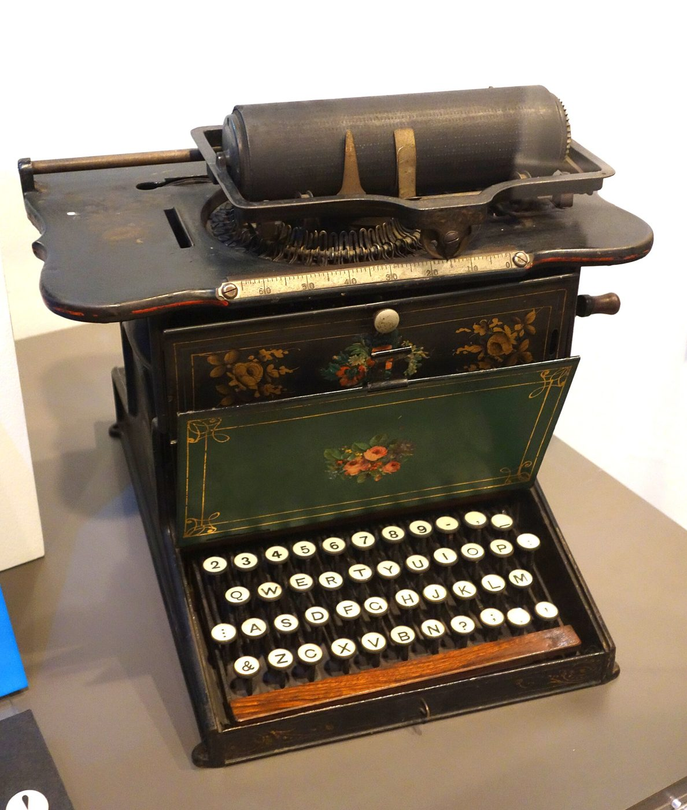
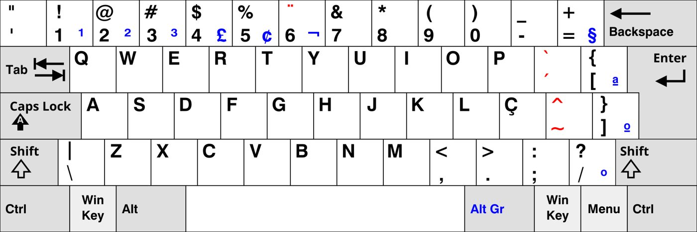
O teclado é o periférico mais antigo e mais usado do computador, e ele carrega 150 anos de história desde a máquina de escrever. Entender o teclado (layouts, padrões ABNT, funções das teclas e atalhos) é uma das formas mais rápidas de ganhar produtividade.
Curiosidade Um brasileiro na história
O padre paraibano Francisco João de Azevedo (1814–1880) apresentou em 1861 (algumas fontes dizem 1862), na Exposição Nacional do Rio de Janeiro, uma máquina de madeira com teclado semelhante ao de um piano. Era originalmente uma máquina taquigráfica, depois adaptada para escrever, e recebeu uma das 9 medalhas de ouro entre 1.136 expositores. Há quem defenda que Sholes teria conhecido o invento, mas não há prova documental disso. Ele é homenageado como um dos pioneiros da máquina de escrever no Brasil.
O nome vem das seis primeiras letras da fileira superior: Q W E R T Y. A explicação mais repetida é que o layout foi feito para "desacelerar" a digitação, evitando que as hastes das letras mais usadas em sequência se enroscassem.
A explicação mais aceita hoje é mais sutil: - O layout de Sholes passou por muitas versões até 1878 e foi ajustado para separar pares de letras frequentes no inglês (como "th"), justamente para reduzir os travamentos das hastes, sem a intenção de deixar a pessoa mais lenta. - Pesquisadores japoneses (Koichi Yasuoka e Motoko Yasuoka, Universidade de Kyoto, 2011) mostraram que a disposição também foi influenciada pelos operadores de telégrafo, que transcreviam código Morse e eram os primeiros grandes clientes. - O QWERTY venceu pelo efeito rede: quando milhares de datilógrafos já sabiam usá-lo, ninguém quis trocar.
| Layout | Criador e ano | Ideia |
|---|---|---|
| QWERTY | Sholes (1873–1878) | O padrão mundial |
| AZERTY | França (c. 1900) | Variação francesa |
| QWERTZ | Alemanha | Troca Y e Z (o Z é mais comum no alemão) |
| Dvorak | August Dvorak (1936) | Vogais na fileira central da mão esquerda; menos movimento de dedos |
| Colemak | Shai Coleman (2006) | Meio-termo: mantém atalhos (Ctrl+C, V, X, Z) no lugar |
| Ano | Marco |
|---|---|
| 1870s–1960s | Teletipos (teleimpressores): máquinas de escrever elétricas ligadas ao telégrafo, usadas como terminais de computador |
| 1960s–1970s | Terminais de vídeo (como o DEC VT100, 1978) com teclas de controle e setas |
| 1981 | Teclado do IBM PC (83 teclas) |
| 1985 | IBM Model M (101 teclas, com mola flambada, o famoso buckling spring), base do layout atual |
| 1995 | Teclas Windows e Menu (104 teclas, padrão US) |
| Tipo | Como funciona | Prós | Contras | Preço médio (2026) |
|---|---|---|---|---|
| Membrana | Uma manta de borracha com "domos" pressiona duas películas plásticas com trilhas condutoras | Barato, silencioso, resistente a respingos | Toque "mole", desgaste dos domos | R$ 40–200 |
| Tesoura (scissor) | Membrana com um mecanismo em X que estabiliza a tecla | Fino, estável; padrão dos notebooks | Curso curto, conserto difícil | R$ 100–600 |
| Mecânico | Cada tecla tem um interruptor (switch) individual com mola e contato metálico | Durabilidade (50–100 milhões de toques), precisão, personalização | Mais caro e barulhento (dependendo do switch) | R$ 150–1.500+ |
| Óptico | O switch interrompe um feixe de luz em vez de fechar um contato | Muito rápido e sem desgaste de contato | Menos opções de peças | R$ 250–1.200 |
| Magnético (efeito Hall) | Um ímã na tecla e um sensor medem a posição exata | Ponto de acionamento ajustável, "rapid trigger" (gamer) | Caro | R$ 400–2.000 |
| Virtual / touch | Na tela | Sem peça física | Sem retorno tátil | — |
| Cor (padrão Cherry) | Tipo | Sensação | Indicado para |
|---|---|---|---|
| Vermelho (Red) | Linear | Suave, sem "degrau", silencioso | Jogos |
| Marrom (Brown) | Tátil | Pequeno "degrau" no acionamento | Uso misto |
| Azul (Blue) | Clicky | Degrau + clique audível | Digitação (incomoda quem está perto) |
| Preto (Black) | Linear pesado | Mais força | Quem tem "mão pesada" |
A ABNT (Associação Brasileira de Normas Técnicas) é o órgão privado sem fins lucrativos, fundado em 1940, responsável pelas normas técnicas brasileiras (NBR). Ela é o foro nacional de normalização, reconhecido pelo governo, e representa o Brasil na ISO e na IEC.
Atenção Duas "ABNTs" que as pessoas confundem
| Característica | ABNT2 (Brasil) | US / Internacional |
|---|---|---|
| Tecla Ç | ✅ Ao lado do L | ❌ (usa ' + c no US-Internacional) |
| Número de teclas | Geralmente 107 no desktop completo (a norma não define o padrão pelo número de teclas) | 104 |
| Enter | Grande, em formato de "L" invertido (duas fileiras) | Retangular, numa fileira |
| Tecla / ? | Extra, ao lado do Shift direito | Junto ao ponto e à vírgula |
| Tecla \ | | Ao lado do Shift esquerdo (Shift esquerdo menor) | Acima do Enter |
| Acentos | ´ ` e ~ ^ em teclas próprias (teclas "mortas") | Pelo layout US-Internacional |
| AltGr | Usado para /, ?, °, ª, º, ¹ ² ³, £, ¢, ¬, § (o ABNT original também tem AltGr) | Usado em outros símbolos |
| Teclado numérico | Tem a tecla "." e a "," extra | Só "." |
Exemplo Exemplo: "minha barra e meu acento estão trocados"
Esse é um chamado de suporte clássico. O teclado físico é ABNT2, mas o Windows está configurado como "Estados Unidos" (ou o inverso). Solução: Configurações → Hora e idioma → Idioma e região → Português (Brasil) → Opções → Teclados → adicionar "Português (Brasil ABNT2)" e remover o layout errado. O atalho Windows + Espaço alterna entre os layouts instalados.
Dica Atalhos úteis no ABNT2
| Grupo | Teclas | Função |
|---|---|---|
| Alfanuméricas | Letras, números, pontuação | Digitar texto |
| Modificadoras | Shift, Ctrl, Alt, AltGr, Windows (Win), Fn | Mudam a função de outras teclas, como nos atalhos |
| Função | F1 a F12 | Ações de cada programa |
| Navegação | Setas, Home, End, Page Up, Page Down | Mover o cursor |
| Edição | Insert, Delete, Backspace | Inserir e apagar |
| Teclado numérico | Números e operações, Num Lock | Digitação rápida de números (contabilidade, caixa) |
| Sistema e controle | Esc, Print Screen, Scroll Lock, Pause/Break, Menu | Controle |
| Tecla | O que faz |
|---|---|
| Esc | Cancela, fecha menus, sai da tela cheia |
| Tab | Avança para o próximo campo ou insere tabulação; Shift + Tab volta |
| Caps Lock | Trava as maiúsculas |
| Shift | Maiúscula ou símbolo superior da tecla; com clique, seleciona um intervalo |
| Ctrl | Base dos atalhos de comando |
| Alt | Acessa menus; base de atalhos do sistema |
| AltGr | Terceiro símbolo da tecla (o desenhado no canto inferior direito) |
| Windows | Abre o menu Iniciar; base dos atalhos do Windows |
| Menu (tecla de contexto) | Equivale ao clique com o botão direito |
| Fn | Em notebooks, ativa as funções em azul (brilho, volume, Wi-Fi) |
| Insert | Alterna entre inserir e sobrescrever o texto (a causa do "meu texto está apagando o que vem depois") |
| Home / End | Início e fim da linha; com Ctrl, início e fim do documento |
| Page Up / Page Down | Sobe ou desce uma tela |
| Print Screen (PrtSc) | Captura a tela para a área de transferência |
| Scroll Lock | Hoje quase sem uso; no Excel, faz as setas rolarem a planilha em vez de mover a célula |
| Pause/Break | Win + Pause abria as informações do sistema; pausa a tela de boot em PCs antigos |
| Num Lock | Liga o teclado numérico (desligado, ele vira setas) |
| F1 | Ajuda |
| F2 | Renomear (no Explorador) ou editar a célula (no Excel) |
| F3 | Pesquisar |
| F4 | Alt + F4 fecha a janela; no Excel, F4 fixa a referência ($A$1) |
| F5 | Atualizar a página ou a pasta; no PowerPoint, inicia a apresentação |
| F11 | Tela cheia no navegador |
| F12 | "Salvar como" no Office; ferramentas de desenvolvedor no navegador |
| Ação | Tempo médio (KLM) |
|---|---|
| K: pressionar uma tecla (digitador médio) | ≈ 0,2 s (0,08 s para um digitador experiente) |
| P: apontar o mouse até um alvo na tela | ≈ 1,1 s |
| B: clicar o botão do mouse (operador acrescentado em adaptações posteriores do modelo, como as de David Kieras) | ≈ 0,1 s |
| H: mover a mão do teclado ao mouse (ou vice-versa) | ≈ 0,4 s |
| M: preparação mental (decidir o que fazer) | ≈ 1,35 s |
Lei de Fitts (1954): o psicólogo Paul Fitts mostrou que o tempo para apontar um alvo aumenta com a distância e diminui com o tamanho do alvo. Menus pequenos e distantes são lentos por natureza. O atalho não depende de alvo nenhum.
Memória muscular: depois de alguns dias de prática, o atalho vira automático, sem a etapa visual de procurar o botão na tela.
Exemplo Exemplo resolvido: copiar e colar com mouse × teclado (texto já selecionado)
Com o mouse (pela barra de ferramentas ou pelo botão direito): - Mão já no mouse → apontar "Copiar" (P = 1,1 s) + clicar (B = 0,1 s) → apontar o destino (P = 1,1 s) + clicar (0,1 s) → apontar "Colar" (P = 1,1 s) + clicar (0,1 s) = ≈ 3,6 s
Com o teclado (mão já no teclado): - Ctrl + C (≈ 0,4 s, duas teclas) → seta ou Ctrl + End até o destino (≈ 0,4 s) → Ctrl + V (≈ 0,4 s) = ≈ 1,2 s
Economia de ≈ 2,4 segundos por operação. Quem faz isso 200 vezes por dia economiza 8 minutos por dia, o que dá ≈ 29 horas por ano. E isso é só um atalho.
| Atalho | Ação |
|---|---|
| Ctrl + C / Ctrl + X / Ctrl + V | Copiar / Recortar / Colar |
| Ctrl + Z / Ctrl + Y | Desfazer / Refazer |
| Ctrl + A | Selecionar tudo |
| Ctrl + S | Salvar |
| Ctrl + P | Imprimir |
| Ctrl + F | Procurar na página ou no documento |
| Ctrl + N | Novo documento ou janela |
| Ctrl + Shift + Esc | Abrir o Gerenciador de Tarefas direto |
| Ctrl + Alt + Del | Tela de segurança (bloquear, trocar usuário, gerenciador) |
| Alt + Tab | Alternar entre janelas |
| Alt + F4 | Fechar a janela (na área de trabalho: desligar) |
| Win | Menu Iniciar |
| Win + D | Mostrar a área de trabalho |
| Win + E | Abrir o Explorador de Arquivos |
| Win + L | Bloquear o computador (use sempre que sair de perto) |
| Win + V | Histórico da área de transferência (precisa ser ativado na primeira vez) |
| Win + Shift + S | Recorte de tela (Ferramenta de Captura) |
| Win + . | Painel de emojis e símbolos |
| Win + ← / → | Encaixar a janela na metade da tela |
| Win + Tab | Visão de tarefas e áreas de trabalho virtuais |
| Win + I | Configurações |
| Win + X | Menu de administração (Gerenciador de Dispositivos, Terminal) |
| Win + R | Executar (cmd, msinfo32, dxdiag, devmgmt.msc) |
| F2 | Renomear o arquivo selecionado |
| Shift + Delete | Excluir sem mandar para a Lixeira (cuidado) |
| Atalho | Ação |
|---|---|
| Ctrl + T | Nova aba |
| Ctrl + W | Fechar a aba |
| Ctrl + Shift + T | Reabrir a aba fechada sem querer |
| Ctrl + Tab / Ctrl + Shift + Tab | Próxima / anterior aba |
| Ctrl + 1…8 / Ctrl + 9 | Ir para a aba N / para a última aba |
| Ctrl + L (ou F6) | Ir para a barra de endereço |
| Ctrl + + / Ctrl + − / Ctrl + 0 | Zoom maior / menor / normal |
| Ctrl + Shift + N | Janela anônima (Chrome e Edge) |
| Ctrl + H | Histórico |
| Ctrl + D | Adicionar aos favoritos |
| F5 / Ctrl + F5 | Atualizar / atualizar ignorando o cache |
| Atalho | Ação |
|---|---|
| Ctrl + B / I / U | Negrito / itálico / sublinhado (no Word em português: Ctrl + N / I / S) |
| Ctrl + ← / → | Pular palavra por palavra |
| Ctrl + Shift + ← / → | Selecionar palavra por palavra |
| Ctrl + Backspace | Apagar a palavra inteira |
| Home / End | Início / fim da linha |
| Shift + Home / End | Selecionar até o início / fim da linha |
| Ctrl + Home / End | Início / fim do documento |
| Shift + F3 (Word) | Alternar MAIÚSCULAS / minúsculas / Iniciais |
Dica Como aprender atalhos sem esforço
Escolha três atalhos por semana, cole um papel no monitor e proíba-se de usar o mouse para aquelas ações. Em um mês você terá 12 atalhos na memória muscular. Na versão interativa deste material, há um treino de atalhos para praticar.
| Sintoma | Causa | Solução |
|---|---|---|
| Acentos e símbolos trocados | Layout errado no sistema | Configurar Português (Brasil ABNT2) |
| Teclado numérico não funciona | Num Lock desligado | Ligar o Num Lock (ou ativar no boot pela BIOS) |
| Texto "apagando" ao digitar | Insert ativado | Apertar Insert de novo |
| Tecla repetindo ou falhando | Sujeira, líquido, membrana gasta, switch com defeito | Limpar com ar comprimido e isopropílico; no mecânico, trocar o switch (se for hot-swap) |
| Teclas de F1–F12 controlando volume e brilho | Fn Lock ativo | Fn + Esc (na maioria dos notebooks) ou ajuste na BIOS |
| Líquido derramado | — | Desconecte na hora, vire de cabeça para baixo, seque por 24–48 h; refrigerante e café com açúcar exigem lavagem com água destilada e isopropílico |
| Teclado sem fio com atraso | Pilha fraca, interferência, receptor longe | Trocar as pilhas, aproximar o receptor com extensor USB |
1. Qual tecla existe no ABNT2 e não no teclado US?
O ABNT2 tem o Ç e a tecla / ? ao lado do Shift direito.
2. Qual é o atalho para reabrir uma aba fechada sem querer no navegador?
Funciona no Chrome, no Edge e no Firefox.
3. Por que os atalhos são mais rápidos que o mouse?
Apontar leva ≈ 1,1 s no modelo KLM; uma tecla, ≈ 0,2 s.
Parte VII · Componentes · Módulo 17
O gabinete (em inglês, case ou chassis) é a estrutura que abriga e protege os componentes internos do computador. Muita gente o chama, erradamente, de "CPU". A CPU é o processador, que fica dentro do gabinete.
Atenção "Gabinete" não é "CPU"
Dizer "a CPU" apontando para a caixa é um erro muito comum, inclusive em lojas. O correto é gabinete, ou "torre". Um técnico que corrige isso com educação passa credibilidade ao cliente.
O ar quente sobe. O padrão mais eficiente é: - Entrada de ar frio: frente e/ou base. - Saída de ar quente: traseira e topo.
| Configuração | Como é | Resultado |
|---|---|---|
| Pressão positiva | Mais ventoinhas puxando ar para dentro do que tirando | Menos poeira (o ar sai pelas frestas); a mais recomendada |
| Pressão negativa | Mais ventoinhas tirando ar | Pode resfriar um pouco melhor, mas puxa poeira por todas as frestas |
| Neutra | Equilíbrio | Meio-termo |
Exemplo Exemplo: o gabinete "aquário"
Os gabinetes estilo aquário (vidro na frente e na lateral, como o Lian Li O11 e seus clones) não puxam ar pela frente. Neles, as ventoinhas de entrada ficam na lateral ou na base, e a saída fica no topo e na traseira. Montar o fluxo como num gabinete comum, sem ventoinha de entrada, pode deixar a placa de vídeo 10 a 20 °C mais quente.
| Material | Onde é usado | Características |
|---|---|---|
| Aço SECC (aço eletrogalvanizado laminado a frio) | Estrutura da maioria dos gabinetes | Resistente, barato, bom para aterramento e blindagem; espessura de 0,5 a 1,0 mm (quanto mais espesso, melhor) |
| Alumínio | Gabinetes premium (Lian Li, Fractal, Apple) | Leve, dissipa calor, caro, risca mais fácil |
| Plástico ABS | Frontais, tampas, botões | Barato, fácil de moldar |
| Vidro temperado | Laterais e frentes | Bonito, pesado, quebra se cair ou se o parafuso for apertado demais |
| Acrílico | Laterais de modelos baratos | Leve, risca com facilidade, amarela com o tempo |
| Malha metálica (mesh) | Frontais | Ótima entrada de ar |
| Espuma acústica / betume | Gabinetes silenciosos | Reduz o ruído |
| Tipo | Altura aproximada | Placas-mãe suportadas | Uso típico |
|---|---|---|---|
| Full Tower | 55–70 cm | E-ATX, ATX, Micro-ATX, Mini-ITX | Workstations, water cooling customizado, várias GPUs |
| Mid Tower (o mais comum) | 42–50 cm | ATX, Micro-ATX, Mini-ITX | PCs gamer e de uso geral |
| Mini Tower | 35–42 cm | Micro-ATX, Mini-ITX | Escritório, PCs compactos |
| SFF (Small Form Factor) | 20–35 cm | Mini-ITX (alguns Micro-ATX) | PCs compactos e potentes, sala de estar |
| Desktop / Slim (horizontal) | Deitado, fino | Micro-ATX, Mini-ITX, placas proprietárias | Escritórios, órgãos públicos, caixas de loja |
| Mini PC / USFF | ≈ 1 litro de volume | Placas proprietárias, Mini-STX | Escritório, thin client, home theater |
| Rack (1U, 2U, 4U...) | 1U = 4,45 cm de altura, largura de 19" | Placas de servidor | Data centers e servidores |
| Open frame / bancada | Sem paredes | Qualquer | Testes, mineração, exposição |
| All-in-one | Atrás da tela | Proprietárias | Recepção, residências |
| Categoria | Faixa | Exemplos de perfil |
|---|---|---|
| Básico de escritório (com fonte genérica inclusa) | R$ 120–250 | Mini tower sem ventoinhas. Atenção: a fonte que vem junto costuma ser de baixa qualidade |
| Gamer de entrada (sem fonte) | R$ 200–400 | Mid tower com vidro e 2–4 ventoinhas |
| Intermediário | R$ 400–800 | Aquário com 6–7 ventoinhas, bom filtro, USB-C |
| Premium | R$ 800–2.500+ | Lian Li, Fractal Design, Corsair, NZXT, HYTE |
| Critério | Gabinete ruim | Gabinete bom |
|---|---|---|
| Espessura do aço | 0,4–0,5 mm, entorta com a mão | 0,7–1,0 mm, firme |
| Acabamento | Bordas cortantes | Bordas dobradas ou arredondadas |
| Fluxo de ar | Frente fechada sem ventilação | Frente em malha ou entradas laterais |
| Filtros | Nenhum | Frente, topo e base, removíveis |
| Espaço para cabos | Nenhum | 2–3 cm atrás da bandeja |
| Compatibilidade | GPU de até 250 mm, cooler de até 140 mm | GPU de 350–420 mm, cooler de 165 mm, radiador de 360 mm |
| Problema | Sintoma | Como evitar | Como resolver |
|---|---|---|---|
| Superaquecimento por fluxo de ar ruim | Temperaturas altas, coolers no máximo, PC desligando em jogo | Escolher gabinete com boa ventilação, orientar as ventoinhas corretamente (a seta na lateral da ventoinha indica o sentido do ar) | Reorganizar as ventoinhas (frente/base entrando, topo/traseira saindo); acrescentar ventoinhas |
| Acúmulo de poeira | Filtros entupidos, componentes cobertos | Usar pressão positiva e filtros, deixar o gabinete fora do chão (em cima de um suporte) | Limpeza periódica (módulo de Manutenção) |
| Botão Power não funciona | PC não liga pelo botão | Conferir as ligações do painel frontal | Testar ligando a placa encostando uma chave de fenda nos dois pinos PWR_SW; se ligar, o defeito é o botão ou o cabo |
| USB frontal não funciona | Pen drive não reconhecido na frente | Conectar o cabo USB interno na placa | Conferir o conector interno (USB 2.0 de 9 pinos, USB 3.0 de 19 pinos, USB-C Key-A) |
| Áudio frontal sem som | Fone não funciona na frente | Ligar o conector HD Audio (não o antigo AC'97) | Conferir o cabo e as configurações do driver de áudio |
| Choque no gabinete | "Formigamento" ao tocar | Tomada aterrada | Corrigir o aterramento da instalação elétrica |
| Peça que não cabe | GPU, cooler ou radiador não cabem | Ver as especificações antes de comprar (comprimento máximo da GPU, altura máxima do cooler) | Trocar a peça ou o gabinete |
| Curto na placa-mãe | PC não liga ou desliga sozinho | Usar apenas os espaçadores nos furos da placa | Retirar espaçadores sobrando |
| Vidro quebrado | Lateral estilhaçada | Não apertar demais os parafusos; manusear deitado sobre pano | Trocar o painel (peça de reposição do fabricante) |
| Vibração e ruído | Zumbido | Usar borrachas antivibração no HD e nas ventoinhas | Apertar os parafusos, usar borrachas |
Exemplo Exemplo de bancada
Um cliente reclama que o PC "desliga sozinho jogando". O técnico abre e encontra um gabinete com frente de vidro fechado, só uma ventoinha na traseira e um filtro inferior completamente entupido. A placa de vídeo atingia 90 °C e acionava a proteção. Solução: limpeza, três ventoinhas de entrada na lateral e na base e uma de saída no topo. Resultado: queda de 18 °C na GPU, com custo de cerca de R$ 120 em ventoinhas.
1. Qual é o nome correto da "caixa" do computador?
CPU é o processador, que fica dentro do gabinete.
2. O fluxo de ar recomendado é...
O ar quente sobe.
3. A pressão positiva ajuda a...
Com mais ar entrando pelos filtros, a poeira não entra pelas frestas.
Parte VII · Componentes · Módulo 18
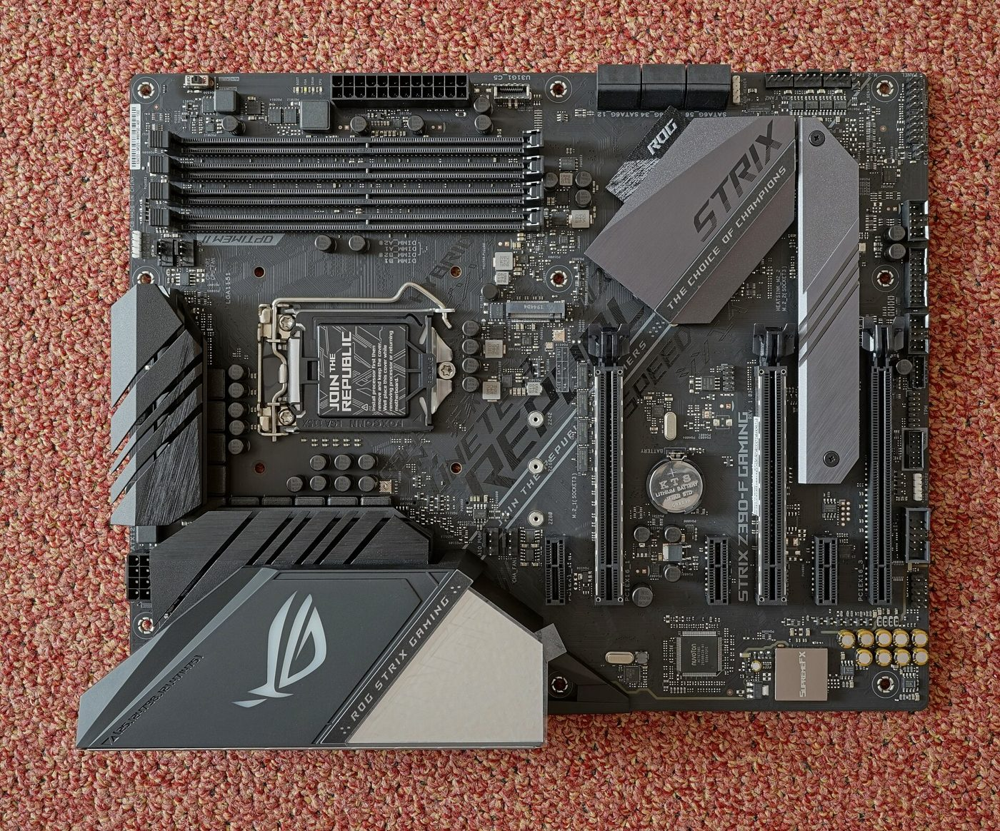
A placa-mãe (motherboard ou mainboard, e em Portugal, "motherboard") é a placa de circuito impresso principal do computador. É nela que todos os componentes se conectam e se comunicam. Se o processador é o cérebro, a placa-mãe é o sistema nervoso e o esqueleto ao mesmo tempo.
Exemplo Exemplo: o papel da placa-mãe ao abrir 30 abas e editar um vídeo
| Parte | Material |
|---|---|
| PCB (placa de circuito impresso) | Camadas de fibra de vidro com resina epóxi (FR-4), intercaladas com camadas de cobre (de 4 a 12 camadas; placas melhores têm mais camadas e cobre mais espesso) |
| Trilhas | Cobre |
| Máscara de solda | Verniz polimérico (a "cor" da placa: verde, preta, branca) |
| Soldas | Liga de estanho, prata e cobre (sem chumbo, pela diretiva RoHS) |
| Contatos de slots | Cobre com banho de ouro |
| Dissipadores do VRM e do chipset | Alumínio |
| Capacitores | Sólidos de polímero de alumínio (os bons, "japoneses") ou eletrolíticos |
| Chips | Silício encapsulado |
| Chipset | A partir de (à vista) | Faixa comum |
|---|---|---|
| AMD A620 / Intel H610 | ≈ R$ 400–420 | R$ 400–700 |
| AMD B650 | ≈ R$ 400 | R$ 600–1.200 |
| AMD B850 | ≈ R$ 650 | R$ 800–1.500 |
| AMD X870 / X870E | ≈ R$ 1.600 | R$ 1.800–4.000+ |
| Intel B760 | ≈ R$ 520 | R$ 600–1.200 |
| Intel B860 | ≈ R$ 860 | R$ 900–1.500 |
| Intel Z890 | ≈ R$ 1.550 | R$ 1.700–4.000+ |
Fonte: menores preços à vista (Pix/boleto) em agregadores como o hardwarebarato.com, out/2026. Modelos Mini-ITX custam bem mais que os ATX do mesmo chipset.
| Componente | O que é | Para que serve | Como identificar |
|---|---|---|---|
| Soquete da CPU | Encaixe do processador | Ligar a CPU à placa | Quadrado grande no centro superior, com alavanca |
| Slots de memória (DIMM) | Encaixes longos e finos | Receber os pentes de RAM | 2 ou 4 slots ao lado do soquete, com travas nas pontas |
| Slots PCI Express (PCIe) | Slots de expansão | Placa de vídeo, placas de rede, captura, som | O x16 é o mais longo (≈ 89 mm); x1 é o curtinho; x4 é o intermediário |
| Slots M.2 | Encaixe pequeno e plano | SSDs NVMe (e Wi-Fi no slot M.2 Key E) | Pequeno conector com um parafuso ou trava, às vezes sob um dissipador |
| Portas SATA | Conectores em "L" | HDs, SSDs SATA e drives ópticos | Em grupo, na borda direita, de lado |
| Conector ATX 24 pinos | Energia principal | Alimentar a placa | Grande conector na borda direita |
| Conector EPS 8 pinos (4+4) | Energia da CPU | Alimentar o processador | No canto superior esquerdo (às vezes 2 deles) |
| Chipset (PCH) | Chip controlador | Gerencia USB, SATA e linhas PCIe extras | Sob um dissipador, na parte inferior direita |
| VRM | Reguladores de tensão (MOSFETs, bobinas/indutores, capacitores) | Converter 12 V em ≈ 1 V para a CPU | Cubinhos (indutores) ao redor do soquete, sob dissipadores |
| Chip da BIOS/UEFI | Memória flash SPI | Guardar o firmware | Pequeno chip de 8 pinos, às vezes em soquete |
| Bateria CMOS (CR2032) | Bateria de botão | Manter data, hora e configurações | Moeda prateada de 20 mm |
| Headers de ventoinha (FAN) | Conectores de 3 ou 4 pinos | Ligar e controlar coolers (CPU_FAN, SYS_FAN, PUMP) | Pequenos conectores brancos ou pretos espalhados |
| Headers USB internos | Conectores | USB do painel frontal | 9 pinos (2.0), 19 pinos (3.0), USB-C (Key-A) |
| Header de áudio frontal (HD_AUDIO) | Conector de 9 pinos | Fone e microfone frontais | Canto inferior esquerdo |
| Painel frontal (F_PANEL) | Pinos | Botões Power e Reset, LEDs | Canto inferior direito |
| Headers RGB | 12 V de 4 pinos (RGB) ou 5 V de 3 pinos (ARGB) | Iluminação | Cuidado: ligar ARGB (5 V) no RGB (12 V) queima os LEDs |
| Painel traseiro de I/O | Conectores externos | USB, rede, áudio, vídeo, antenas Wi-Fi | Parte de trás do gabinete |
| Jumper Clear CMOS | Dois pinos (ou botão) | Resetar a BIOS | Marcado "CLR_CMOS" ou "JBAT1" |
| Debug LEDs / POST code | LEDs ou display | Mostrar em qual etapa o boot travou | LEDs CPU / DRAM / VGA / BOOT |
| Formato | Medidas | Slots de RAM | Slots PCIe | Uso | Preço médio (2026) |
|---|---|---|---|---|---|
| E-ATX | 305 × 330 mm (varia) | 4–8 | 4–7 | Entusiastas, workstations | R$ 3.000–10.000+ |
| ATX (padrão desde 1995, da Intel) | 305 × 244 mm | 4 | até 7 | PCs gamer e completos | R$ 900–4.000 |
| Micro-ATX (mATX) | 244 × 244 mm | 2–4 | até 4 | Custo-benefício; o mais vendido no Brasil | R$ 500–1.800 |
| Mini-ITX | 170 × 170 mm | 2 | 1 | PCs compactos | R$ 1.000–3.500 |
| Mini-STX / proprietárias | Menores | SO-DIMM | — | Mini PCs, PCs de marca (Dell, HP, Lenovo) | — |
Atenção Placas de computador de marca
Computadores de marca (Dell OptiPlex, HP ProDesk, Lenovo ThinkCentre) costumam usar placas com formato, conectores de fonte e furação proprietários. Elas nem sempre aceitam fonte ou gabinete padrão, o que é importante para o orçamento de um upgrade.
O soquete define quais processadores a placa aceita. É o critério de compatibilidade número um.
| Tipo | Onde ficam os pinos | Exemplo |
|---|---|---|
| PGA (Pin Grid Array) | No processador | AMD AM4 (Ryzen 1000 a 5000) |
| LGA (Land Grid Array) | No soquete da placa (no processador há só contatos planos) | Intel LGA1700 / LGA1851; AMD AM5 |
| BGA (Ball Grid Array) | Soldado na placa | Notebooks e mini PCs; não dá para trocar a CPU |
| Fabricante | Soquete | Processadores | Memória |
|---|---|---|---|
| AMD | AM4 (2017) | Ryzen 1000 a 5000 (ainda vendidos, ótimo custo) | DDR4 |
| AMD | AM5 (2022) | Ryzen 7000, 8000G, 9000 (Zen 5), 9000X3D | DDR5 |
| Intel | LGA1700 (2021) | Core de 12ª, 13ª e 14ª geração | DDR4 ou DDR5 (depende da placa) |
| Intel | LGA1851 (2024) | Core Ultra 200S (Arrow Lake) | DDR5 |
Dica Longevidade do soquete
A AMD costuma manter o mesmo soquete por várias gerações (o AM4 durou de 2017 a 2022, com upgrade possível até o Ryzen 5000; a AMD anunciou na Computex 2026 que o AM5 terá suporte até pelo menos 2029, incluindo a futura geração Zen 6). A Intel troca de soquete com mais frequência, geralmente a cada 2 ou 3 gerações. Isso pesa na escolha de quem pretende trocar só o processador no futuro.
O chipset (hoje chamado PCH, Platform Controller Hub) é o chip que gerencia a comunicação entre a CPU e os periféricos "secundários": portas USB extras, SATA, linhas PCIe adicionais, áudio e rede. Ele determina os recursos da placa:
| Fabricante | Topo (overclock completo) | Intermediário (custo-benefício) | Entrada |
|---|---|---|---|
| AMD (AM5) | X870E / X870 | B850 / B650 | B840 / A620 |
| Intel (LGA1851) | Z890 (overclock da CPU) | B860 | H810 |
| Intel (LGA1700) | Z790 / Z690 | B760 / B660 | H610 |
O que muda entre eles: overclock (na Intel, só os chipsets "Z" liberam overclock da CPU nos modelos "K"), número de linhas PCIe, PCIe 5.0 para GPU e SSD, quantidade de USB e M.2, e qualidade média do VRM.
| Barramento | Ano | Velocidade | Uso |
|---|---|---|---|
| ISA | 1981 | ≈ 8 MB/s | IBM PC, placas de som antigas |
| PCI | 1992 (Intel) | 133 MB/s (compartilhado) | Placas de rede, som e modem dos anos 1990 e 2000 |
| AGP | 1997 | 266 MB/s – 2,1 GB/s | Exclusivo para placas de vídeo (até ≈ 2006) |
| PCIe 1.0 | 2003 | 250 MB/s por linha | Substituiu PCI e AGP |
| PCIe 2.0 | 2007 | 500 MB/s por linha | — |
| PCIe 3.0 | 2010 | ≈ 985 MB/s por linha | x16 ≈ 15,8 GB/s |
| PCIe 4.0 | 2017 (2019 em PCs) | ≈ 1,97 GB/s por linha | x16 ≈ 31,5 GB/s; SSDs de 7.000 MB/s |
| PCIe 5.0 | 2019 (2021–22 em PCs) | ≈ 3,94 GB/s por linha | x16 ≈ 63 GB/s; SSDs de 14.000 MB/s |
| PCIe 6.0 | 2022 (especificação) | ≈ 7,9 GB/s por linha | Data centers |
| PCIe 7.0 | Junho de 2025 (especificação) | ≈ 15,8 GB/s por linha (x16 ≈ 512 GB/s somando os dois sentidos) | Data centers de IA; o PCIe 8.0 está previsto para ≈ 2028 |
Este é um dos conceitos mais importantes para quem vai comprar, vender ou consertar computador.
Onboard ("a bordo") é qualquer recurso integrado à própria placa-mãe ou ao processador, sem precisar de uma placa separada.
| Recurso onboard | Onde fica de verdade | Exemplo |
|---|---|---|
| Vídeo onboard (gráfico integrado) | Hoje, dentro do processador (iGPU); antigamente, no chipset | Intel UHD/Iris Xe/Arc integrado, AMD Radeon integrado (Ryzen com "G" e Ryzen 7000/9000 desktop) |
| Áudio onboard | Chip de áudio na placa (codec Realtek ALC) | Saídas P2 coloridas na traseira |
| Rede onboard | Chip de rede na placa (Realtek, Intel) | Porta RJ-45 de 1 ou 2,5 Gbps |
| Wi-Fi / Bluetooth onboard | Módulo M.2 já instalado | Placas com "WIFI" no nome |
| USB, SATA | Chipset e CPU | — |
Offboard ("fora da placa") é um recurso fornecido por uma placa de expansão separada, encaixada num slot (geralmente PCIe) ou ligada externamente.
| Recurso offboard | Exemplo |
|---|---|
| Placa de vídeo dedicada | NVIDIA GeForce RTX 5060, AMD Radeon RX 9060 XT |
| Placa de som dedicada | Creative Sound Blaster, interfaces de áudio USB (Focusrite) |
| Placa de rede extra | Placa PCIe de 10 Gbps, placa Wi-Fi PCIe |
| Placa de captura | Elgato (para streaming) |
| Controladora | Placa com portas SATA ou USB extras |
| Critério | Onboard | Offboard |
|---|---|---|
| Custo | Já incluído, mais barato | Custo extra |
| Desempenho | Suficiente para o básico | Muito superior (principalmente vídeo) |
| Memória (vídeo) | Compartilha a RAM do sistema | Tem memória própria (VRAM) |
| Consumo e calor | Baixo | Maior (uma GPU pode consumir de 75 a 575 W) |
| Upgrade | Só trocando a CPU ou a placa | Troca fácil (é só a placa) |
| Manutenção | Defeito pode exigir trocar a placa-mãe inteira | Troca-se só a placa defeituosa |
| Indicado para | Escritório, estudos, internet, vídeo, jogos leves | Jogos, edição pesada, 3D, IA |
Exemplo Exemplo: o caso mais comum de "tela preta" em PC novo
O cliente monta um PC com placa de vídeo offboard e liga o cabo HDMI na saída de vídeo da placa-mãe (onboard). Resultado: "sem sinal". Quando há placa de vídeo dedicada, a placa-mãe normalmente desativa o vídeo onboard e a imagem sai só pela placa de vídeo. A solução é ligar o cabo nas saídas horizontais, mais baixas, da placa de vídeo.
Atenção Vídeo onboard depende do processador
Hoje, quem fornece o vídeo "onboard" é o processador. Uma placa-mãe com saída HDMI não dá imagem se o processador não tiver gráfico integrado: - Intel com final "F" (ex.: Core i5-14400F): sem vídeo integrado. - AMD Ryzen 5000 sem "G" (ex.: Ryzen 5 5600): sem vídeo integrado. Os Ryzen 5 5600G / 8600G têm. - AMD Ryzen 7000 e 9000 desktop: têm um gráfico básico (exceto os modelos com final "F").
| Problema | Sintoma | Causa | Como evitar | Como resolver |
|---|---|---|---|---|
| Não liga (nada acontece) | Sem luz, sem ventoinha | Fonte, cabo de 24 ou 8 pinos solto, botão do painel, curto | Conectar tudo com firmeza; espaçadores corretos | Testar a fonte; ligar fora do gabinete (breadboarding); dar partida nos pinos PWR_SW |
| Liga, mas sem imagem | Ventoinhas girando, monitor sem sinal | RAM mal encaixada, cabo de vídeo na saída errada, CPU sem vídeo integrado, BIOS desatualizada para a CPU | Conferir a compatibilidade da BIOS com a CPU antes de comprar | Ver os LEDs de debug (CPU/DRAM/VGA/BOOT); reencaixar a RAM; testar 1 pente no slot indicado no manual (geralmente A2); Clear CMOS |
| Bipes ao ligar | Sequência de bipes | Código do POST indicando falha | — | Consultar a tabela do fabricante da BIOS (AMI, Award, Phoenix) no manual |
| Perde a data e a hora | Relógio atrasado, pede para apertar F1 | Bateria CR2032 fraca | Trocar a cada 3–5 anos | Trocar a bateria (≈ R$ 5–15) |
| Capacitores estufados | Desliga sozinho, trava, não liga | Calor, capacitores de baixa qualidade, idade | Boa ventilação; placas com capacitores sólidos | Troca dos capacitores (micro-solda) ou troca da placa |
| VRM superaquecendo | Perda de desempenho em carga longa (throttling) | Placa barata com CPU forte | Escolher placa com VRM compatível com a CPU (ver reviews) | Ventilar a região do VRM; limitar a potência da CPU na BIOS |
| Pinos do soquete tortos (LGA) | CPU não reconhecida, memória faltando canais | Queda de objeto, instalação errada | Manter a tampa até instalar a CPU; não arrastar a CPU no soquete | Desentortar com lupa e agulha (alto risco) ou assistência |
| Atualização de BIOS interrompida | Placa "morta" (brick) | Queda de energia durante a atualização | Atualizar com nobreak e arquivo correto | BIOS Flashback (botão traseiro em muitas placas), BIOS dual ou regravação do chip com programador (CH341A) |
| Curto | Desliga instantaneamente | Espaçador extra, parafuso solto embaixo da placa | Conferir os espaçadores | Desmontar e procurar o objeto ou espaçador |
| Portas USB queimadas | Uma porta específica não funciona | Pico, dispositivo em curto | Não usar cabos danificados | Usar outra porta ou um hub; reparo de micro-solda |
Exemplo Exemplo de bancada: PC novo sem imagem com Ryzen 9000 numa placa B650
Placas B650 fabricadas antes de agosto de 2024 vêm com uma BIOS que não reconhece os Ryzen 9000. O PC liga, as ventoinhas giram e o LED "CPU" fica aceso. Solução: usar o recurso BIOS Flashback (pen drive formatado em FAT32 com o arquivo da BIOS nova, renomeado conforme o manual, no USB marcado, apertando o botão traseiro), sem precisar de processador antigo. É por isso que verificar a "CPU Support List" no site do fabricante é obrigatório.
1. O que define quais processadores uma placa-mãe aceita?
Exemplo: AM5 para Ryzen 7000/9000.
2. Vídeo onboard hoje é fornecido, na prática, por...
CPUs com final F (Intel) não têm vídeo integrado.
3. Qual é o formato de placa-mãe com 170 × 170 mm?
Mini-ITX: 2 slots de RAM e 1 slot PCIe.
Parte VII · Componentes · Módulo 19
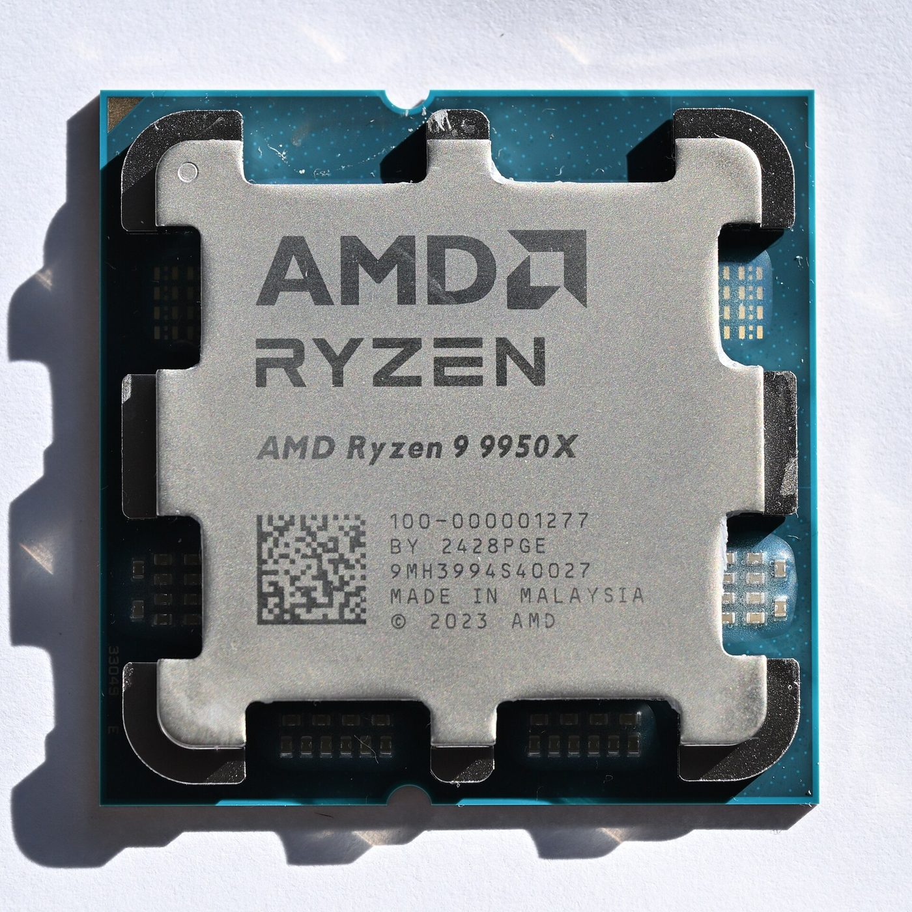
A CPU (Central Processing Unit, ou Unidade Central de Processamento), o processador, é o chip que executa as instruções dos programas. É o "cérebro" do computador: faz contas, toma decisões (comparações) e coordena todas as outras peças.
| Tarefa | O que a CPU faz |
|---|---|
| Abrir abas e navegar | Interpreta o HTML e o CSS, executa o JavaScript das páginas e gerencia cada aba como um processo. Mais núcleos = mais abas pesadas sem travar |
| Editar e exportar vídeo | Codifica e decodifica (com ajuda da GPU), aplica efeitos, organiza a linha do tempo. A exportação usa todos os núcleos |
| Jogos | Física, inteligência dos personagens, lógica do jogo e o envio de comandos para a GPU (as draw calls). Uma CPU fraca limita o FPS: é o famoso "gargalo" |
| Gerar imagens com IA | Prepara os dados e coordena; o trabalho pesado vai para a GPU (ou para a NPU, em notebooks novos) |
| Office, planilhas | Cálculos de fórmulas, macros |
| Compactar arquivos, antivírus, compilar código | Trabalho intenso da CPU |
| Parte | Material |
|---|---|
| Die (núcleo) | Silício ultrapuro (99,9999999%, os "nove noves"), com bilhões de transistores feitos por fotolitografia |
| Interconexões internas | Cobre (desde 1997, IBM) em até 15–20 camadas microscópicas |
| IHS (tampa) | Cobre niquelado |
| Material de interface (die → IHS) | Solda de índio (modelos melhores) ou pasta térmica |
| Substrato | Fibra de vidro/resina e camadas de cobre |
| Contatos | Cobre com banho de ouro |
Curiosidade Da areia ao processador
O silício vem da areia de quartzo (SiO₂). Ele é purificado, derretido e transformado num lingote cilíndrico monocristalino (pelo método Czochralski), cortado em wafers de 300 mm. Cada wafer passa por centenas de etapas de fotolitografia ao longo de cerca de 3 meses, em fábricas (fabs) que custam mais de US$ 20 bilhões. As máquinas mais avançadas, de litografia EUV (ultravioleta extremo), são feitas por uma única empresa no mundo: a holandesa ASML. Cada uma custa de US$ 200 a 400 milhões.
| Bloco | Função |
|---|---|
| Unidade de busca e decodificação | Lê as instruções da memória e as traduz em micro-operações |
| Previsor de desvios | "Adivinha" o caminho do programa (if/else) para não perder tempo |
| Unidades de execução (ALUs, FPUs, unidades vetoriais AVX) | Fazem as contas (inteiros, ponto flutuante, vetores) |
| Registradores | Memória dentro do núcleo, a mais rápida que existe |
| Cache L1 e L2 | Memória ultrarrápida de cada núcleo |
| Cache L3 | Memória compartilhada entre os núcleos |
| Controlador de memória | Conversa com a RAM (antes ficava no chipset da placa) |
| Controlador PCIe | Linhas para a GPU e o SSD |
| iGPU (quando há) | Gráfico integrado |
| NPU (nos chips para notebooks recentes) | Acelerador de IA |
| Termo | O que é | Exemplo prático |
|---|---|---|
| Núcleos (cores) | Processadores independentes dentro do chip | 6 núcleos = 6 tarefas pesadas em paralelo |
| Threads | Fluxos de execução. Com SMT/Hyper-Threading, cada núcleo atende 2 threads | 6 núcleos / 12 threads |
| Núcleos P e E (Intel, desde a 12ª geração) | P-cores (Performance, fortes) e E-cores (Efficient, econômicos) | Core i5-14600K: 6P + 8E = 14 núcleos |
| Clock base / boost (turbo) | Frequência garantida / máxima temporária | 3,8 GHz base, 5,1 GHz boost |
| Cache L3 | Memória interna compartilhada | 32 MB; nos X3D, 96 MB ou mais |
| TDP / PPT / PBP | Potência térmica de referência (para escolher o cooler) | 65 W, 105 W, 125 W |
| Litografia (nó de processo) | "Tamanho" do processo de fabricação (hoje é um nome comercial, não uma medida real) | TSMC N4, N3; Intel 7, Intel 18A |
| IPC | Instruções por ciclo, a "eficiência" da arquitetura | Zen 5 tem IPC ≈ 16% maior que o Zen 4 (segundo a AMD) |
| Arquitetura (conjunto de instruções) | A "língua" do processador | x86-64 (Intel, AMD) × ARM (celulares, Apple M, Snapdragon X) |
Intel Core i5-14600KF (modelos até a 14ª geração): - Core i5: a faixa. i3 (entrada), i5 (intermediário, o mais vendido), i7 (alto), i9 (topo). - 14: a geração (14ª). - 600: o modelo dentro da faixa (maior = melhor). - K: desbloqueado para overclock. - F: sem gráfico integrado (precisa de placa de vídeo).
Intel Core Ultra 7 265K (nova nomenclatura, de 2024): - Core Ultra 5 / 7 / 9: a faixa. - 2xx: a série (200 = Arrow Lake para desktop; nos notebooks, Lunar Lake e, em 2026, a série 300 Panther Lake). - K, F, KF, T: como antes; T = baixo consumo.
| Sufixo Intel | Significado |
|---|---|
| K | Overclock liberado |
| F | Sem vídeo integrado |
| KF | Overclock liberado e sem vídeo |
| T | Baixo consumo (35 W) |
| H / HX | Notebook de alto desempenho |
| U / P | Notebook de baixo consumo |
| V | Notebook com memória no pacote (Lunar Lake) |
AMD Ryzen 7 9800X3D: - Ryzen 3 / 5 / 7 / 9: a faixa (como o i3/i5/i7/i9). - 9: a série/geração (9000 = Zen 5). - 8: o nível dentro da faixa. - 00: variação do modelo. - X3D: cache 3D V-Cache empilhado, o melhor para jogos.
| Sufixo AMD | Significado |
|---|---|
| X | Clock mais alto |
| X3D | Cache L3 extra (3D V-Cache) |
| G | Com gráfico integrado forte (APU) |
| F | Sem gráfico integrado |
| HS / HX / U (notebook) | Desempenho / alto desempenho / baixo consumo |
Os notebooks da AMD também usam nomes como Ryzen AI 9 HX 370 (série Strix Point, com NPU).
| Família | Uso |
|---|---|
| Intel Xeon / AMD EPYC | Servidores (até 128–192 núcleos por chip) |
| AMD Threadripper / Intel Xeon W | Workstations |
| Intel Celeron, Pentium, Intel N100/N150 / AMD Athlon | Entrada, mini PCs |
| Apple M1–M5 | Macs (ARM, SoC com memória unificada) |
| Qualcomm Snapdragon X | Notebooks Windows com ARM |
| Snapdragon, MediaTek Dimensity, Apple A, Samsung Exynos | Celulares |
| Fabricante | Família | Soquete | Destaques |
|---|---|---|---|
| AMD | Ryzen 5000 (Zen 3, 2020) | AM4 | Ainda ótimo custo-benefício com DDR4 (Ryzen 5 5600, Ryzen 7 5700X3D) |
| AMD | Ryzen 7000 (Zen 4, 2022) | AM5 | DDR5, PCIe 5.0 |
| AMD | Ryzen 9000 (Zen 5, 2024) | AM5 | Ryzen 5 9600X, Ryzen 7 9800X3D (referência para jogos) |
| Intel | Core 12ª a 14ª geração (2021–2023) | LGA1700 | Núcleos P + E; aceitam DDR4 ou DDR5 |
| Intel | Core Ultra 200S (Arrow Lake, 2024) | LGA1851 | Mais eficiência, NPU, sem Hyper-Threading |
| Intel | Core Ultra Série 3 (Panther Lake, jan. 2026) | Notebooks (BGA) | Primeiro chip no processo Intel 18A |
Curiosidade O que vem por aí
Em out/2026, os próximos desktops ainda não foram lançados. A AMD Zen 6 (no mesmo soquete AM5) e a Intel Nova Lake (novo soquete LGA1954) são esperadas para 2027, segundo relatos da imprensa especializada. A crise de preços de memória é apontada como um dos motivos dos atrasos.
Atenção Instabilidade dos Intel de 13ª e 14ª geração
Em 2024, a Intel confirmou que muitos Core i7 e i9 de 13ª e 14ª geração sofriam degradação por receberem tensão acima do necessário (o problema Vmin shift). Os sintomas eram travamentos e erros em jogos. A Intel liberou microcódigos corretivos (0x12B em 2024 e 0x12F em 2025) e estendeu a garantia dos modelos afetados. Ao montar ou atender um PC com esses processadores, atualize a BIOS.
| Processador | Menor preço à vista (out/2026) |
|---|---|
| Core Ultra 5 225F | ≈ R$ 580 |
| Core i3-14100F | ≈ R$ 660 |
| Ryzen 5 5600 | ≈ R$ 930 |
| Ryzen 5 7600 | ≈ R$ 940 |
| Core i5-14400F | ≈ R$ 980 |
| Ryzen 5 9600X | ≈ R$ 1.150 |
| Core i5-14600KF | ≈ R$ 1.335 |
| Core Ultra 7 265K | ≈ R$ 1.780 |
| Ryzen 7 9800X3D | ≈ R$ 2.130 (com cupom) a R$ 2.500 |
| Ryzen 9 9950X | ≈ R$ 3.100 |
| Core Ultra 9 285K | ≈ R$ 3.100 |
Fonte: menores preços à vista (Pix/boleto) verificados em 28/10/2026 em agregadores (hardwarebarato.com). No parcelado, some de 5% a 17%. Em lojas comuns, os preços costumam ser mais altos que o menor preço do dia.
| Perfil | O que priorizar | Sugestão |
|---|---|---|
| Escritório, estudos, internet | Núcleos suficientes (4–6) e vídeo integrado | Ryzen 5 8500G / 5600G, Core i3-14100 (sem F) |
| Jogos | Clock alto + cache grande (X3D), 6–8 núcleos | Ryzen 5 7600 / 9600X; Ryzen 7 9800X3D para o topo |
| Edição de vídeo, 3D, programação pesada | Mais núcleos e threads | Ryzen 9 9900X / 9950X, Core Ultra 7 265K / Ultra 9 285K |
| Notebook com bateria longa | Eficiência, NPU | Intel Core Ultra (série V), Snapdragon X, Apple M |
| Problema | Sintoma | Causa | Como evitar | Como resolver |
|---|---|---|---|---|
| Superaquecimento | Temperatura acima de 90–100 °C, throttling, desligamento | Cooler fraco, pasta seca, cooler mal instalado, poeira | Cooler adequado ao TDP; pasta trocada a cada 2–3 anos | Limpar, trocar a pasta, reinstalar o cooler com pressão uniforme |
| Pinos tortos (AMD AM4 e anteriores) | CPU não reconhecida, falta memória ou USB | Queda, manuseio | Segurar pelas bordas; guardar no estojo | Desentortar com cuidado (cartão de crédito ou agulha, com lupa) |
| Incompatibilidade | PC não dá imagem | Soquete ou chipset errados, BIOS antiga | Conferir a CPU Support List da placa-mãe | Atualizar a BIOS (Flashback) |
| Sem imagem com CPU "F" | Sem vídeo pela placa-mãe | O processador não tem vídeo integrado | Ler o sufixo antes de comprar | Instalar uma placa de vídeo |
| Instabilidade (tela azul, travamentos) | Erros WHEA, crashes em jogos | Overclock ou undervolt instável, degradação (Intel 13/14), BIOS antiga | Não exagerar no overclock; atualizar a BIOS | Restaurar o padrão da BIOS; atualizar o microcódigo; testar com OCCT, Prime95 ou Cinebench |
| Gargalo | GPU com uso abaixo de 90% em jogos, FPS baixo | CPU fraca para a GPU | Equilibrar CPU e GPU | Fazer upgrade da CPU; aumentar a resolução e a qualidade gráfica (desloca a carga para a GPU) |
| Dano físico ao instalar o cooler | Trinca no die (CPUs antigas sem IHS) | Pressão excessiva | Apertar em "X", aos poucos | — |
| Situação | Temperatura típica | Alerta |
|---|---|---|
| Ociosa (sem fazer nada) | 30–50 °C | > 60 °C |
| Jogando | 55–80 °C | > 90 °C |
| Carga máxima (renderização) | 70–90 °C | Nos Ryzen 7000/9000 e Intel 13/14, até 95–100 °C pode ser comportamento normal de projeto sob carga extrema, mas não deveria ocorrer em jogos |
| Limite de proteção (TjMax) | ≈ 95–105 °C | A CPU reduz o clock ou desliga |
Dica Ferramentas para monitorar a CPU
HWiNFO64 (o mais completo), HWMonitor, CPU-Z (identifica modelo, soquete, clock e memória), Core Temp, Ryzen Master (AMD) e Intel XTU. Para testes de estresse: Cinebench R23/2024, OCCT, Prime95, AIDA64.
1. O sufixo "F" num Intel Core (ex.: i5-14400F) indica...
Ele precisa de placa de vídeo dedicada para dar imagem.
2. O que significa X3D nos Ryzen?
O 9800X3D tem 96 MB de L3.
3. Do que é feito o die do processador?
Silício ultrapuro, vindo da areia de quartzo.
Parte VII · Componentes · Módulo 20
Na linguagem do dia a dia, "cooler" e "dissipador" são usados como sinônimos, mas tecnicamente são coisas diferentes. Por isso eles ganharam módulos separados:
O conjunto dissipador + ventoinha também é chamado de cooler. Ex.: "cooler box", "cooler tower".
O dissipador é um bloco de metal bom condutor de calor, com muitas aletas (lâminas finas) para aumentar a área de contato com o ar. Ele fica encostado no componente quente, com uma camada de pasta térmica (ou thermal pad) entre os dois.
Todo componente eletrônico transforma praticamente 100% da energia que consome em calor. Uma CPU de 150 W é, termicamente, um aquecedor de 150 W numa área do tamanho de uma unha. Sem dissipador, ela passaria de 100 °C em segundos e desligaria (ou queimaria, nas CPUs antigas sem proteção).
O dissipador serve para: 1. Puxar o calor do componente por condução. 2. Espalhar esse calor por uma grande superfície. 3. Entregar o calor ao ar por convecção (com ou sem ajuda de ventoinha).
Exemplo Exemplo: por que o dissipador importa para abrir abas, editar vídeo e gerar imagens
Um heatpipe é um tubo de cobre selado, com vácuo parcial e um pouco de líquido (normalmente água). Por dentro, a parede tem uma estrutura porosa (de cobre sinterizado ou ranhuras): 1. Na ponta quente (base), o líquido evapora e absorve muito calor (calor latente). 2. O vapor corre até a ponta fria (as aletas) e condensa, liberando o calor. 3. O líquido volta pela estrutura porosa, por capilaridade, e o ciclo recomeça.
Um heatpipe conduz calor dezenas ou centenas de vezes melhor que uma barra de cobre maciça do mesmo tamanho.
É um "heatpipe achatado": uma placa oca que espalha o calor em duas dimensões. É usada em placas de vídeo topo de linha, notebooks e celulares.
| Material | Condutividade térmica (W/m·K) | Onde se usa |
|---|---|---|
| Prata | ≈ 430 | Raramente (muito cara) |
| Cobre | ≈ 400 | Bases, heatpipes, dissipadores premium |
| Alumínio | ≈ 205–237 | Aletas (leve e barato) |
| Cobre niquelado | ≈ 400 (cobre com camada fina de níquel contra oxidação) | Bases e heatpipes |
| Aço | ≈ 50 | Nunca em dissipador (só em suportes) |
O padrão da indústria é base e heatpipes de cobre + aletas de alumínio: o melhor equilíbrio entre desempenho, peso e preço.
Superfícies metálicas que parecem lisas têm imperfeições microscópicas, com ar preso entre elas, e o ar é péssimo condutor (≈ 0,026 W/m·K). A pasta térmica preenche esses espaços.
| Tipo de TIM | Condutividade típica | Prós | Contras | Preço |
|---|---|---|---|---|
| Pasta de silicone (branca, genérica) | ≈ 0,5–1 W/m·K | Barata | Fraca, seca rápido | R$ 5–15 |
| Pasta cerâmica/metálica de qualidade (Arctic MX-4/MX-6, Noctua NT-H1/H2, Thermal Grizzly Kryonaut) | ≈ 5–13 W/m·K | Boa, não condutiva | Precisa trocar a cada 2–4 anos | R$ 30–100 |
| Metal líquido (gálio) | ≈ 70 W/m·K | Excelente | Conduz eletricidade (risco de curto); corrói alumínio | R$ 80–150 |
| Thermal pad | ≈ 1–15 W/m·K | Limpo, fácil | Espessura precisa estar certa | R$ 20–80 |
| PTM (material de mudança de fase, ex.: Honeywell PTM7950) | Alto; derrete com o calor | Durável, não seca | Exige ciclo de aquecimento | R$ 40–100 |
Dica Quanto de pasta usar
Para CPUs de desktop, um "grão de ervilha" no centro (ou um "X" fino nos processadores maiores, como os Intel LGA1700/1851 e os Threadripper) é suficiente. A pressão do cooler espalha a pasta. Pasta demais não ajuda e suja o soquete; de menos deixa áreas sem contato. Nunca espalhe com o dedo, porque a gordura da pele atrapalha.
| Tipo | Como é | Uso | Capacidade típica |
|---|---|---|---|
| Passivo (sem ventoinha) | Bloco de alumínio com aletas grandes | Chipsets, VRM, SSDs M.2, PCs fanless | Até ≈ 10–35 W (depende muito do tamanho) |
| Top-flow (box, de fábrica) | Bloco de alumínio, às vezes com núcleo de cobre, ventoinha soprando para baixo | CPUs de entrada (Intel Laminar, AMD Wraith) | ≈ 65–95 W |
| Tower (torre) com heatpipes | Torre de aletas atravessada por 4–7 heatpipes, ventoinha lateral | O mais usado em PCs montados | 150–250 W |
| Dual tower | Duas torres e 1–2 ventoinhas | CPUs topo de linha | 220–300 W |
| Low profile | Baixo (< 70 mm) | PCs compactos e slim | 65–120 W |
| Dissipador de GPU | Grande, com heatpipes ou câmara de vapor + 2 ou 3 ventoinhas | Placas de vídeo | 100–600 W |
| Dissipador de VRM / chipset / M.2 | Placas de alumínio sobre os chips | Placas-mãe | 5–30 W |
| Bloco de water cooler (waterblock) | Base de cobre com microcanais por onde passa o líquido | Water cooling (próximo módulo) | Depende do radiador |
| Categoria | Exemplos | Preço |
|---|---|---|
| Dissipador passivo de M.2 | Genéricos | R$ 20–60 |
| Cooler box (de fábrica) | Vem com a CPU | Incluso |
| Torre de entrada (4 heatpipes) | DeepCool AK400 (≈ R$ 150 no Pix), Thermalright Assassin X 120, Rise Mode | R$ 100–220 |
| Torre intermediária (5–6 heatpipes) | Thermalright Peerless Assassin 120 SE (≈ R$ 350), DeepCool AK620 | R$ 250–450 |
| Topo de linha | Noctua NH-D15 G2, Thermalright Frost Spirit 140 | R$ 450–1.200 |
| Problema | Sintoma | Como evitar | Como resolver |
|---|---|---|---|
| Pasta seca ou ressecada | Temperatura subindo ao longo dos meses | Pasta de qualidade; trocar a cada 2–4 anos | Remover com álcool isopropílico e reaplicar |
| Esquecer a película plástica da base | Temperatura altíssima já no primeiro uso | Sempre conferir a base antes de instalar | Remover a película, limpar e reaplicar a pasta |
| Aletas entupidas de poeira | Temperatura e ruído altos | Filtros no gabinete | Ar comprimido ou soprador, com a ventoinha travada (não deixe girar livre: o giro gera corrente que pode danificar o motor e a placa) |
| Contato ruim / pressão desigual | Um núcleo muito mais quente que os outros | Apertar os parafusos em "X", aos poucos | Reinstalar |
| Dissipador pesado entortando a placa | Placa empenada | Usar o backplate; não transportar o PC com torre grande montada | Retirar o dissipador para transporte |
| Metal líquido sobre alumínio | Corrosão e "liga" destruída | Nunca usar metal líquido com alumínio | Trocar o dissipador |
| Dissipador incompatível com o gabinete | Lateral não fecha | Conferir a altura antes de comprar | Trocar por um low profile ou trocar o gabinete |
Exemplo Exemplo de bancada: a CPU a 100 °C "do nada"
Um notebook de 3 anos esquentava a ponto de desligar jogando. Ao abrir, o técnico encontrou a pasta térmica completamente seca (virou pó) e as aletas do dissipador (na saída de ar, atrás das ventoinhas) cobertas por um "carpete" de poeira. Depois da limpeza e da troca da pasta por uma de qualidade, a temperatura em jogo caiu de 98 °C para 78 °C, e o FPS subiu, porque a CPU parou de reduzir o clock.
1. Qual é a função da pasta térmica?
O ar é um péssimo condutor de calor.
2. Qual metal conduz melhor o calor?
Cobre ≈ 400 W/m·K; alumínio ≈ 205–237 W/m·K.
3. Como funciona um heatpipe?
Ele transporta muito calor por mudança de fase.
Parte VII · Componentes · Módulo 21
O cooler, no sentido técnico, é o sistema ativo de refrigeração: a ventoinha (fan) que movimenta o ar e, num sentido mais amplo, todo o sistema de resfriamento (ventoinha + dissipador, ou o water cooler com bomba, radiador e ventoinhas).
A palavra vem do inglês to cool (esfriar). No Brasil, "cooler" virou sinônimo do conjunto que fica em cima do processador.
Exemplo Exemplo: o cooler no dia a dia
| Local | Função |
|---|---|
| Sobre a CPU (cooler do processador) | Resfriar o processador |
| Na placa de vídeo (1–3 ventoinhas integradas) | Resfriar a GPU, a VRAM e o VRM da placa |
| Frente e base do gabinete | Entrada de ar frio |
| Topo e traseira do gabinete | Saída de ar quente |
| Dentro da fonte | Resfriar os componentes da fonte |
| Radiador do water cooler | Retirar o calor do líquido |
| Notebooks | Ventoinhas tipo "blower" (centrífugas) que sopram pelas aletas até a saída lateral ou traseira |
| Especificação | O que significa | Valor típico |
|---|---|---|
| Tamanho | Diâmetro | 80, 92, 120, 140, 200 mm |
| Rotação | rpm | 500–2.000 rpm (até 3.000+ em modelos de alto desempenho) |
| Vazão (airflow) | CFM (pés cúbicos por minuto) | 40–80 CFM |
| Pressão estática | mm H₂O | 1,0–3,5 mm H₂O; alta é melhor para radiadores e dissipadores densos |
| Ruído | dBA | 15–35 dBA (abaixo de 25 dBA é muito silencioso) |
| Rolamento | Tipo de mancal | Bucha (sleeve), rolamento de esferas (ball), fluido dinâmico (FDB), levitação magnética |
| Conector | 3 pinos (DC) ou 4 pinos (PWM) | 4 pinos PWM é o recomendado |
| Vida útil (MTBF) | Horas médias até a falha | 30.000–150.000 horas |
| Tipo | Ruído | Durabilidade | Preço | Observação |
|---|---|---|---|---|
| Bucha (sleeve bearing) | Baixo no início | Menor (resseca e começa a "roncar") | Barato | Não gosta de ficar deitada (horizontal) |
| Esferas (ball bearing) | Um pouco mais alto | Alta | Médio | Funciona em qualquer posição |
| FDB / hidrodinâmico | Muito baixo | Alta | Médio-alto | O melhor custo-benefício |
| Levitação magnética | Muito baixo | Muito alta | Alto | Premium |
| Parte | Material |
|---|---|
| Pás e moldura | Plástico PBT ou PP, às vezes com fibra de vidro; nas premium, LCP (polímero de cristal líquido, mais rígido) |
| Motor | Bobinas de cobre, ímãs de ferrite ou neodímio |
| Eixo | Aço |
| Mancal | Bronze sinterizado (bucha), esferas de aço ou cerâmica, fluido lubrificante |
| Cantos | Borracha antivibração (nos bons modelos) |
| Cabo | Cobre com isolamento de PVC, às vezes trançado em nylon |
Dissipador + ventoinha (vimos os tipos no módulo anterior: box, torre, dual tower, low profile). É simples, barato, durável e sem risco de vazamento. A peça que se desgasta é só a ventoinha, que é trocável.
Sistema fechado e selado de fábrica: 1. Um bloco (waterblock) com bomba fica sobre a CPU. 2. O líquido (água destilada com aditivos e anticorrosivo, geralmente à base de propilenoglicol) absorve o calor. 3. Mangueiras levam o líquido até o radiador. 4. O radiador com ventoinhas (120, 240, 280, 360, 420 mm) troca o calor com o ar. 5. O líquido frio volta ao bloco.
| Tamanho do radiador | Ventoinhas | Indicado para |
|---|---|---|
| 120 mm | 1 × 120 | CPUs de entrada (não supera uma boa torre) |
| 240 mm | 2 × 120 | CPUs intermediárias |
| 280 mm | 2 × 140 | Intermediárias e altas |
| 360 mm | 3 × 120 | CPUs topo de linha (o mais vendido) |
| 420 mm | 3 × 140 | Entusiastas |
Montado peça por peça: reservatório, bomba, blocos para CPU e GPU, radiadores, conexões (fittings) e tubos rígidos ou flexíveis. Tem o melhor desempenho e uma estética única, mas é caro (R$ 3.000 a mais de 10.000), exige manutenção (troca do líquido a cada 6–12 meses) e tem risco de vazamento.
| Tipo | Como funciona | Uso |
|---|---|---|
| Blower (centrífugo) | Suga o ar pelo centro e sopra num único sentido | Notebooks, GPUs de servidor |
| Peltier (TEC) | Uma pastilha termoelétrica "bombeia" calor de um lado para o outro com eletricidade | Nichos; gasta muita energia e pode condensar água |
| Nitrogênio líquido (LN₂) | −196 °C num copo metálico sobre a CPU | Recordes de overclock (só por alguns minutos) |
| Refrigeração por imersão | Placas mergulhadas em fluido dielétrico (não condutor) | Data centers e mineração |
| Refrigeração direta a líquido (direct-to-chip) | Placas frias nos chips, com líquido refrigerado pelo prédio | Data centers de IA (ex.: racks NVIDIA GB200 NVL72) |
| Critério | Air cooler (torre) | Water cooler AIO |
|---|---|---|
| Desempenho | Excelente até ≈ 200–250 W | Melhor nas CPUs mais quentes (> 250 W) |
| Preço | Menor | Maior |
| Durabilidade | Muito alta (só a ventoinha desgasta) | A bomba tem vida útil (5–7 anos); o líquido evapora lentamente pelas mangueiras |
| Risco | Nenhum | Vazamento (raro em marcas boas, mas possível) |
| Ruído | Baixo | A bomba pode fazer zumbido |
| Estética | Grande sobre a placa | Visual limpo, com bloco RGB e tela |
| Manutenção | Limpar a poeira | Limpar o radiador; observar ruídos da bomba |
Especialista O que mostram os testes
Canais de testes independentes, como o Gamers Nexus (EUA) e, no Brasil, o Adrenaline e o Hardware Unboxed (Austrália), mostram repetidamente que torres de ar de R$ 200–400 (como a Thermalright Peerless Assassin) empatam com water coolers de 240 mm em CPUs intermediárias. O AIO de 360 mm faz diferença real nas CPUs mais quentes, como o Core i9 ou o Ryzen 9 em carga total.
| Item | Faixa de preço |
|---|---|
| Ventoinha avulsa 120 mm simples | R$ 15–40 |
| Ventoinha 120 mm de qualidade (FDB, PWM) | R$ 50–150 (Arctic P12 ≈ R$ 50–70; Noctua NF-A12x25 ≈ R$ 250+) |
| Kit 3 ventoinhas ARGB com controladora | R$ 80–300 |
| Cooler torre (CPU) | R$ 100–400 (premium até R$ 1.200) |
| Water cooler AIO 240 mm | R$ 350–800 |
| Water cooler AIO 360 mm | R$ 600–1.400 |
| Water cooling customizado | R$ 3.000–10.000+ |
| Problema | Sintoma | Como evitar | Como resolver |
|---|---|---|---|
| Ventoinha barulhenta ("ronco") | Ruído que aumenta com o tempo | Preferir mancal FDB ou de esferas | Limpar; nas de bucha, uma gota de óleo de máquina (paliativo); trocar a ventoinha |
| Ventoinha parada | Temperaturas altas, alerta "CPU Fan Error" | Organizar os cabos para não encostarem nas pás | Verificar a conexão no header; testar em outro header; trocar |
| Ventoinha sempre no máximo | Barulho constante | Ligar no header correto | Ajustar a curva na BIOS (modo PWM × DC) |
| Ventoinhas em sentidos errados | Calor preso no gabinete | Conferir as setas | Reorientar (entrada na frente e na base, saída no topo e na traseira) |
| Bomba do AIO com defeito | CPU a 100 °C em segundos, mangueiras não esquentam, bomba sem rpm | Montar na posição correta | Verificar se a bomba está ligada e com rpm; trocar o AIO (geralmente está na garantia: 3–6 anos) |
| Ruído de bolha na bomba | "Gorgolejo" | Radiador acima da bomba | Inclinar o gabinete para mover as bolhas para o radiador; reposicionar |
| Vazamento | Líquido na placa | Marcas confiáveis; não dobrar as mangueiras | Desligar na hora, desconectar da tomada e secar; limpar com isopropílico; acionar a garantia (algumas marcas cobrem as peças danificadas) |
| Poeira | Perda de desempenho | Filtros, pressão positiva | Limpeza periódica (a cada 3–6 meses) |
| RGB não funciona ou queimou | LEDs apagados | Diferenciar ARGB (3 pinos, 5 V) de RGB (4 pinos, 12 V) | Conectar no header certo; se queimou por ligação errada, só trocando |
1. Um conector de ventoinha de 4 pinos permite controle por...
PWM permite controle preciso e rotações baixas.
2. Num water cooler AIO, a bomba não deve ficar...
O ar acumula no ponto mais alto, o que gera barulho e desgaste.
3. Como saber o sentido do ar de uma ventoinha?
O ar sai pelo lado das hastes do motor.
Parte VII · Componentes · Módulo 22
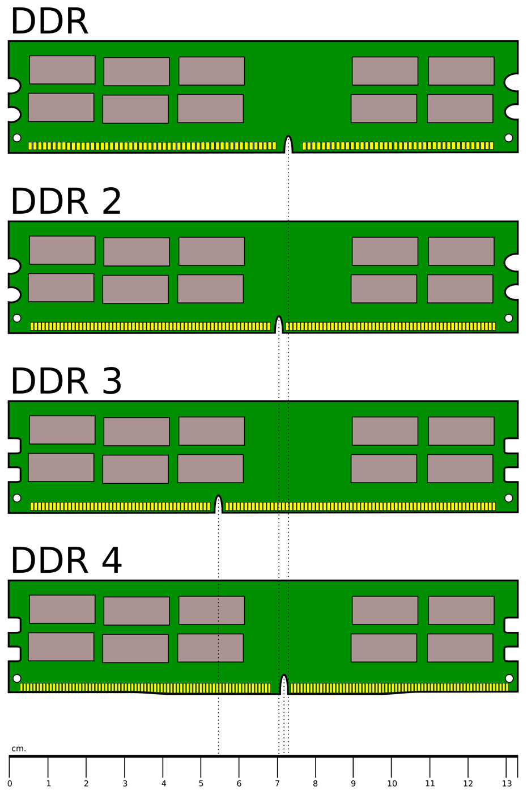
"Memória" é uma das palavras mais mal usadas da informática. O cliente diz "meu celular está sem memória" quando quer dizer armazenamento. Vamos organizar tudo: a hierarquia de memória, a RAM em detalhe (inclusive a evolução dos DDRs) e a ROM.
| Nível | Tipo | Tamanho típico | Velocidade (latência) | Volátil? |
|---|---|---|---|---|
| 1 | Registradores (dentro do núcleo) | Bytes | < 0,3 ns (1 ciclo) | Sim |
| 2 | Cache L1 | 32–80 KB por núcleo | ≈ 1 ns | Sim |
| 3 | Cache L2 | 512 KB–3 MB por núcleo | ≈ 3–5 ns | Sim |
| 4 | Cache L3 | 8–128 MB | ≈ 10–20 ns | Sim |
| 5 | Memória RAM | 8–128 GB | ≈ 60–100 ns | Sim |
| 6 | SSD NVMe | 500 GB–4 TB | ≈ 20–100 µs (≈ 1.000 vezes mais lento que a RAM) | Não |
| 7 | HD | 1–30 TB | ≈ 5–15 ms (≈ 100 mil vezes mais lento que a RAM) | Não |
| 8 | Nuvem e rede | Ilimitado | Dezenas de ms | Não |
Regra de ouro: quanto mais perto da CPU, mais rápida, cara e pequena é a memória.
Exemplo Exemplo: a escala humana da hierarquia
Se o acesso ao cache L1 levasse 1 segundo: - a RAM levaria ≈ 1,5 minuto; - o SSD NVMe levaria ≈ 1 dia; - o HD levaria ≈ 4 meses; - um pacote da internet entre o Brasil e os EUA levaria ≈ 5 anos.
Por isso o computador fica lento quando a RAM acaba e ele precisa usar o disco como memória (o arquivo de paginação).
RAM (Random Access Memory, ou memória de acesso aleatório) é a memória principal de trabalho do computador. Ela guarda temporariamente os programas abertos e os dados em uso, para a CPU acessar rapidamente.
Pense na RAM como a mesa de trabalho e no SSD como o armário. Os documentos ficam guardados no armário, mas para trabalhar você os coloca sobre a mesa. Quanto maior a mesa, mais coisas abertas ao mesmo tempo, sem precisar ir ao armário toda hora.
| Atividade | Como usa a RAM | Quantidade recomendada (2026) |
|---|---|---|
| Abrir abas no navegador | Cada aba do Chrome ou do Edge consome de 100 MB a mais de 1 GB (sites pesados, vídeos, redes sociais) | 30 abas ≈ 4–8 GB só do navegador |
| Office, estudos, internet | Moderado | 8 GB (mínimo) / 16 GB (confortável) |
| Jogos | O jogo carrega texturas, mapas e áudio | 16 GB (mínimo) / 32 GB (ideal em 2026) |
| Editar vídeo e fotos | Arquivos grandes e cache de prévia | 32 GB (Full HD/4K) / 64 GB (4K pesado, efeitos) |
| Gerar imagens e rodar IA localmente | O modelo é carregado na VRAM da GPU, e o excedente vai para a RAM | 32–64 GB (+ GPU com VRAM generosa) |
| Máquinas virtuais, servidores | Cada VM reserva sua parte | 64–256 GB |
Exemplo Exemplo: o "PC lento" com 8 GB
Um usuário com 8 GB de RAM abre o Windows 11 (≈ 3–4 GB), o Chrome com 20 abas (≈ 4 GB), o Spotify e o WhatsApp Desktop (≈ 1 GB). Total: ≈ 9 GB. Faltando memória, o Windows passa a usar o arquivo de paginação no disco: com HD, o PC "trava"; com SSD, fica mais lento, mas usável. A solução é mais RAM, e não "limpar o PC".
| Parte | Material |
|---|---|
| Chips DRAM | Silício: cada bit é um capacitor minúsculo + um transistor (célula 1T1C) |
| PCB do módulo | Fibra de vidro (FR-4) com 6–10 camadas de cobre |
| Contatos | Cobre com banho de ouro |
| Dissipador | Alumínio |
| Chips auxiliares | SPD (EEPROM com a "identidade" do pente), PMIC (na DDR5, regulador de tensão no próprio pente) |
| DRAM | SRAM | |
|---|---|---|
| Célula | 1 transistor + 1 capacitor | 6 transistores (flip-flop) |
| Precisa de refresh? | Sim | Não |
| Velocidade | Rápida | Muito mais rápida |
| Densidade | Alta (muitos GB) | Baixa |
| Custo por bit | Baixo | Muito alto |
| Onde é usada | Memória RAM | Cache da CPU (L1, L2, L3) |
| Geração | Lançamento | Tensão | Pinos (desktop / notebook) | Velocidade (MT/s) | Capacidade típica por pente | Novidades |
|---|---|---|---|---|---|---|
| SDR SDRAM | ≈ 1993–1997 | 3,3 V | 168 / 144 | 66–133 MHz (PC66, PC100, PC133) | 32–512 MB | Sincronia com o clock |
| DDR (DDR1) | 2000 | 2,5 V | 184 / 200 | 200–400 | 128 MB–1 GB | Duas transferências por ciclo |
| DDR2 | 2003 | 1,8 V | 240 / 200 | 400–1.066 | 512 MB–4 GB | Prefetch de 4 bits |
| DDR3 | 2007 | 1,5 V (DDR3L: 1,35 V) | 240 / 204 | 800–2.133 | 2–8 GB | Prefetch de 8 bits, menor consumo |
| DDR4 | 2014 (padrão JEDEC publicado em 2012) | 1,2 V | 288 / 260 | 1.600–3.200 (overclock: 5.000+) | 4–32 GB | Grupos de bancos, maior capacidade |
| DDR5 | 2020 (PCs desde 2021) | 1,1 V | 288 / 262 | 4.800–8.000+ (2026: até 9.000+ em overclock) | 8–64 GB | Dois subcanais de 32 bits por pente, PMIC no pente, ECC interno no chip (on-die) |
| DDR6 | Em desenvolvimento (previsão ≈ 2027+) | — | — | > 10.000 (previsto) | — | — |
Atenção As gerações NÃO são compatíveis entre si
Cada geração tem o chanfro (entalhe) em uma posição diferente, justamente para impedir o encaixe no slot errado. DDR4 não entra em placa DDR5, e vice-versa. A placa-mãe (e o processador) definem qual geração usar.
| Tipo | Onde é usada |
|---|---|
| SO-DIMM | Notebooks e mini PCs (pente menor, de ≈ 67 mm) |
| LPDDR4X / LPDDR5 / LPDDR5X / LPDDR6 | Soldada em celulares, ultrabooks e Macs; baixo consumo; não dá para fazer upgrade. A JEDEC publicou a LPDDR6 em julho de 2025 |
| CAMM2 / LPCAMM2 | Novo padrão (2023–2024) de módulo fino e substituível para notebooks, com desempenho de LPDDR |
| CUDIMM / CSODIMM (DDR5) | Pentes com gerador de clock próprio (CKD), para velocidades acima de 6.400 MT/s (Intel Core Ultra 200S) |
| ECC (Error-Correcting Code) | Servidores e workstations; detecta e corrige erros de bit |
| RDIMM / LRDIMM (Registered) | Servidores com muita memória |
| GDDR6 / GDDR6X / GDDR7 | Memória da placa de vídeo (VRAM) |
| HBM2e / HBM3 / HBM3E / HBM4 | Memória empilhada ao lado de GPUs de IA (NVIDIA H100/H200/B200, AMD MI300) |
Exemplo: DDR5-6000 CL30 32 GB (2 × 16 GB) - DDR5: a geração. - 6000: a velocidade em MT/s (o comércio chama de "MHz"). - CL30: CAS Latency, o número de ciclos que a memória espera para entregar o dado. Menor é melhor. - 2 × 16 GB: um kit com dois pentes de 16 GB.
Dica Latência real em nanossegundos
Latência (ns) = CL × 2.000 ÷ velocidade (MT/s) - DDR4-3200 CL16: 16 × 2.000 ÷ 3.200 = 10 ns - DDR5-6000 CL30: 30 × 2.000 ÷ 6.000 = 10 ns - DDR5-4800 CL40: 40 × 2.000 ÷ 4.800 = 16,7 ns
A DDR5-6000 CL30 tem a mesma latência de uma boa DDR4, mas quase o dobro da largura de banda.
A CPU tem dois canais de memória (nos desktops comuns). Com dois pentes, nos slots certos (geralmente A2 e B2, o 2º e o 4º slots a partir da CPU; confira no manual), ela acessa os dois ao mesmo tempo, dobrando a largura de banda.
Exemplo Exemplo: 1 × 16 GB contra 2 × 8 GB
Num PC com vídeo integrado, trocar 1 × 16 GB por 2 × 8 GB (dual channel) pode aumentar o FPS em jogos entre 30% e 50% (o vídeo integrado usa a RAM como VRAM). Com placa de vídeo dedicada, o ganho costuma ficar entre 5% e 20%, conforme o jogo.
A memória sai de fábrica funcionando numa velocidade padrão JEDEC conservadora (ex.: DDR5-4800). A velocidade anunciada na caixa (ex.: 6.000) só é alcançada ao ativar o perfil de overclock na BIOS: - XMP (Extreme Memory Profile): padrão da Intel. - EXPO (Extended Profiles for Overclocking): padrão da AMD.
Muita gente compra memória de 6.000 MT/s e usa a 4.800 por anos sem saber.
Atenção Crise de preços da DRAM (2025–2026)
Desde o fim de 2025, a demanda dos data centers de IA por HBM e DRAM de servidor fez os fabricantes (Samsung, SK Hynix, Micron) desviarem a produção, e os preços da memória para consumidores dispararam, chegando a 2 a 4 vezes os valores de 2024 em alguns casos. Os preços abaixo refletem esse momento e podem mudar bastante.
| Produto | Menor preço à vista | Faixa comum nas lojas (out/2026) |
|---|---|---|
| DDR4 8 GB 3200 | ≈ R$ 350 | R$ 350–700 |
| DDR4 16 GB 3200 | ≈ R$ 600 | R$ 600–1.400 |
| DDR5 16 GB 5600 | ≈ R$ 1.400 | R$ 1.400–2.500 |
| DDR5 16 GB 6000 | ≈ R$ 2.100 | R$ 2.100–2.900 |
| Kit DDR5 32 GB (2 × 16) 6000 | ≈ R$ 3.950 | R$ 3.950–6.500 |
| SO-DIMM DDR5 16 GB (notebook) | — | R$ 2.000–2.400 |
Fontes: menores preços à vista em agregadores (hardwarebarato.com) e listagens da KaBuM! em out/2026; por exemplo, a Kingston Fury Beast 16 GB DDR5-5600 aparecia entre R$ 2.400 e R$ 2.950 numa grande loja. A imprensa relata alta de ≈ 500% na DDR5 e de 120–180% na DDR4 em 12 meses. A TrendForce previu aumento de 58–63% na DRAM convencional só no 2º trimestre de 2026.
| Problema | Sintoma | Como evitar | Como resolver |
|---|---|---|---|
| Pente mal encaixado ou oxidado | PC liga sem imagem, LED "DRAM" aceso, bipes | Encaixar até as duas travas fecharem | Retirar, limpar os contatos com borracha e isopropílico, reencaixar |
| Memória com defeito | Telas azuis (MEMORY_MANAGEMENT, IRQL_NOT_LESS_OR_EQUAL), travamentos, arquivos corrompidos | Comprar de marca confiável; evitar estática | Testar com MemTest86 (pen drive de boot) ou com o Diagnóstico de Memória do Windows (mdsched); testar um pente por vez para achar o defeituoso; acionar a garantia (muitos pentes têm garantia vitalícia) |
| XMP/EXPO instável | Crashes depois de ativar o perfil | Comprar memórias da QVL (lista de compatibilidade) da placa-mãe | Atualizar a BIOS; usar um perfil mais leve; subir um pouco a tensão do SoC ou da memória (avançado) |
| Pentes diferentes misturados | Não liga, ou funciona na velocidade do mais lento | Comprar em kit | Usar pentes idênticos; configurar a velocidade manualmente |
| Primeiro boot demorado com DDR5 | Tela preta por 1–3 minutos no primeiro boot | Saber que é normal | Aguardar: é o memory training (a placa "aprende" os tempos ideais); depois, ativar o Memory Context Restore |
| Só metade da memória reconhecida | Instalou 32 GB e aparecem 16 | Slots corretos | Conferir os slots no manual; reencaixar; verificar pinos tortos no soquete (LGA) |
| "Memória insuficiente" | Lentidão, abas recarregando | Dimensionar para o uso | Instalar mais RAM; fechar programas em segundo plano |
ROM (Read-Only Memory, ou memória somente de leitura) é uma memória não volátil (não perde os dados sem energia), usada para guardar o firmware: o software básico que dá vida ao hardware.
Hoje, na prática, a "ROM" dos computadores é memória flash que pode ser regravada (por exemplo, numa atualização de BIOS). O nome ficou por tradição.
Atenção ROM do celular ≠ ROM de verdade
No mundo dos celulares, chama-se de "ROM" o sistema operacional instalado ("instalar uma ROM customizada"), e alguns anúncios chamam o armazenamento de "128 GB de ROM". São usos populares do termo. Tecnicamente, o armazenamento do celular é flash NAND (UFS).
Silício, com células de memória baseadas em transistores de porta flutuante (floating gate) ou armadilha de carga (charge trap), encapsulados em plástico ou epóxi.
| Tipo | Ano | Como é gravada | Pode apagar? | Exemplo |
|---|---|---|---|---|
| ROM (mask ROM) | Anos 1960 | Na fábrica, durante a produção do chip | ❌ Nunca | Cartuchos de Atari e Nintendo |
| PROM (Programmable ROM) | 1956 (Wen Tsing Chow) | Uma única vez, "queimando" fusíveis internos com um gravador | ❌ | Equipamentos militares e industriais antigos |
| EPROM (Erasable PROM) | 1971 (Dov Frohman, Intel) | Eletricamente | ✅ Com luz ultravioleta, por uma janelinha de quartzo no chip (≈ 20 minutos) | BIOS dos anos 1980 |
| EEPROM (Electrically Erasable PROM) | ≈ 1978–1980 | Eletricamente | ✅ Eletricamente, byte a byte | Chip SPD dos pentes de memória, configurações |
| Flash (NOR e NAND) | 1980–1987 (Fujio Masuoka, Toshiba) | Eletricamente | ✅ Eletricamente, em blocos (muito mais rápida) | BIOS/UEFI atual (NOR/SPI), SSDs, pen drives, cartões (NAND) |
Curiosidade Por que se chama "flash"
O nome foi sugerido por Shoji Ariizumi, colega de Fujio Masuoka na Toshiba, porque o processo de apagar a memória de uma vez o lembrava do flash de uma câmera fotográfica.
| Característica | RAM | ROM (firmware) |
|---|---|---|
| Volátil? | ✅ Sim (perde tudo ao desligar) | ❌ Não |
| Leitura e escrita | Leitura e escrita constantes | Principalmente leitura (escrita só em atualizações) |
| Velocidade | Muito alta | Mais lenta |
| Capacidade | GB (8–128 GB) | MB (16–64 MB na BIOS) |
| Função | Trabalho temporário (programas abertos) | Instruções permanentes de inicialização |
| Exemplo | Pente DDR5 de 16 GB | Chip da BIOS da placa-mãe |
| Quando você interage | O tempo todo | Ao ligar o PC e ao atualizar a BIOS |
| Problema | Sintoma | Como evitar | Como resolver |
|---|---|---|---|
| BIOS corrompida | Placa liga mas não faz o POST, sem imagem | Não atualizar durante tempestades nem sem nobreak; usar o arquivo exato do modelo da placa | BIOS Flashback, Dual BIOS, recuperação por pen drive ou regravação do chip com um gravador CH341A (assistência técnica) |
| Configurações perdidas | Data errada, ordem de boot resetada | Bateria CR2032 boa | Trocar a bateria |
| BIOS desatualizada | Não reconhece a CPU nova, instabilidade | Verificar a lista de suporte de CPU | Atualizar pelo utilitário da própria BIOS (EZ Flash, M-Flash, Q-Flash) |
| Senha de BIOS esquecida | Bloqueio de acesso | Anotar as senhas | Clear CMOS (no desktop); em notebooks corporativos, pode exigir o fabricante |
1. A memória RAM é...
É a mesa de trabalho do computador.
2. DDR4 encaixa numa placa DDR5?
As gerações não são compatíveis.
3. Por que ativar o XMP/EXPO?
Sem o perfil ativado, ela roda na velocidade JEDEC padrão, mais baixa.
Parte VII · Componentes · Módulo 23
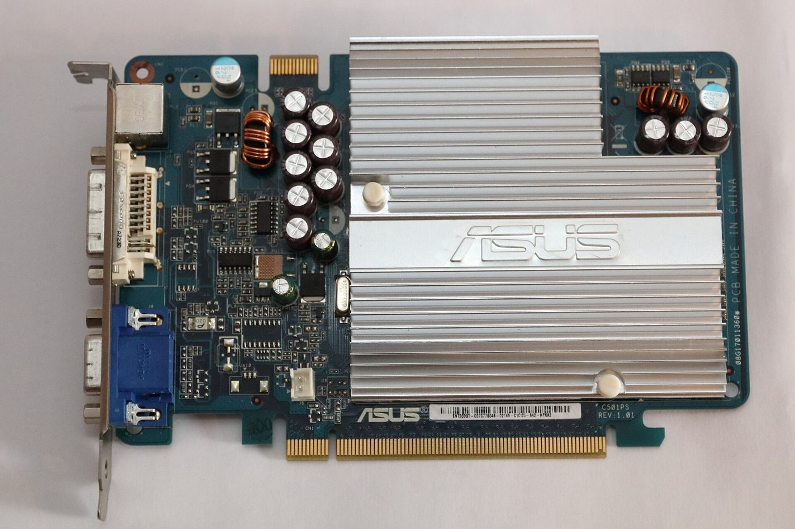
A placa de vídeo (também chamada de placa gráfica, GPU ou, no Brasil, de "VGA") é o componente responsável por gerar as imagens que aparecem no monitor. O coração dela é a GPU (Graphics Processing Unit, ou Unidade de Processamento Gráfico), um processador especializado em fazer milhares de cálculos simples ao mesmo tempo.
Dica GPU × placa de vídeo
Na conversa, os dois termos são usados como sinônimos.
| CPU | GPU | |
|---|---|---|
| Núcleos | Poucos (6–24 no desktop), muito poderosos | Milhares (de 2.000 a mais de 20.000), mais simples |
| Especialidade | Tarefas variadas e sequenciais, com muitas decisões | A mesma operação sobre muitos dados ao mesmo tempo (paralelismo massivo) |
| Analogia | Poucos professores de matemática, que resolvem qualquer problema difícil | Um estádio cheio de alunos fazendo continhas simples ao mesmo tempo |
| Ideal para | Sistema operacional, lógica de jogos, Office, navegação | Gráficos 3D, vídeo, IA, simulações, criptografia |
Exemplo Exemplo: por que a GPU é tão boa em imagens
Uma tela 4K tem 8,3 milhões de pixels. A 60 FPS, a placa de vídeo precisa calcular a cor de ≈ 500 milhões de pixels por segundo, e cada pixel exige dezenas de operações de luz, sombra e textura. O cálculo de cada pixel é independente dos outros: perfeito para milhares de núcleos trabalhando em paralelo.
| Atividade | O que a GPU faz | Importância |
|---|---|---|
| Mostrar a área de trabalho, abrir abas | Desenha as janelas, o texto e as animações (aceleração por hardware do navegador) | Baixa: o vídeo integrado dá conta |
| Assistir a vídeos (YouTube, Netflix) | O decodificador de hardware descomprime H.264, H.265 (HEVC) e AV1 | Baixa a média: o integrado moderno resolve |
| Editar e exportar vídeo | Aceleração de efeitos, prévia em tempo real, codificadores (NVENC da NVIDIA, AMF/VCN da AMD, Quick Sync da Intel) | Alta: exporta muitas vezes mais rápido |
| Jogos | Renderiza o 3D: geometria, texturas, iluminação, ray tracing, upscaling (DLSS, FSR, XeSS) | Muito alta |
| Gerar imagens e vídeos com IA (Stable Diffusion, Flux) e rodar modelos de linguagem localmente | Executa as redes neurais nos Tensor Cores (NVIDIA) ou nas unidades de IA (AMD, Intel) | Muito alta, e a VRAM é o fator decisivo |
| 3D, CAD, renderização (Blender, AutoCAD) | Viewport e renderização (CUDA, OptiX, HIP) | Alta |
| Vários monitores | Cada saída gerencia uma tela | Média |
| Parte | Função |
|---|---|
| GPU (chip) | O processador gráfico |
| VRAM (GDDR6, GDDR6X, GDDR7) | Memória própria e ultrarrápida para texturas, quadros e modelos de IA |
| VRM | Regula a energia da GPU e da memória |
| PCB | A placa de circuito |
| Dissipador (heatpipes ou câmara de vapor) + ventoinhas | Refrigeração |
| Conector PCIe | Comunicação com a placa-mãe (e até 75 W de energia) |
| Conectores de energia extra | 6, 8 (6+2) pinos ou 12V-2x6 / 12VHPWR (até 600 W) |
| Saídas | HDMI, DisplayPort, às vezes USB-C |
| VBIOS | Firmware da placa |
| Parte | Material |
|---|---|
| GPU | Silício (fabricado pela TSMC para NVIDIA e AMD; a Intel usa TSMC e fábricas próprias) |
| VRAM | Chips de silício (Samsung, SK Hynix, Micron) |
| PCB | Fibra de vidro FR-4 com 8–14 camadas de cobre |
| Dissipador | Base e heatpipes de cobre; aletas de alumínio; câmara de vapor de cobre |
| Ventoinhas e proteção | Plástico e/ou alumínio |
| Backplate | Alumínio ou aço |
| Pads térmicos | Silicone com partículas cerâmicas |
| Integrada (iGPU) | Dedicada (dGPU) | |
|---|---|---|
| Onde fica | Dentro do processador | Placa separada no slot PCIe |
| Memória | Usa a RAM do sistema | VRAM própria |
| Desempenho | Básico a moderado (os melhores rodam jogos leves e e-sports em 1080p baixo) | De moderado a extremo |
| Consumo | 5–30 W | 75–575 W |
| Exemplos | Intel UHD / Iris Xe / Arc integrada, AMD Radeon 780M / 890M, Apple M | NVIDIA GeForce RTX, AMD Radeon RX, Intel Arc B |
GeForce RTX 5070 Ti - GeForce: a linha para consumidores (jogos e criação). Para profissionais, há a linha RTX PRO (antiga Quadro); para data centers, H100, H200, B200, GB200. - RTX: tem ray tracing e Tensor Cores (IA). As antigas GTX não têm. - 50: a geração (série 50 = arquitetura Blackwell, de 2025). - 70: a posição na linha: 50 (entrada), 60 (intermediária), 70 (intermediária-alta), 80 (alta), 90 (topo). - Ti / Super: versões mais fortes do mesmo nível.
| Geração GeForce | Ano | Arquitetura | Destaque |
|---|---|---|---|
| GeForce 256 | 1999 | — | Anunciada como "a primeira GPU do mundo" (fazia transformação e iluminação em hardware) |
| GTX 10 | 2016 | Pascal | GTX 1060 foi a GPU mais usada do Steam por anos |
| RTX 20 | 2018 | Turing | Primeiro ray tracing em tempo real e DLSS |
| RTX 30 | 2020 | Ampere | Grande salto de desempenho |
| RTX 40 | 2022 | Ada Lovelace | DLSS 3 (geração de quadros) |
| RTX 50 | 2025 | Blackwell | DLSS 4 com geração multiquadros, GDDR7 |
Radeon RX 9070 XT - RX: linha para consumidores. - 9: a geração (série 9000 = arquitetura RDNA 4, de março de 2025). - 070: a posição na linha (060 intermediária, 070 alta). - XT / XTX: versões mais fortes. - Tecnologias: FSR (upscaling; o FSR 4, da série 9000, usa IA), AFMF (geração de quadros) e Radeon Anti-Lag.
Arc B580 / B570 (arquitetura Battlemage, de dezembro de 2024): placas de entrada com bom custo-benefício, 12 GB de VRAM na B580 e upscaling XeSS.
| Perfil | Exemplos | VRAM recomendada |
|---|---|---|
| Escritório, vídeo, internet | Integrada | — |
| E-sports e jogos leves em 1080p | Integrada forte, RTX 3050, RX 6600 | 6–8 GB |
| Jogos em 1080p no alto | RTX 5060, RX 9060 XT, Arc B580 | 8–16 GB (prefira 12–16 GB em 2026) |
| Jogos em 1440p | RTX 5060 Ti 16 GB, RTX 5070, RX 9070 / 9070 XT | 12–16 GB |
| 4K e criação pesada | RTX 5080, RTX 5090 | 16–32 GB |
| IA local (imagens, LLMs) | RTX 5060 Ti 16 GB (entrada), RTX 5090 (32 GB) | Quanto mais, melhor (16 GB no mínimo) |
| Placa | Menor preço à vista (out/2026) |
|---|---|
| Intel Arc B580 12 GB | ≈ R$ 2.400 |
| RTX 5060 8 GB | ≈ R$ 2.400–2.700 |
| RX 9060 XT 8 GB | ≈ R$ 2.830 |
| RX 9060 XT 16 GB | ≈ R$ 2.800–3.700 |
| RTX 5060 Ti 16 GB | ≈ R$ 4.100–4.300 |
| RTX 5070 12 GB | ≈ R$ 5.100 |
| RX 9070 XT 16 GB | ≈ R$ 5.400 |
| RTX 5080 16 GB | ≈ R$ 11.400 |
| RTX 5090 32 GB | ≈ R$ 29.000 |
Fontes: Pichau, no Pix, em 08/10/2026 (RTX 5060 a R$ 2.399 e RX 9060 XT 16 GB a R$ 2.799) e hardwarebarato.com em 28/10/2026. Os valores oscilam muito: a RX 9060 XT 16 GB variou de R$ 2.800 a R$ 3.700 no mesmo mês, e a RTX 5060 estava ≈ 48% acima da mínima de novembro de 2025. As versões RTX 50 Super foram adiadas por tempo indeterminado por causa da falta de memória.
| Verificação | Como conferir | Exemplo de problema |
|---|---|---|
| 1. Slot PCIe x16 | Praticamente toda placa-mãe moderna tem. PCIe 3.0, 4.0 e 5.0 são compatíveis entre si | Placas com PCIe x8 (RTX 5060, RX 9060 XT) perdem um pouco de desempenho em placas-mãe PCIe 3.0 |
| 2. Tamanho no gabinete | Comparar o comprimento da GPU (ex.: 300 mm) com o "max GPU length" do gabinete, mais a espessura em slots (2, 2,5, 3 ou 3,5 slots) | Uma placa de 340 mm não cabe num gabinete que aceita só 300 mm |
| 3. Fonte (potência) | Seguir a fonte recomendada pelo fabricante (ex.: RTX 5070 → 650 W; RTX 5090 → 1.000 W) | Fonte fraca → PC desliga em jogo |
| 4. Conectores de energia | Ver se a fonte tem os cabos PCIe 6+2 pinos necessários ou o 12V-2x6 (nativo ou adaptador) | Placa que pede 3 × 8 pinos numa fonte com só dois cabos |
| 5. Processador (gargalo) | Equilibrar: uma RTX 5080 com um processador de entrada antigo desperdiça a GPU | GPU trabalhando a 60% em jogo |
| 6. Monitor e cabos | Para 1440p/4K em alta taxa, use DisplayPort 1.4/2.1 ou HDMI 2.1 | Monitor de 165 Hz preso a 60 Hz com cabo HDMI antigo |
| 7. BIOS em UEFI | GPUs novas podem exigir boot em UEFI (sem o modo legado/CSM) | Tela preta em placas-mãe muito antigas |
| 8. Resizable BAR | Ativar na BIOS (Above 4G Decoding + ReBAR); essencial para a Intel Arc | Arc com desempenho muito baixo sem ReBAR |
| Problema | Sintoma | Como evitar | Como resolver |
|---|---|---|---|
| Superaquecimento | GPU acima de 85–90 °C (ou hotspot acima de 100–105 °C), ventoinhas a toda, queda de FPS | Bom fluxo de ar no gabinete; limpeza | Limpar; ajustar a curva das ventoinhas; trocar a pasta e os pads térmicos (placas com mais de 3–4 anos) |
| Artefatos na tela | Quadrados, linhas, cores estranhas, "chuvisco" | Não exagerar no overclock; temperatura sob controle | Remover o overclock; testar em outro PC; se persistir em vários jogos e na área de trabalho, pode ser defeito de VRAM ou da GPU (garantia ou reparo especializado) |
| Tela preta ou "sem sinal" | Monitor não liga | Cabo ligado na placa de vídeo; conectores de energia encaixados | Conferir o cabo, a entrada do monitor e a energia da GPU; reencaixar no slot; atualizar a BIOS da placa-mãe |
| Driver travando | "O driver de vídeo parou de responder", tela piscando | Usar drivers estáveis | Desinstalação limpa com DDU (Display Driver Uninstaller) em modo de segurança e reinstalação do driver oficial |
| Conector 12VHPWR derretido | Cheiro de queimado, conector deformado (casos reais com RTX 4090 e 5090) | Encaixar até o fim, sem dobrar o cabo perto do conector (≥ 35 mm reto), usar o cabo nativo de uma boa fonte ATX 3.1 | Desligar imediatamente; trocar o cabo; verificar o conector da placa (acionar a garantia) |
| PC desliga em jogo | Reinício sob carga | Fonte com boa margem e de qualidade | Testar com outra fonte; usar cabos separados para cada conector PCIe (não use o "rabicho" daisy chain em placas de alto consumo) |
| Placa "envergando" (GPU sag) | Placa caída no lado oposto ao slot | Usar o suporte que acompanha a placa | Instalar suporte; verificar trincas no slot |
| Coil whine | Chiado agudo em FPS muito alto | — | É normal em alguns casos (as bobinas vibram); limitar o FPS reduz bastante |
| Desempenho baixo | FPS abaixo do esperado | Cabo de vídeo na GPU; slot x16 correto | Conferir se o slot está em x16; se o perfil de energia está em "desempenho"; se o notebook está usando a GPU dedicada (e não a integrada) |
Exemplo Exemplo de bancada: "comprei uma placa de vídeo e o jogo continua igual"
O cliente instalou uma RTX nova, mas o FPS não mudou. Diagnóstico: o cabo HDMI estava ligado na placa-mãe. Como o processador tinha vídeo integrado, o Windows desenhava tudo pela iGPU e a placa nova ficava ociosa. Trocar o cabo para a GPU resolveu e multiplicou o FPS por cinco.
Dica Ferramentas para placa de vídeo
GPU-Z (identifica a placa e mostra clocks, temperatura e se o slot está em x16), MSI Afterburner + RivaTuner (monitorar e ajustar), HWiNFO64, DDU (limpar drivers), 3DMark e FurMark (testes de estresse).
1. A diferença básica entre CPU e GPU é que a GPU tem...
Ideal para gráficos e IA.
2. Para gerar imagens com IA localmente, o fator mais importante da GPU é...
O modelo precisa caber na memória de vídeo.
3. Em "GeForce RTX 5070 Ti", o "50" indica...
O "70" indica a posição na linha.
Parte VII · Componentes · Módulo 24
A placa de rede (também chamada de NIC, Network Interface Card, ou adaptador de rede) é o componente que conecta o computador a uma rede, seja ela a rede local de casa ou do escritório, seja a internet (através de um roteador ou modem).
| Atividade | Papel da placa de rede |
|---|---|
| Abrir abas e navegar | Cada página exige dezenas de conexões; a placa recebe os pacotes e os entrega ao sistema |
| Assistir a vídeos / streaming | Recebe o fluxo contínuo (vídeo 4K na Netflix usa ≈ 15–25 Mbps) |
| Jogos online | Latência baixa e estável é mais importante que a velocidade |
| Enviar vídeos editados ou backup na nuvem | O upload depende da placa e do plano |
| Gerar imagens com IA online | O processamento ocorre no servidor; a placa envia o pedido e recebe a imagem |
| Baixar jogos de 100 GB | Uma placa de 2,5 Gbps aproveita planos de fibra acima de 1 Gbps |
| Tipo | Onde fica | Como é |
|---|---|---|
| Onboard cabeada (Ethernet) | Chip na placa-mãe, com porta RJ-45 no painel traseiro | Porta quadrada com 2 LEDs (link e atividade) |
| Onboard Wi-Fi | Módulo M.2 (Key E) na placa-mãe, com antenas parafusadas atrás | Pequena placa de 22 × 30 mm |
| Offboard PCIe | Slot PCIe x1 ou x4 | Placa com porta RJ-45 ou com antenas |
| Adaptador USB | Porta USB | Um "pen drive" com ou sem antena |
| Notebooks | Módulo M.2 Wi-Fi sob a tampa inferior | Placa pequena com dois cabinhos de antena (os fios preto e branco) |
| Parte | Função |
|---|---|
| Controlador MAC | Monta os quadros (frames) de dados e cuida do endereço MAC |
| PHY (transceptor físico) | Converte os bits em sinal elétrico ou de rádio |
| Transformador de isolamento (magnetics) | Isola eletricamente o PC do cabo (proteção) |
| Porta RJ-45 | Conector do cabo |
| Rádio e antenas (Wi-Fi) | Transmitem e recebem em 2,4, 5 e 6 GHz |
| Memória de buffer | Armazena pacotes temporariamente |
Chips de silício, PCB de fibra de vidro com cobre, conector RJ-45 com contatos de cobre banhados a ouro, antenas de cobre ou latão, e invólucro plástico nas antenas.
O MAC (Media Access Control) é um endereço de 48 bits gravado na placa de rede, escrito em hexadecimal: 3C-52-82-1A-9F-04.
- Os 3 primeiros bytes (o OUI) identificam o fabricante (Intel, Realtek, TP-Link...).
- Os 3 últimos identificam a placa.
- Para ver o seu: ipconfig /all no Prompt de Comando ("Endereço Físico").
Dica MAC × IP
A Ethernet foi inventada por Bob Metcalfe e equipe no Xerox PARC em 1973 e padronizada como IEEE 802.3 em 1983.
| Padrão | Velocidade | Cabo mínimo | Uso |
|---|---|---|---|
| Ethernet (10BASE-T) | 10 Mbps | Cat3 | Antigo |
| Fast Ethernet | 100 Mbps | Cat5 | Ainda comum em roteadores baratos (um gargalo para planos de fibra acima de 100 Mbps!) |
| Gigabit Ethernet | 1 Gbps | Cat5e | O padrão atual |
| 2.5GbE | 2,5 Gbps | Cat5e | Placas-mãe intermediárias e altas de 2026 |
| 5GbE / 10GbE | 5 / 10 Gbps | Cat6 / Cat6a | Entusiastas, NAS, escritórios |
| Geração | Padrão IEEE | Ano | Bandas | Velocidade máxima teórica |
|---|---|---|---|---|
| Wi-Fi 4 | 802.11n | 2009 | 2,4 / 5 GHz | 600 Mbps |
| Wi-Fi 5 | 802.11ac | 2013 | 5 GHz | ≈ 3,5 Gbps |
| Wi-Fi 6 | 802.11ax | 2019 | 2,4 / 5 GHz | ≈ 9,6 Gbps |
| Wi-Fi 6E | 802.11ax | 2020 | + 6 GHz | ≈ 9,6 Gbps |
| Wi-Fi 7 | 802.11be | 2024 | 2,4 / 5 / 6 GHz, canais de 320 MHz, MLO (várias bandas ao mesmo tempo) | ≈ 46 Gbps |
Atenção A velocidade "da caixa" não é a real
Os valores máximos teóricos somam todas as antenas e bandas em condições ideais. Na prática, um notebook com Wi-Fi 6 perto do roteador alcança 600–1.200 Mbps; atrás de duas paredes, talvez 100–300 Mbps.
| Banda | Alcance | Velocidade | Interferência |
|---|---|---|---|
| 2,4 GHz | Maior (atravessa paredes) | Menor | Alta (vizinhos, Bluetooth, micro-ondas) |
| 5 GHz | Médio | Alta | Média |
| 6 GHz | Menor | Muito alta | Baixíssima (faixa nova, liberada pela Anatel no Brasil em 2021) |
| Tipo | Uso |
|---|---|
| Placa de fibra (SFP / SFP+) | Servidores e redes corporativas |
| Adaptador USB-Ethernet | Notebooks finos sem porta RJ-45 |
| Adaptador USB Wi-Fi | PCs sem Wi-Fi (os modelos com antena externa são melhores) |
| Placa 4G/5G (modem celular) | Notebooks corporativos |
| Bluetooth | Normalmente vem junto com o Wi-Fi no mesmo módulo |
| Critério | Cabo (Ethernet) | Wi-Fi |
|---|---|---|
| Estabilidade | ⭐⭐⭐⭐⭐ | ⭐⭐⭐ |
| Latência (ping) | Menor e constante | Maior, com variações (jitter) |
| Velocidade real | Plena | Depende da distância, das paredes e da interferência |
| Mobilidade | Nenhuma | Total |
| Indicado para | PC de mesa, jogos, TV, videogame, home office | Celulares, notebooks, onde não chega cabo |
Exemplo Exemplo: "minha fibra de 600 mega só chega a 94 no PC"
Diagnóstico clássico: 94 Mbps é o teto real de uma conexão Fast Ethernet (100 Mbps). As causas possíveis: 1. A placa de rede ou a porta do roteador é de 100 Mbps. 2. O cabo é Cat5 antigo ou tem um dos 4 pares rompido (o Gigabit usa os 4 pares; o Fast Ethernet, só 2). 3. O conector RJ-45 foi mal crimpado.
Solução: cabo Cat5e ou Cat6 bem crimpado e portas Gigabit. Para conferir, veja a velocidade do link no Windows (Configurações → Rede → Propriedades do adaptador): o certo é "1 Gbps", e não "100 Mbps".
| Produto | Faixa de preço |
|---|---|
| Adaptador USB Wi-Fi 4/5 simples | R$ 40–120 |
| Adaptador USB Wi-Fi 6 | R$ 120–300 |
| Placa PCIe Wi-Fi 6E / 7 com Bluetooth | R$ 180–600 |
| Módulo M.2 Wi-Fi 6E / 7 (Intel AX210 / BE200) | R$ 100–300 |
| Placa PCIe Gigabit | R$ 50–120 |
| Placa PCIe 2.5GbE | R$ 120–250 |
| Placa PCIe 10GbE | R$ 400–1.200 |
| Adaptador USB-C para Ethernet Gigabit | R$ 60–200 |
| Problema | Sintoma | Como evitar | Como resolver |
|---|---|---|---|
| "Sem internet" / "Rede não identificada" | Ícone com X ou globo | — | Reiniciar o roteador; ipconfig /release e ipconfig /renew; ipconfig /flushdns; netsh winsock reset e reiniciar |
| Driver ausente (Windows recém-instalado) | Nenhuma rede aparece | Ter o driver da placa-mãe num pen drive | Baixar o driver em outro PC (ou usar o ancoramento USB do celular) |
| Link de 100 Mbps | Velocidade limitada a ≈ 94 Mbps | Cabos Cat5e/Cat6 de qualidade | Trocar o cabo; refazer o conector; verificar a porta do roteador |
| Wi-Fi fraco e instável | Quedas, lentidão | Roteador central e elevado; Wi-Fi 5/6 GHz | Aproximar; usar rede mesh ou repetidor; mudar o canal (apps de análise de Wi-Fi); recolocar as antenas do PC |
| Conflito de IP | "Outro dispositivo está usando este IP" | DHCP automático | Liberar e renovar o IP; configurar reserva de DHCP no roteador |
| DNS lento | Sites demorando a "começar" a abrir | — | Usar DNS públicos rápidos (ex.: 1.1.1.1 da Cloudflare, 8.8.8.8 do Google) |
| Porta RJ-45 queimada | Nada funciona no cabo, LEDs apagados | Usar DPS e filtro de linha (raios chegam pela rede elétrica e também pelo cabo de rede ou do modem) | Usar uma placa PCIe ou um adaptador USB |
| Wi-Fi desconecta ao economizar energia | Quedas no notebook | — | Gerenciador de Dispositivos → adaptador → Gerenciamento de Energia → desmarcar "Permitir que o computador desligue este dispositivo" |
Dica Comandos de rede essenciais (Prompt de Comando)
ipconfig /all: mostra IP, MAC, gateway e DNS.ping 8.8.8.8: testa se há internet (sem depender do DNS).ping google.com: testa a internet e o DNS.tracert google.com: mostra o caminho (os saltos) até o destino.nslookup site.com.br: consulta o DNS.netstat -an: lista as conexões abertas.1. Uma fibra de 600 Mbps chegando a só ≈ 94 Mbps no PC indica, em geral...
O teto real do Fast Ethernet é ≈ 94 Mbps.
2. O endereço MAC é...
O IP muda conforme a rede; o MAC é da placa.
3. Qual banda de Wi-Fi tem maior alcance?
A banda de 2,4 GHz atravessa melhor as paredes, mas é mais lenta e congestionada.
Parte VII · Componentes · Módulo 25
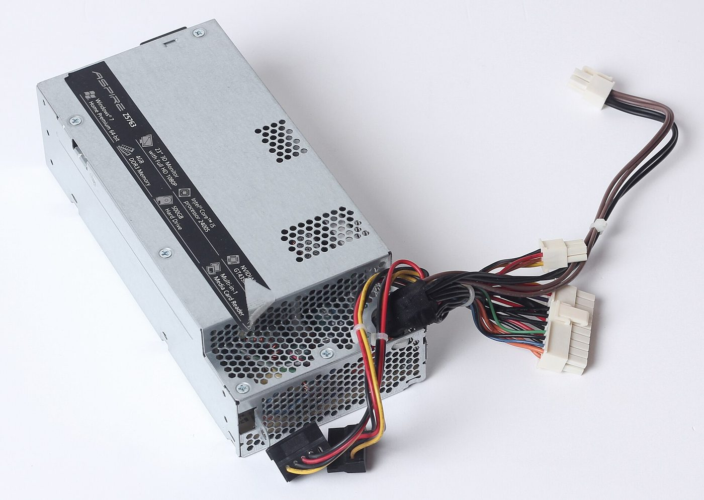
A fonte de alimentação (PSU, Power Supply Unit) é o componente que converte a energia da tomada (corrente alternada de 127 V ou 220 V) nas tensões contínuas e baixas que os componentes usam: +12 V, +5 V e +3,3 V (mais a +5 VSB, de standby).
Ela é, provavelmente, a peça mais subestimada do PC, e uma das mais importantes. Uma fonte ruim pode levar outras peças junto quando falha.
Especialista Ditado de bancada
Entre técnicos e revisores de hardware, repete-se há décadas: "a fonte é a última peça em que você deve economizar". Uma fonte genérica pode custar R$ 100 a menos, mas uma falha pode queimar placa-mãe, SSD e GPU somando milhares de reais.
Exemplo Exemplo: a fonte nas tarefas do dia a dia
TOMADA ─► [Filtro EMI] ─► [Retificador + PFC ativo] ─► [Capacitor de ≈ 400 V]
127/220 V CA │
▼
[Transistores chaveando a ≈ 50–150 kHz] ─► [Transformador]
│
▼
[Retificação + filtragem do secundário]
│
┌────────────┬───────┴─────┐
▼ ▼ ▼
+12 V +5 V +3,3 V
(CPU, GPU, (USB, SATA) (RAM, M.2)
ventoinhas)
| Sigla | Nome | Protege contra |
|---|---|---|
| OVP | Over Voltage Protection | Tensão de saída alta demais |
| UVP | Under Voltage Protection | Tensão de saída baixa demais |
| OCP | Over Current Protection | Corrente excessiva num trilho |
| OPP / OLP | Over Power / Over Load | Potência total acima do limite |
| SCP | Short Circuit Protection | Curto-circuito |
| OTP | Over Temperature Protection | Superaquecimento da fonte |
| SIP / NLO | Surge & Inrush Protection / No Load Operation | Pico na ligação / funcionar sem carga |
| Parte | Material |
|---|---|
| Carcaça | Aço galvanizado ou pintado |
| Placa de circuito | Fibra de vidro com cobre |
| Capacitores | Eletrolíticos de alumínio (os melhores são japoneses: Nippon Chemi-Con, Rubycon, Nichicon, rated 105 °C) e de polímero sólido |
| Transformador e bobinas | Núcleo de ferrite com fio de cobre esmaltado |
| Semicondutores | MOSFETs e diodos de silício; nas fontes premium, transistores de nitreto de gálio (GaN) |
| Dissipadores internos | Alumínio |
| Ventoinha | Plástico e motor de cobre/ímã |
| Cabos | Cobre com isolamento de PVC, bitola 18 AWG (16 AWG nos melhores) |
| Formato | Tamanho | Uso |
|---|---|---|
| ATX | 150 × 86 × 140+ mm | O padrão dos desktops |
| SFX / SFX-L | 125 × 63,5 × 100 / 130 mm | PCs Mini-ITX |
| TFX / Flex ATX | Estreitas e longas | PCs slim e de marca |
| Fonte externa (adaptador / "carregador") | — | Notebooks, mini PCs |
| Proprietárias | Variável | Dell, HP, Lenovo (às vezes com conector 10 ou 12 pinos, padrão ATX12VO) |
| Redundante (servidor) | Módulos hot-swap | Servidores |
| Tipo | Como é | Vantagem |
|---|---|---|
| Não modular | Todos os cabos presos | Mais barata |
| Semimodular | Cabos principais (24 pinos e CPU) presos; o resto, removível | Bom custo-benefício |
| Totalmente modular | Todos os cabos removíveis | Organização máxima |
Atenção Nunca misture cabos modulares de fontes diferentes
Os conectores do lado da fonte não têm padrão entre marcas (nem entre modelos da mesma marca). Usar o cabo de outra fonte pode inverter tensões e queimar o SSD, o HD ou a placa-mãe na hora. Esse é um dos piores erros de bancada.
A eficiência é a porcentagem da energia retirada da tomada que vira energia útil para o PC (o resto vira calor). O programa 80 PLUS (criado em 2004) certifica fontes por nível. Valores para a rede de 115 V interna (padrão americano, usado na certificação):
| Selo | 10% de carga | 20% de carga | 50% de carga | 100% de carga |
|---|---|---|---|---|
| 80 PLUS (o "Standard", apelidado de "White") | — | 80% | 80% | 80% |
| Bronze | — | 82% | 85% | 82% |
| Silver | — | 85% | 88% | 85% |
| Gold | — | 87% | 90% | 87% |
| Platinum | — | 90% | 92% | 89% |
| Titanium | 90% | 92% | 94% | 90% |
| Ruby (novo nível) | 91% | 93% | 95% | 91% |
Há também o selo Cybenetics (ETA para eficiência e LAMBDA para ruído), considerado mais rigoroso pelos revisores.
Exemplo Exemplo: o que a eficiência significa na conta de luz
Um PC precisa de 400 W: - Com fonte 80% eficiente: tira 400 ÷ 0,80 = 500 W da tomada (100 W viram calor). - Com fonte 90% eficiente (Gold): tira 400 ÷ 0,90 = 444 W (44 W viram calor).
Diferença de 56 W. Em 4 h por dia durante um ano: 56 × 4 × 365 = 82 kWh ≈ R$ 82 por ano de economia (a R$ 1,00/kWh), além de menos calor e menos ruído.
Atenção Selo não é sinônimo de qualidade
O 80 PLUS mede só a eficiência. Ele não garante proteções, qualidade dos capacitores, estabilidade das tensões nem baixo ruído elétrico (ripple). Para escolher uma fonte, consulte listas de qualidade de fontes (as PSU Tier Lists dos fóruns e reviews técnicos com testes de carga), e não só o selo.
Exemplo Exemplo resolvido: PC com Ryzen 5 7600 + RTX 5070
| Perfil de PC | Fonte recomendada (2026) |
|---|---|
| Escritório (vídeo integrado) | 350–450 W, 80 PLUS (marca confiável) |
| Gamer de entrada (RTX 5060 / RX 9060 XT) | 550–650 W, Bronze ou Gold |
| Gamer intermediário (RTX 5070 / RX 9070 XT) | 650–750 W, Gold, ATX 3.1 |
| Gamer alto (RTX 5080) | 850 W, Gold, ATX 3.1 |
| Topo (RTX 5090 + Ryzen 9 / Core Ultra 9) | 1.000–1.200 W, Gold ou Platinum, ATX 3.1 |
| Categoria | Faixa de preço (out/2026) |
|---|---|
| Fonte "genérica" (sem certificação, potência "de etiqueta") | R$ 60–150 (evite) |
| 500 W de entrada (marcas populares) | R$ 115–250 |
| 500–650 W, 80 PLUS Bronze, boa linha | R$ 250–500 |
| 750 W Gold | a partir de ≈ R$ 340–390 em promoção; R$ 450–800 o comum |
| 850 W Gold, ATX 3.1 (ex.: XPG Kyber II 850 W) | a partir de ≈ R$ 470; R$ 600–1.000 o comum |
| 1.000–1.200 W Gold/Platinum, ATX 3.1 | R$ 560–2.200 |
Fonte: menores preços à vista em agregadores, out/2026. Fontes boas em promoção estão baratas em relação a RAM e SSD, o que é mais um motivo para não economizar nelas.
| Problema | Sintoma | Como evitar | Como resolver |
|---|---|---|---|
| PC não liga | Nada acontece | Fonte de qualidade; interruptor traseiro em "I" | Conferir a tomada, o cabo e o interruptor; teste do clipe (paperclip test): com a fonte desligada da tomada, ligue o fio verde (PS_ON) a um fio preto (GND) no conector de 24 pinos, ligue a fonte na tomada; se a ventoinha girar, a fonte "liga" (mas isso não prova que as tensões estão corretas). Use um testador de fonte ou multímetro |
| PC desliga ou reinicia em jogo | Desligamento sob carga | Potência adequada e ATX 3.x | Testar com outra fonte; verificar se a GPU está ligada com cabos separados |
| Cheiro de queimado / estalo | — | Não usar fontes genéricas; DPS e filtro de linha | Desligar da tomada imediatamente; não religar; trocar a fonte e testar as outras peças |
| Fonte "chiando" ou zumbindo | Ruído de bobina ou de ventoinha | Fonte de qualidade | Se for a ventoinha, limpar; se for ruído elétrico forte, trocar |
| Ventoinha da fonte parada | Superaquecimento | Muitas fontes têm modo semipassivo (a ventoinha fica parada em carga baixa, o que é normal) | Verificar sob carga; se não girar quando esquenta, trocar a fonte |
| Fonte superaquecendo | Desligamentos | Ventoinha virada para o filtro inferior, com o gabinete elevado do chão (não sobre carpete) | Limpar o filtro; reposicionar |
| Chave 127/220 V errada (fontes antigas, sem PFC ativo) | Em 220 V com a chave em 127 V: a fonte queima na hora | Preferir fontes bivolt automáticas (PFC ativo) | Trocar a fonte (e torcer para ter levado só ela) |
| Tensões fora do padrão | Instabilidade, HDs desconectando, USB falhando | Fonte de qualidade | Medir no HWiNFO (estimativa) ou com multímetro (12 V deve ficar entre 11,4 e 12,6 V) |
Atenção Nunca abra uma fonte
Mesmo desligada da tomada, o capacitor do primário pode guardar cerca de 400 V por minutos. Conserto de fonte é trabalho para técnico de eletrônica especializado, com descarga controlada dos capacitores. Para o técnico de PC, fonte com defeito se troca, não se abre.
1. O que a fonte faz?
Ela também protege contra curto, sobretensão etc.
2. Qual é a margem recomendada sobre o consumo do PC?
A fonte é mais eficiente e silenciosa entre 40% e 70% de carga.
3. Pode-se usar cabos modulares de outra fonte?
Este é um dos piores erros de bancada.
Parte VII · Componentes · Módulo 26
Cabos são os condutores que levam energia ou dados entre os componentes internos e entre o computador e os periféricos. Cada cabo segue um padrão que define o conector, o número de fios, a velocidade e a potência suportadas.
| Tipo | Função | Exemplo de impacto |
|---|---|---|
| Cabos de energia | Levar a energia da fonte até as peças | Um cabo de GPU mal encaixado = PC desligando em jogo |
| Cabos de dados internos | Ligar o armazenamento e o painel frontal à placa-mãe | Um cabo SATA ruim = HD "sumindo" e arquivos corrompidos |
| Cabos de vídeo | Levar a imagem até o monitor | Um HDMI antigo = monitor de 144 Hz preso a 60 Hz |
| Cabos de periféricos (USB) | Teclado, mouse, celular, SSD externo, impressora | Um cabo USB-C "só de carga" = celular que carrega mas não transfere fotos |
| Cabos de rede | Conectar à internet | Um cabo Cat5 danificado = internet presa em 100 Mbps |
| Cabos de áudio | Fones, microfones, caixas | Um P2 com mau contato = chiado |
| Parte | Material |
|---|---|
| Condutores | Cobre (os de qualidade); os baratos usam CCA (alumínio revestido de cobre), que esquenta mais, quebra mais e perde sinal |
| Isolamento | PVC, polietileno, teflon (FEP) em cabos de alta frequência |
| Blindagem | Malha de cobre e/ou folha de alumínio, contra interferência |
| Conectores | Metal (cobre, latão) com banho de ouro ou estanho; invólucro plástico |
| Capa externa | PVC, TPE ou nylon trançado |
| Fibra óptica | Núcleo de vidro (sílica) ou plástico |
| Conector | Pinos | Tensões | Alimenta | Observação |
|---|---|---|---|---|
| ATX 24 pinos (20+4) | 24 | 3,3 / 5 / 12 V | Placa-mãe | O maior conector; tem trava |
| EPS / CPU 8 pinos (4+4) | 8 | 12 V | Processador | Fica perto do soquete; placas topo têm 2 (8 + 8 ou 8 + 4) |
| PCIe 6+2 pinos | 6 ou 8 | 12 V | Placa de vídeo | Até 150 W por conector de 8 pinos (mais 75 W do slot) |
| 12VHPWR / 12V-2x6 (16 pinos) | 12 + 4 sensores | 12 V | GPUs modernas | Até 600 W num conector; encaixe até o fim |
| SATA power (15 pinos) | 15 | 3,3 / 5 / 12 V | HDs, SSDs SATA, drives, alguns hubs de ventoinha e RGB | Conector achatado em "L" |
| Molex (4 pinos) | 4 | 5 / 12 V | Periféricos antigos, ventoinhas, bombas | Herança dos anos 1980–2000 |
| Berg / floppy (4 pinos, pequeno) | 4 | 5 / 12 V | Drives de disquete, alguns acessórios | Quase extinto |
Atenção O "EPS" e o "PCIe" parecem iguais, mas não são
Os dois têm 8 pinos e cabem fisicamente em lugares parecidos, mas a pinagem é invertida (os 12 V e o terra ficam em lados opostos). Os encaixes têm formatos de pino diferentes para impedir o erro, mas forçar o cabo PCIe na tomada EPS (ou vice-versa) pode causar curto e queima. Leia a etiqueta do cabo: "CPU" ou "PCIe/VGA".
| Cabo | Velocidade | Uso | Observação |
|---|---|---|---|
| SATA (7 pinos) | SATA I: 1,5 Gb/s; II: 3 Gb/s; III: 6 Gb/s (≈ 600 MB/s) | HDs, SSDs SATA, drives ópticos | Conector em "L"; prefira os com trava metálica |
| IDE / PATA (40 ou 80 vias) | Até 133 MB/s | HDs e drives antigos (até ≈ 2008) | Cabo "flat" largo, com jumpers master/slave |
| Cabo do painel frontal (F_PANEL) | — | Botões Power e Reset, LEDs | Fios finos de 1 ou 2 pinos: POWER SW, RESET SW, HDD LED (+/−), POWER LED (+/−) |
| USB 2.0 interno (9 pinos) | 480 Mb/s | USB frontal | — |
| USB 3.0 interno (19 pinos) | 5 Gb/s | USB frontal azul | Conector grande e frágil (pinos entortam fácil) |
| USB-C interno (Key-A) | 10–20 Gb/s | USB-C frontal | — |
| HD Audio (9 pinos) | — | Fone e microfone frontais | — |
| Cabos de ventoinha (3 ou 4 pinos) | — | Coolers | — |
| ARGB (3 pinos, 5 V) / RGB (4 pinos, 12 V) | — | Iluminação | Não inverta |
Dica Ligando o painel frontal sem errar
No manual da placa-mãe há o diagrama do F_PANEL. Os botões (Power SW, Reset SW) não têm polaridade. Os LEDs têm (+ e −); se um LED não acender, inverta o conector. Na falta do manual, os pinos costumam vir impressos na própria placa.
| Cabo | Tipo | Resolução e taxa máximas típicas | Áudio? | Situação em 2026 |
|---|---|---|---|---|
| VGA (D-Sub 15 pinos, azul) | Analógico (1987) | Até ≈ 2048 × 1536 (com perda de qualidade) | ❌ | Obsoleto; ainda em projetores e monitores antigos |
| DVI (D, I, A) | Digital (DVI-D) e/ou analógico | 1920 × 1200 a 60 Hz (single link); 2560 × 1600 (dual link) | ❌ | Obsoleto |
| HDMI 1.4 | Digital | 4K a 30 Hz; 1080p a 120 Hz | ✅ | Comum em equipamentos antigos |
| HDMI 2.0 | Digital (18 Gb/s) | 4K a 60 Hz; 1080p a 240 Hz | ✅ | Comum |
| HDMI 2.1 | Digital (48 Gb/s) | 4K a 120–144 Hz, 8K a 60 Hz, VRR | ✅ | Padrão de TVs e consoles atuais (cabo "Ultra High Speed") |
| HDMI 2.2 | Digital (96 Gb/s) | 4K a 480 Hz, 8K a 240 Hz, 12K e 16K | ✅ | Apresentado na CES (janeiro de 2025) e com especificação finalizada em junho de 2025 (cabo certificado "Ultra96"); produtos chegando |
| DisplayPort 1.4 | Digital (32,4 Gb/s) | 4K a 120 Hz, 1440p a 240 Hz (com DSC, mais) | ✅ | Padrão dos monitores gamer |
| DisplayPort 2.0 / 2.1 | Digital (até 80 Gb/s, UHBR20, desde o DP 2.0 de 2019) | 4K a 240 Hz+, 8K | ✅ | GPUs RTX 50 e RX 9000 |
| USB-C (DP Alt Mode / Thunderbolt) | Digital | Igual ao DisplayPort que carrega | ✅ | Notebooks e monitores modernos |
Exemplo Exemplo: o monitor de 165 Hz que fica em 60 Hz
O cliente comprou um monitor gamer de 165 Hz e ligou com o HDMI 1.4 que tinha em casa. Em 1080p, o cabo até passaria de 60 Hz, mas a combinação de cabo e porta limitou a taxa. Solução: usar o cabo DisplayPort que vem na caixa do monitor e configurar em Configurações → Sistema → Tela → Configurações avançadas → Taxa de atualização: 165 Hz.
| Versão | Nome atual (USB-IF) | Velocidade | Ano |
|---|---|---|---|
| USB 1.0 / 1.1 | Low / Full Speed | 1,5 / 12 Mb/s | 1996 / 1998 |
| USB 2.0 | High Speed | 480 Mb/s | 2000 |
| USB 3.0 = 3.1 Gen 1 = 3.2 Gen 1 | USB 5Gbps | 5 Gb/s | 2008 |
| USB 3.1 Gen 2 = 3.2 Gen 2 | USB 10Gbps | 10 Gb/s | 2013 |
| USB 3.2 Gen 2x2 | USB 20Gbps | 20 Gb/s | 2017 |
| USB4 (v1) | USB 40Gbps | 40 Gb/s | 2019 |
| USB4 v2 | USB 80Gbps | 80 Gb/s (até 120 Gb/s num sentido) | 2022 |
| Thunderbolt 3 / 4 | — | 40 Gb/s | 2015 / 2020 |
| Thunderbolt 5 | — | 80 Gb/s (até 120 Gb/s) | 2023–2024 |
Tipos de conector: Tipo A (o retangular), Tipo B (impressoras), Mini-USB, Micro-USB (celulares antigos) e Tipo C (reversível, desde 2014; obrigatório em celulares na União Europeia desde dezembro de 2024).
Atenção USB-C é só o formato do conector
Um cabo USB-C pode ser: - Só de carga (USB 2.0 com pouquíssima velocidade de dados, ou nenhuma); - USB 2.0 (480 Mb/s), USB 5, 10 ou 20 Gbps; - USB4 / Thunderbolt (40–80 Gb/s, com vídeo); - De 60 W ou de 240 W (USB Power Delivery 3.1, com chip e-marker).
Olhe a especificação na embalagem ou os logos do USB-IF ("USB 40Gbps", "240W"). O cabo errado explica o SSD externo "lento" e o notebook que "não carrega".
| Categoria | Velocidade máxima | Frequência | Uso recomendado (2026) |
|---|---|---|---|
| Cat5 | 100 Mb/s | 100 MHz | Obsoleto |
| Cat5e | 1 Gb/s (2,5 Gb/s em distâncias curtas) | 100 MHz | Mínimo aceitável |
| Cat6 | 1 Gb/s (10 Gb/s até ≈ 55 m) | 250 MHz | O mais recomendado para casa e escritório |
| Cat6a | 10 Gb/s até 100 m | 500 MHz | Redes de 10G |
| Cat7 / Cat8 | 10–40 Gb/s | 600–2.000 MHz | Data centers (Cat8 até 30 m) |
| Fibra óptica | Até centenas de Gb/s | — | Backbones; FTTH (fibra até a casa) |
| Conector | Uso |
|---|---|
| P2 (3,5 mm) | Fones e microfones. Cores no PC: verde = saída (fone/caixa), rosa = microfone, azul = entrada de linha |
| P2 TRRS (4 polos) | Fone com microfone (celular, headsets) |
| P10 (6,35 mm) | Instrumentos e áudio profissional |
| RCA | Som e vídeo antigos, caixas de som |
| Óptico (Toslink / S/PDIF) | Áudio digital para home theater |
| XLR | Microfones profissionais |
| Cabo | Faixa de preço |
|---|---|
| SATA de dados (com trava) | R$ 8–25 |
| HDMI 2.0 (1,5–2 m) | R$ 20–50 |
| HDMI 2.1 Ultra High Speed certificado | R$ 60–180 |
| DisplayPort 1.4 / 2.1 | R$ 40–200 |
| Cabo de rede Cat6 (patch cord 2–5 m) | R$ 15–50 |
| Caixa de cabo Cat6 (305 m) | R$ 400–1.000 |
| USB-C 2.0 (carga) | R$ 15–40 |
| USB-C 240 W / USB4 40 Gbps | R$ 80–300 |
| Cabo de força (tripolar, padrão novo) | R$ 15–40 |
| Extensões ou adaptadores de cabos de fonte (sleeved) | R$ 80–300 o kit |
| Problema | Sintoma | Como evitar | Como resolver |
|---|---|---|---|
| Cabo SATA solto ou ruim | HD sumindo, "CRC errors" no CrystalDiskInfo, travamentos | Cabos com trava; não dobrar demais | Trocar o cabo (é a primeira suspeita quando o atributo C7 / UDMA CRC Error Count sobe) |
| Cabo de vídeo com defeito | Imagem piscando, "sem sinal" intermitente, cores erradas | Cabos certificados; não dobrar perto do conector | Trocar o cabo; testar outra porta |
| Cabo USB "só carga" | Carrega, mas o PC não reconhece o dispositivo | Comprar cabos de dados | Trocar o cabo |
| Conector de energia mal encaixado | PC desligando, cheiro de queimado (12VHPWR) | Encaixar até o "clique" | Reencaixar; inspecionar se há derretimento |
| Cabo de rede rompido | Link a 100 Mb/s ou sem link | Não passar sob portas nem esmagar | Testar com um testador de cabo; refazer o RJ-45 |
| Cabos de fonte de marcas diferentes | Peças queimadas | Nunca misturar cabos modulares | — |
| Fluxo de ar bloqueado pelos cabos | Temperaturas altas | Cable management atrás da bandeja | Organizar com abraçadeiras e velcro |
| Chiado no áudio | Ruído e zumbido | Cabos blindados; afastar dos cabos de força | Usar a porta traseira (mais blindada); testar ground loop |
| Mau contato por oxidação | Funciona "às vezes" | Ambiente seco; conectores dourados | Limpar com isopropílico ou limpa-contatos |
1. Para 4K a 120 Hz numa TV, o cabo HDMI deve ser...
O HDMI 2.1 tem 48 Gb/s.
2. Um cabo USB-C sempre transfere dados a 40 Gbps?
Há cabos USB-C só de carga, de USB 2.0, de 10 Gbps, de USB4...
3. Qual é a distância máxima de um cabo de rede de par trançado?
O padrão Ethernet define 100 m.
Parte VII · Componentes · Módulo 27
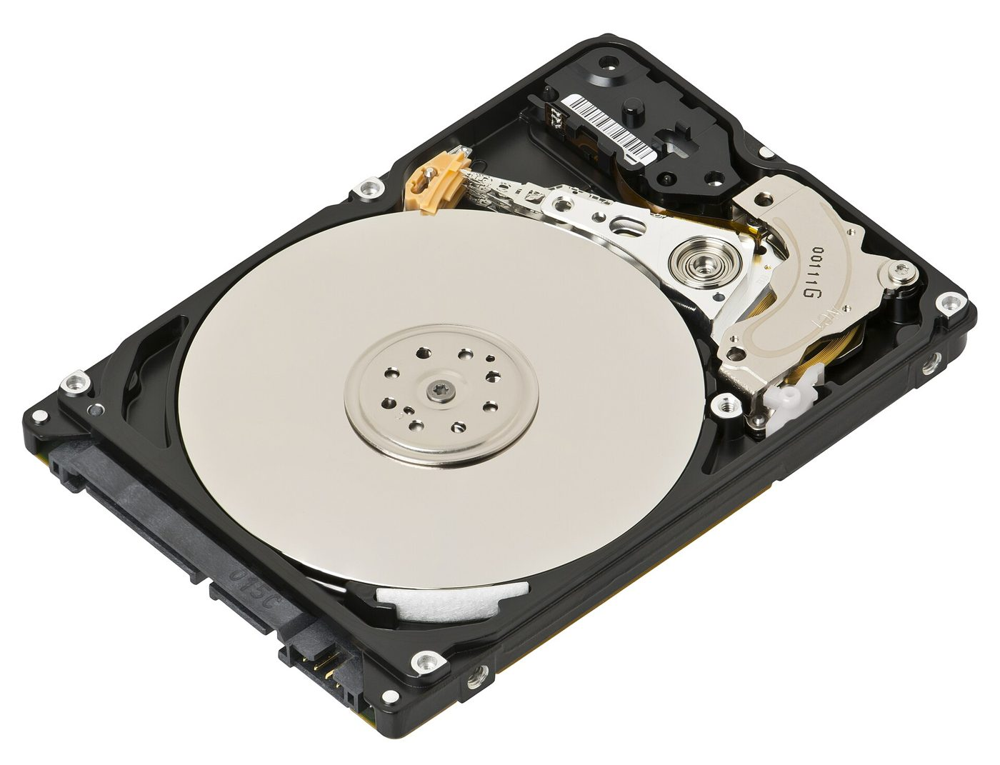
O HD (Hard Disk, ou disco rígido), também chamado de HDD (Hard Disk Drive), é um dispositivo de armazenamento permanente que grava dados magneticamente em discos (pratos) que giram em alta velocidade. É uma memória secundária, não volátil: os dados ficam lá mesmo com o computador desligado.
Tudo o que precisa sobreviver ao desligamento: - O sistema operacional (Windows, Linux), quando o HD é o disco principal. - Programas e jogos instalados. - Arquivos do usuário: fotos, vídeos, músicas, documentos. - Estrutura de organização: a tabela de partições (MBR ou GPT) e o sistema de arquivos (NTFS no Windows, ext4 no Linux, exFAT/FAT32 em pen drives), que funcionam como o "índice" do disco. - Arquivo de paginação (pagefile) e de hibernação.
| Atividade | Papel do HD |
|---|---|
| Ligar o PC e abrir programas | Lê o sistema e os programas para a RAM. Num HD, isso é lento: um Windows 11 pode levar de 1 a 2 minutos para ficar utilizável |
| Abrir abas no navegador | O cache do navegador é gravado no disco; com HD e pouca RAM, abas recarregam devagar |
| Edição de vídeo | Ótimo para guardar o material bruto (muitos TB baratos); ruim como disco de trabalho |
| Jogos | Telas de carregamento muito longas; alguns jogos atuais exigem SSD |
| Backup e arquivamento | O uso ideal hoje: muito espaço por pouco dinheiro |
| Servidores, NAS, câmeras de segurança (DVR/NVR) | Gravação contínua em grande volume |
| Parte | Material |
|---|---|
| Pratos (discos) | Alumínio ou vidro/cerâmica, polidos de forma ultraplana, com camada magnética de liga de cobalto, platina e cromo (e, nos HAMR, ferro-platina), protegida por carbono e lubrificante |
| Cabeças de leitura e gravação | Sensores magnéticos microscópicos (efeito magnetorresistivo gigante, GMR, e túnel, TMR) na ponta de um braço |
| Braço atuador | Alumínio, movido por um motor de bobina (voice coil) com ímãs de neodímio |
| Motor do eixo (spindle) | Motor com mancal de fluido dinâmico |
| Carcaça | Alumínio fundido |
| Placa lógica (PCB) | Controlador, cache (DRAM), firmware |
| Gás interno | Ar filtrado ou hélio (nos HDs de alta capacidade) |
Curiosidade A analogia do avião
Se a cabeça de um HD fosse um Boeing 747, ela estaria voando a milhares de km/h a menos de um milímetro do chão, contando cada folha de grama. Essa analogia, popular entre engenheiros de armazenamento, mostra a precisão absurda de um HD.
| Tecnologia | Como é | Observação |
|---|---|---|
| CMR / PMR (gravação convencional / perpendicular) | Trilhas lado a lado, sem sobreposição | Melhor desempenho de escrita; recomendado para NAS e uso geral |
| SMR (Shingled) | Trilhas sobrepostas como telhas | Mais capacidade e mais barato, mas a escrita fica lenta em gravações grandes. Em 2020 houve polêmica com HDs de NAS que eram SMR sem informar |
| Hélio | HD selado com hélio (menos atrito e turbulência) | Permite mais pratos (8–11) e menos consumo; HDs acima de 10 TB |
| HAMR (Heat-Assisted) | Um laser aquece o ponto por um instante para gravar em material mais estável | Seagate Mozaic 3+: HDs de 36–40 TB (40 TB em produção plena prevista para o 1º semestre de 2026); protótipos de 44 TB (Mozaic 4+) |
| ePMR / MAMR | Assistência por energia (corrente ou micro-ondas) | Western Digital e Toshiba |
| Motivo | HD | SSD |
|---|---|---|
| Partes móveis | O prato precisa girar e o braço precisa se mover até o lugar certo | Nenhuma: acesso eletrônico |
| Tempo de acesso | ≈ 5–15 ms (busca + latência rotacional) | ≈ 0,02–0,1 ms |
| Acesso aleatório (arquivos pequenos espalhados) | ≈ 100–200 IOPS | De 50 mil a mais de 1 milhão de IOPS |
| Leitura sequencial | 80–280 MB/s | 550 MB/s (SATA) a 14.000+ MB/s (NVMe PCIe 5.0) |
| Fragmentação | Arquivos espalhados exigem que o braço pule de um lugar para outro | Indiferente |
Exemplo Exemplo: por que o Windows "rasteja" no HD
Ao iniciar, o Windows lê dezenas de milhares de arquivos pequenos espalhados pelo disco. Um HD faz ≈ 150 acessos por segundo; um SSD NVMe faz centenas de milhares. Por isso trocar um HD por SSD é o upgrade que mais muda a "sensação" de velocidade de um PC antigo: o boot cai de ≈ 90 segundos para ≈ 15 segundos.
Exemplo Exemplo de cálculo: latência rotacional
Num HD de 7.200 rpm: 7.200 ÷ 60 = 120 voltas por segundo → uma volta leva 1 ÷ 120 = 8,33 ms. Em média, espera-se meia volta = 4,17 ms até o setor chegar à cabeça, sem contar o tempo de mover o braço (≈ 8–9 ms). Num 5.400 rpm: meia volta = 5,56 ms.
| Tipo | Características | Uso |
|---|---|---|
| HD 3,5" desktop | 5.400–7.200 rpm, 1–8 TB | PCs, armazenamento secundário |
| HD 2,5" notebook | 5.400 rpm (às vezes 7.200), 500 GB–5 TB | Notebooks antigos, HDs externos |
| HD para NAS (WD Red Plus/Pro, Seagate IronWolf) | Feito para funcionar 24 h por dia, com sensores de vibração, CMR | Servidores domésticos, backups |
| HD para vigilância (WD Purple, Seagate SkyHawk) | Otimizado para gravação contínua | DVR/NVR de câmeras |
| HD empresarial (WD Ultrastar, Seagate Exos) | Alta capacidade (até 30+ TB), hélio, garantia de 5 anos | Data centers |
| HD SSHD (híbrido) | HD com um pequeno cache de flash | Transição (quase extinto) |
| HD externo | HD de 2,5" ou 3,5" num case com USB | Backup, transporte |
| Interfaces antigas | IDE/PATA (até ≈ 2008), SCSI (servidores antigos); hoje SATA (consumidor) e SAS (servidores) | — |
| Capacidade | Faixa de preço (out/2026) |
|---|---|
| 1 TB (3,5", 7.200 rpm) | R$ 350–550 |
| 2 TB (ex.: Seagate Barracuda) | ≈ R$ 1.070 |
| 4 TB (Barracuda) | ≈ R$ 1.450 |
| 8 TB | ≈ R$ 2.260–2.660 |
| 12–20 TB (NAS / empresarial) | R$ 3.500–7.000 |
| HD externo 1 TB (2,5", USB) | R$ 400–600 |
Fonte: listagens da KaBuM! e agregadores, 2026. Os HDs também encareceram, mas continuam sendo os campeões de custo por TB nas capacidades maiores (≈ R$ 280–360 por TB no 4–8 TB), contra ≈ R$ 1.000–1.500 por TB dos SSDs NVMe em out/2026.
| Problema | Sintoma | Como evitar | Como resolver |
|---|---|---|---|
| Setores defeituosos (bad sectors) | Arquivos corrompidos, lentidão extrema, travamentos ao abrir certos arquivos | Evitar impactos e calor; backups | Ver os atributos SMART no CrystalDiskInfo (Realocados, Pendentes, Incorrigíveis). Se estiver em "Cuidado": faça backup imediatamente e troque o HD |
| "Clique da morte" (click of death) | Estalos repetidos, HD não reconhecido | Não derrubar, principalmente ligado | Desligue. Não insista. Dados importantes → empresa de recuperação de dados (as cabeças podem estar danificadas; tentar ligar de novo pode riscar os pratos) |
| HD não reconhecido | Não aparece na BIOS nem no Windows | Cabos firmes | Trocar o cabo SATA e a porta; testar a energia; no Windows, Gerenciamento de Disco → inicializar ou atribuir uma letra |
| HD muito lento (100% de uso no Gerenciador de Tarefas) | Windows "travado" com o disco em 100% | Usar SSD para o sistema | Migrar o sistema para SSD; verificar o SMART; desfragmentar (só HD, nunca SSD) |
| Superaquecimento | Acima de 50–55 °C | Ventilação nas baias frontais | Melhorar o fluxo de ar (ideal: 30–45 °C) |
| Queda ou impacto | Ruídos, falhas | Notebooks com HD: não mexer bruscamente ligados | Backup; trocar |
| Formatação ou exclusão acidental | Arquivos sumiram | Backup 3-2-1 | Parar de usar o disco e tentar recuperar com software (Recuva, PhotoRec, TestDisk) |
| Danos por umidade, inundação ou queda de energia | — | DPS e nobreak | Recuperação profissional |
Dica Regra de backup 3-2-1
Todo HD vai falhar um dia. A pergunta é só quando. Dados da Backblaze, empresa que publica estatísticas de dezenas de milhares de HDs, mostram taxas anuais de falha em torno de 1–2%, maiores nos modelos e idades mais críticos.
1. Por que o HD é mais lento que o SSD?
O tempo de acesso do HD é de ≈ 5–15 ms, contra ≈ 0,05 ms do SSD.
2. Um HD fazendo "cliques" repetidos deve...
Insistir pode riscar os pratos.
3. Qual ferramenta mostra a saúde (SMART) do disco?
Atenção ao status "Cuidado".
Parte VII · Componentes · Módulo 28
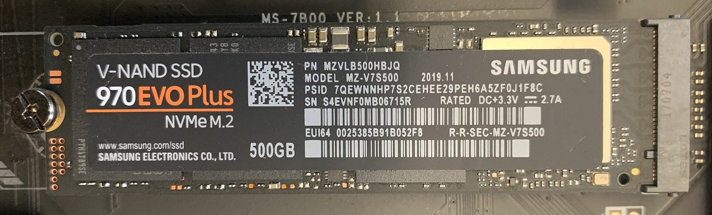
O SSD (Solid State Drive, ou unidade de estado sólido) é um dispositivo de armazenamento permanente que guarda os dados em chips de memória flash NAND, sem nenhuma parte móvel. "Estado sólido" quer dizer justamente isso: tudo é eletrônico, sem motores, pratos ou braços.
O SSD faz o mesmo trabalho do HD (guardar o sistema, os programas e os arquivos), só que dezenas ou centenas de vezes mais rápido no acesso.
| Atividade | Impacto do SSD |
|---|---|
| Ligar o PC | Boot em 10–20 s (contra 60–120 s no HD) |
| Abrir programas e abas | Programas abrem quase instantaneamente; abas descarregadas voltam rápido; o arquivo de paginação fica muito menos doloroso quando a RAM acaba |
| Editar vídeo | Prévia e scrubbing (arrastar a linha do tempo) fluidos em 4K; cache de mídia rápido. O ideal é um NVMe para projetos |
| Jogos | Carregamentos curtos; jogos modernos usam DirectStorage, que leva dados direto do NVMe para a GPU; muitos exigem SSD |
| Gerar imagens e rodar IA localmente | Carrega modelos de vários GB (de 4 a mais de 40 GB) em segundos |
| Uso geral | O computador "parece novo" |
| Formato | Onde fica | Como é |
|---|---|---|
| SATA 2,5" | Baia de 2,5" (ou 3,5" com adaptador), com cabo SATA de dados e de energia | Caixinha leve de plástico ou metal, de 100 × 70 × 7 mm |
| M.2 (o mais comum hoje) | Encaixado direto na placa-mãe, no slot M.2, preso por parafuso ou trava | "Pente" de 22 mm de largura com chips. Tamanhos: 2280 (22 × 80 mm, o padrão), 2242, 2230 (Steam Deck, notebooks finos), 22110 |
| mSATA | Notebooks antigos | Placa pequena (obsoleto) |
| U.2 / U.3 / E1.S / E3.S | Servidores | Formatos empresariais |
| SSD externo | USB-C | Caixinha do tamanho de um cartão de crédito |
| BGA (soldado) | Placa-mãe de ultrabooks e Macs | Chip soldado, não trocável |
| Parte | Material e função |
|---|---|
| Chips NAND flash | Silício; onde os dados ficam (Samsung, Kioxia, SK Hynix, Micron, WD/SanDisk, YMTC) |
| Controlador | Processador do SSD (Phison, Silicon Motion, Samsung, Maxio); gerencia tudo |
| Cache DRAM | Chip de memória que guarda o mapa de onde está cada dado (nos SSDs melhores) |
| PCB | Fibra de vidro e cobre |
| Dissipador (opcional) | Alumínio ou cobre, essencial nos NVMe PCIe 5.0 |
| Capacitores (SSDs empresariais) | Proteção contra queda de energia (power-loss protection) |
| Tipo | Bits por célula | Níveis de carga | Durabilidade (ciclos P/E aprox.) | Velocidade | Custo | Uso |
|---|---|---|---|---|---|---|
| SLC | 1 | 2 | ≈ 50.000–100.000 | ⭐⭐⭐⭐⭐ | $$$$$ | Indústria, cache |
| MLC | 2 | 4 | ≈ 3.000–10.000 | ⭐⭐⭐⭐ | $$$$ | Antigos SSDs premium |
| TLC | 3 | 8 | ≈ 1.000–3.000 | ⭐⭐⭐ | $$$ | O mais comum hoje |
| QLC | 4 | 16 | ≈ 500–1.000 | ⭐⭐ | $$ | SSDs baratos e de grande capacidade |
| PLC | 5 | 32 | Ainda menor | ⭐ | $ | Em desenvolvimento |
| SSD SATA | SSD NVMe PCIe 3.0 | NVMe PCIe 4.0 | NVMe PCIe 5.0 | |
|---|---|---|---|---|
| Barramento | SATA III (6 Gb/s) | PCIe 3.0 x4 | PCIe 4.0 x4 | PCIe 5.0 x4 |
| Protocolo | AHCI (feito para HDs) | NVMe (criado para flash, em 2011) | NVMe | NVMe |
| Leitura sequencial máxima | ≈ 550 MB/s | ≈ 3.500 MB/s | ≈ 7.000–7.450 MB/s | ≈ 12.000–15.000 MB/s |
| Formato | 2,5" ou M.2 SATA | M.2 | M.2 | M.2 (com dissipador grande) |
| Calor | Baixo | Baixo-médio | Médio | Alto |
Atenção Nem todo M.2 é NVMe
Existem SSDs M.2 SATA (com dois entalhes no conector, B+M key), que são limitados a ≈ 550 MB/s, e SSDs M.2 NVMe (com um entalhe, M key). Alguns slots M.2 de placas antigas ou baratas aceitam só um dos tipos. Confira o manual da placa-mãe antes de comprar.
Exemplo Exemplo: quanto tempo dura um SSD de 600 TBW
Um usuário comum grava ≈ 20–50 GB por dia (sistema, atualizações, navegação, downloads): 600 TB = 600.000 GB → 600.000 ÷ 50 = 12.000 dias ≈ 33 anos. Na prática, o SSD fica obsoleto antes de se desgastar. O que realmente mata SSDs é falha do controlador, queda de energia ou firmware com defeito, e não o desgaste das células.
Atenção Preços de SSD em alta
Assim como a RAM, a memória NAND subiu muito entre o fim de 2025 e 2026 por causa da demanda dos data centers de IA. Os valores abaixo são de out/2026.
| Produto | Faixa de preço (out/2026) |
|---|---|
| SSD SATA 480–512 GB | R$ 350–600 (estimativa) |
| SSD SATA 1 TB | R$ 800–1.200 (estimativa) |
| NVMe PCIe 4.0 1 TB de entrada (Kingston NV3) | ≈ R$ 1.150 (Pix) |
| NVMe PCIe 4.0 1 TB intermediário (WD SN7100) | ≈ R$ 1.560–1.750 |
| NVMe PCIe 4.0 1 TB topo (Samsung 990 Pro, WD Black SN850X) | R$ 1.700–2.300 (estimativa) |
| NVMe PCIe 4.0 2 TB | R$ 2.500–4.000 (estimativa) |
| NVMe PCIe 5.0 2 TB | R$ 4.000–6.000 (estimativa) |
Fontes: menores preços à vista em agregadores, out/2026. Para comparar, o mesmo Kingston NV3 1 TB custava ≈ R$ 919 em junho de 2026, e a alta reflete a crise da NAND (a TrendForce previu +70–75% só no 2º trimestre de 2026). As linhas marcadas como estimativa não tinham preço datado nas fontes consultadas.
| Problema | Sintoma | Como evitar | Como resolver |
|---|---|---|---|
| SSD não aparece | Não está na BIOS nem no Windows | Ver a compatibilidade do slot M.2 (SATA × NVMe); o parafuso | Reencaixar; testar outro slot; no Windows, Gerenciamento de Disco → inicializar (GPT) e criar volume |
| Instalação do Windows não encontra o SSD | "Nenhuma unidade encontrada" | — | Carregar o driver Intel RST/VMD na instalação ou desativar o VMD/RAID na BIOS |
| Superaquecimento (NVMe 4.0/5.0) | Velocidade cai muito em cópias longas, temperatura acima de 70–80 °C | Usar o dissipador da placa-mãe (e retirar a película plástica do pad térmico) | Instalar dissipador; melhorar o fluxo de ar |
| Lentidão com o disco cheio | Escritas lentas | Manter 10–20% livre | Liberar espaço |
| Queda de velocidade em cópias grandes | Começa a 3.000 MB/s e cai para 100–500 MB/s | Saber que é o cache SLC acabando (normal em TLC/QLC) | Para gravações enormes e constantes, preferir SSDs TLC com DRAM |
| Firmware com defeito | Desaparecimento, perda de dados, desgaste anormal (casos reais: Samsung 980/990 Pro em 2023) | Atualizar o firmware pelo software oficial (Samsung Magician, WD Dashboard, Crucial Storage Executive) | Atualizar o firmware; acionar a garantia |
| Falha súbita | O SSD "morre" sem aviso (diferente do HD, que costuma dar sinais) | Backup! Nobreak | Garantia; recuperação de dados em SSD é muito difícil (TRIM e criptografia interna) |
| SSD falso / capacidade falsa | "2 TB" baratíssimo que corrompe dados depois de alguns GB | Comprar em lojas confiáveis | Testar com o H2testw ou o ValiDrive |
| Saúde do SSD | — | Acompanhar | CrystalDiskInfo mostra a % de vida útil, as horas ligadas e o total gravado |
| Critério | HD | SSD |
|---|---|---|
| Tecnologia | Magnética, com partes móveis | Eletrônica (flash NAND) |
| Velocidade sequencial | 80–280 MB/s | 550–15.000 MB/s |
| Tempo de acesso | 5–15 ms | 0,02–0,1 ms |
| Ruído | Sim (giro e cliques) | Silencioso |
| Resistência a impactos | Baixa | Alta |
| Consumo | 5–10 W | 2–9 W |
| Custo por TB (out/2026) | Menor (≈ R$ 280–360 no 4–8 TB) | Mais alto (≈ R$ 1.000–1.500) |
| Capacidade máxima comum | Até 30+ TB | 1–8 TB (consumidor) |
| Melhor uso | Backup, arquivo, NAS, vigilância | Sistema, programas, jogos, projetos |
Dica A configuração ideal em 2026
SSD NVMe de 1–2 TB para o sistema, os programas e os jogos + HD de 2–8 TB para backup e arquivos grandes (ou backup em nuvem). É o melhor dos dois mundos.
1. Qual SSD costuma ser mais rápido?
≈ 7.000 MB/s contra ≈ 550 MB/s do SATA.
2. Deve-se desfragmentar o SSD?
Desfragmentar não ajuda e gasta ciclos de escrita.
3. Qual tipo de célula flash é o mais comum hoje?
TLC guarda 3 bits por célula.
Parte VIII · Na prática · Módulo 29
Saber se as peças são compatíveis é a habilidade que separa quem "compra peças" de quem monta computadores. A boa notícia: compatibilidade segue regras, e todas estão nas fichas técnicas. Este módulo ensina a checar uma por uma, na ordem certa, e depois a montar o PC passo a passo.
A placa-mãe é o "centro da compatibilidade": praticamente todas as outras peças precisam ser compatíveis com ela. A ordem de decisão recomendada é:
| # | Verificação | Onde conferir | Exemplo de incompatibilidade |
|---|---|---|---|
| 1 | CPU × soquete da placa-mãe | Ficha da CPU ("Socket") e da placa | Ryzen 7 7700 (AM5) numa placa AM4 ❌ |
| 2 | CPU × chipset e BIOS | "CPU Support List" no site do fabricante da placa | Ryzen 9000 numa B650 com BIOS antiga ❌ (resolve com atualização) |
| 3 | RAM × geração DDR | Ficha da placa ("Memory: DDR5") | DDR4 em placa DDR5 ❌ (nem encaixa) |
| 4 | RAM × velocidade e capacidade máximas | Ficha e QVL (lista de memórias testadas) da placa | Kit DDR5-8000 numa placa que só suporta até 6.400 ⚠️ (funciona mais lento) |
| 5 | RAM × altura do cooler | Altura dos pentes × "RAM clearance" do cooler | Pente com RGB alto encostando numa torre grande ⚠️ |
| 6 | GPU × slot PCIe | Toda placa moderna tem PCIe x16 | Placa x8 em PCIe 3.0 ⚠️ (perde um pouco de desempenho) |
| 7 | GPU × gabinete | "Max GPU length" do gabinete × comprimento da GPU | GPU de 340 mm em gabinete de 300 mm ❌ |
| 8 | GPU × fonte | "Fonte recomendada" e conectores da GPU | RTX 5080 com fonte de 550 W ❌ |
| 9 | SSD × slot M.2 | Manual da placa (M.2 aceita NVMe? SATA? PCIe 4.0 ou 5.0?) | SSD M.2 SATA num slot só NVMe ❌ |
| 10 | Slots compartilhados | Manual da placa ("M2_2 desativa SATA 5 e 6") | Usar o 2º M.2 desliga duas portas SATA ⚠️ |
| 11 | Fonte × potência total | Soma do consumo + margem de 30–50% | — |
| 12 | Fonte × conectores | 24 pinos, EPS 8 pinos (1 ou 2), PCIe 6+2 ou 12V-2x6 | Placa-mãe pede 8 + 8 pinos de CPU e a fonte só tem um ⚠️ |
| 13 | Fonte × gabinete | Formato (ATX × SFX) e comprimento | Fonte ATX longa num gabinete compacto ❌ |
| 14 | Cooler × soquete | Lista de soquetes do cooler | Cooler antigo sem kit para AM5 ou LGA1851 ❌ |
| 15 | Cooler × TDP da CPU | TDP suportado × consumo da CPU | Cooler box num Core i9 ❌ |
| 16 | Cooler × altura no gabinete | "CPU cooler max height" × altura do cooler | Torre de 165 mm em gabinete de 155 mm ❌ |
| 17 | Radiador × gabinete | Suportes de 240/280/360 mm no topo e na frente | AIO 360 num gabinete que aceita só 240 ❌ |
| 18 | Placa-mãe × gabinete | Formatos suportados (ATX, mATX, ITX) | Placa ATX num gabinete mini tower ❌ |
| 19 | Vídeo integrado | Sufixo "F" (Intel), "G" e série (AMD) | Core i5-14400F sem placa de vídeo = sem imagem ❌ |
| 20 | Sistema operacional | Windows 11 exige TPM 2.0, Secure Boot e CPU da lista oficial | PC com CPU de 7ª geração Intel não instala o Windows 11 oficialmente ⚠️ |
Dica Ferramentas para checar compatibilidade
| Peça | Como descobrir sem abrir |
|---|---|
| Processador | Ctrl + Shift + Esc → Desempenho → CPU; ou o CPU-Z (aba CPU) |
| Placa-mãe (modelo e chipset) | CPU-Z (aba Mainboard) ou Win + R → msinfo32 |
| Memória (geração, velocidade, slots ocupados) | CPU-Z (abas Memory e SPD); Gerenciador de Tarefas → Memória ("Slots usados") |
| Placa de vídeo | GPU-Z; Gerenciador de Tarefas → GPU; dxdiag |
| Armazenamento | CrystalDiskInfo; Gerenciador de Tarefas → Disco |
| Fonte | Só abrindo: ler a etiqueta lateral (modelo, potência, certificação) |
| Versão da BIOS | msinfo32 → "Versão/data do BIOS" |
Exemplo Exemplo: planejando um upgrade de memória
O cliente tem 8 GB e quer 16 GB. No CPU-Z → SPD, você vê: DDR4-3200, 1 pente de 8 GB no slot 2, 2 slots livres. A solução mais barata: comprar outro pente de 8 GB DDR4-3200 (de preferência igual) e instalar no slot correspondente, ativando o dual channel. Ganho duplo: mais memória e mais largura de banda.
Objetivo: PC para jogos em 1080p/1440p e edição de vídeo leve.
| Peça | Escolha | Por que é compatível |
|---|---|---|
| CPU | Ryzen 5 7600 (AM5, 65 W, com vídeo integrado básico) | — |
| Placa-mãe | B650M (AM5, DDR5, Micro-ATX, 1 slot M.2 PCIe 4.0) | Soquete AM5 ✅ · BIOS atual ✅ |
| RAM | 2 × 16 GB DDR5-6000 CL30 | DDR5 ✅ · Na QVL ✅ · Dual channel ✅ · Ativar EXPO |
| GPU | RTX 5060 Ti 16 GB (≈ 180 W, 2 slots, ≈ 230–300 mm) | PCIe x16 (a placa usa x8) ✅ |
| SSD | NVMe PCIe 4.0 1 TB | Slot M.2 NVMe ✅ |
| Fonte | 650 W 80 PLUS Gold, ATX 3.1 | ≈ 88 + 180 + 75 = 343 W de consumo → folga de ≈ 90% ✅ |
| Cooler | Torre de 4–5 heatpipes com suporte a AM5 (≈ 155 mm) | Soquete ✅ · TDP ✅ |
| Gabinete | Mid tower com suporte a mATX/ATX, GPU de até 360 mm e cooler de até 165 mm | Tudo cabe ✅ |
Atenção Antes de começar
Bancada limpa, boa luz, pulseira antiestática ligada ao gabinete, manual da placa-mãe aberto, fonte fora da tomada, chave Phillips nº 2 e um potinho para parafusos.
Dica Se não ligar ou não der imagem
Siga a ordem: (1) tomada e interruptor da fonte; (2) cabos de 24 e 8 pinos; (3) cabo do monitor ligado na placa de vídeo; (4) memória encaixada (teste com 1 pente no slot A2); (5) LEDs de diagnóstico da placa (CPU, DRAM, VGA, BOOT); (6) BIOS compatível com a CPU; (7) espaçador fazendo curto; (8) Clear CMOS.
1. Por qual peça se começa a planejar a compatibilidade?
O soquete e o chipset definem quase todo o resto.
2. Que ferramenta online alerta incompatibilidades automaticamente?
Ele confere soquete, tamanho e potência.
3. Ao montar, quando se deve testar o PC fora do gabinete?
Isso evita desmontar tudo se algo falhar.
Parte VIII · Na prática · Módulo 30
Manutenção é o conjunto de ações para manter o computador funcionando com desempenho, segurança e vida útil máximos. Ela se divide em dois grandes tipos (mais um terceiro, moderno):
| Tipo | Quando é feita | Objetivo | Analogia com o carro |
|---|---|---|---|
| Preventiva | Antes do problema, em intervalos programados | Evitar falhas | Trocar o óleo a cada 10 mil km |
| Corretiva | Depois que o problema aparece | Consertar a falha | Trocar a peça quebrada |
| Preditiva | Quando indicadores mostram que a falha está próxima | Antecipar a falha com dados | O painel avisando que a pastilha de freio está gasta |
Exemplo Exemplo: preventiva × corretiva × preditiva no mesmo PC
| Frequência | O que fazer |
|---|---|
| Semanal | Reiniciar o PC (não só suspender); conferir se há atualizações pendentes |
| Mensal | Windows Update e drivers da GPU; limpeza de arquivos temporários (Limpeza de Disco ou Sensor de Armazenamento); verificar o espaço livre (≥ 15–20%); conferir o backup |
| A cada 3–6 meses | Limpeza física dos filtros e da poeira (antes, em ambientes com poeira, pets, fumantes ou obras); conferir as temperaturas; ver a saúde dos discos (CrystalDiskInfo) |
| Anual | Limpeza completa (desmontagem parcial); trocar a pasta térmica se as temperaturas subiram; verificar cabos, conectores e a bateria CMOS; atualizar a BIOS se houver correção importante |
| A cada 2–4 anos | Trocar a pasta térmica da CPU (e da GPU, em placas de 3–4 anos ou mais); avaliar a bateria do notebook |
Atenção O que NÃO usar
Preparação 1. Desligue pelo sistema, tire da tomada e aperte o botão Power por 5 segundos (para descarregar). 2. Leve o PC para um local ventilado (de preferência ao ar livre, porque a poeira vai voar). 3. Coloque a pulseira antiestática. 4. Fotografe o interior antes de mexer. 5. Retire as laterais e os filtros.
| Componente | Como limpar |
|---|---|
| Filtros de poeira | Retire e lave com água e sabão neutro, ou aspire. Seque completamente antes de recolocar |
| Gabinete (interno) | Pincel + ar comprimido, de cima para baixo (a poeira cai) e de dentro para fora |
| Ventoinhas (gabinete, CPU, GPU) | Trave as pás com o dedo ou com um palito antes de soprar (se girarem livres em alta rotação, o motor funciona como gerador e pode danificar o mancal e o circuito); limpe as pás com pincel ou cotonete com isopropílico |
| Dissipador da CPU | Jatos de ar entre as aletas, no sentido contrário ao fluxo normal; pincel nas aletas. Se for trocar a pasta, veja a seção específica |
| Radiador do water cooler | Ar comprimido entre as aletas, pelos dois lados; não amasse as aletas (são frágeis) |
| Placa de vídeo | Ar comprimido pelas aberturas do dissipador, travando as ventoinhas; pincel na proteção. Para trocar a pasta e os pads, a desmontagem exige experiência (e pode afetar a garantia) |
| Placa-mãe | Pincel antiestático macio nos slots e nos dissipadores do VRM; ar comprimido nos slots PCIe e de memória |
| Memória RAM | Retire, limpe os contatos com borracha e isopropílico, sopre o slot e reencaixe |
| Fonte | Não abra. Sopre ar pela grade da ventoinha e pela traseira, travando a ventoinha |
| HD e SSD | Só por fora, com pincel; confira os cabos |
| Conectores e portas | Ar comprimido; contatos oxidados com isopropílico |
| Teclado | Vire de cabeça para baixo, ar comprimido, pano com isopropílico (módulo de Teclado) |
| Mouse | Pano com isopropílico; limpe a lente do sensor com cotonete seco; limpe os pés de PTFE |
| Monitor | Desligado e frio, com pano de microfibra seco ou levemente umedecido com água destilada; nada de álcool nem limpa-vidros em telas foscas (removem o revestimento antirreflexo) |
| Ação | Ferramenta |
|---|---|
| Atualizações do sistema | Windows Update |
| Drivers | Site da fabricante da GPU e do chipset |
| Programas que iniciam com o Windows | Gerenciador de Tarefas → Aplicativos de inicialização |
| Limpeza de temporários | Sensor de Armazenamento / Limpeza de Disco (cleanmgr) |
| Segurança | Microsoft Defender (já incluso e bem avaliado), atenção a e-mails e downloads |
| Saúde dos discos | CrystalDiskInfo |
| Integridade do sistema | sfc /scannow e DISM /Online /Cleanup-Image /RestoreHealth (no Terminal como administrador) |
| Backup | Regra 3-2-1 (Histórico de Arquivos, OneDrive, Google Drive, HD externo) |
| Otimização de SSD | Automática (TRIM, em "Otimizar unidades"); nunca desfragmentar o SSD |
| Sintoma | Causas mais prováveis (em ordem) | Teste e solução |
|---|---|---|
| Não liga (nenhum sinal de vida) | Tomada ou filtro de linha; interruptor da fonte; cabo de força; cabo do botão Power; fonte; curto; placa-mãe | Testar a tomada; dar partida pelos pinos PWR_SW; testar a fonte (testador ou outra fonte); ligar fora do gabinete |
| Liga, gira e desliga em seguida | Curto (espaçador), cabo de 8 pinos (CPU) desconectado, cooler da CPU não detectado, fonte | Conferir o EPS de 8 pinos; espaçadores; ligar com o mínimo de peças |
| Liga, mas sem imagem | Cabo de vídeo na saída errada; memória; GPU sem energia; BIOS incompatível; CPU sem vídeo integrado | LEDs de debug; reencaixar a RAM; 1 pente; outro cabo e outra entrada; Clear CMOS |
| Bipes ao ligar | Código de erro do POST (memória, vídeo, CPU) | Consultar o manual da placa ou do fabricante da BIOS |
| Tela azul (BSOD) | Driver; memória; overclock ou XMP instável; disco com defeito; superaquecimento | Anotar o código de parada (ex.: MEMORY_MANAGEMENT); MemTest86; desativar overclock; atualizar drivers; ver o Visualizador de Eventos e os arquivos de despejo (WhoCrashed, BlueScreenView) |
| Desliga sozinho sob carga | Superaquecimento; fonte fraca ou defeituosa | HWiNFO64 (temperaturas); testar outra fonte |
| Travamentos aleatórios | RAM; disco; temperatura; driver; fonte | MemTest86; CrystalDiskInfo; HWiNFO; Visualizador de Eventos |
| Lentidão geral | HD (trocar por SSD); pouca RAM; disco cheio; muitos programas na inicialização; malware; throttling térmico | Gerenciador de Tarefas (o que está em 100%?); limpeza; upgrades |
| Ruído anormal | Ventoinha com rolamento gasto; HD com defeito ("cliques"); coil whine | Identificar a origem parando as ventoinhas uma por vez (com cuidado); backup imediato em caso de cliques no HD |
| Sem internet | Roteador; cabo; driver; configuração IP/DNS | ping, ipconfig, reset de rede (Configurações → Rede → Redefinição de rede) |
| Sem som | Dispositivo padrão errado; driver; cabo na porta errada | Configurações de som; reinstalar o driver |
| Data e hora sempre erradas | Bateria CMOS | Trocar a CR2032 |
| Cheiro de queimado | Fonte, conector derretido, componente em curto | Desligar e tirar da tomada imediatamente; inspeção visual (capacitores estufados, marcas pretas) |
| Bipes | Significado comum |
|---|---|
| 1 curto | POST concluído com sucesso (em muitas placas) |
| 1 longo + 2 curtos / 1 longo + 3 curtos | Problema de vídeo |
| 3 curtos (ou bipes longos contínuos) | Problema de memória |
| Bipes contínuos rápidos | Memória ou energia |
| 5 curtos | Processador |
Os códigos variam por fabricante (AMI, Award, Phoenix) e por placa; consulte sempre o manual. Placas modernas preferem LEDs de diagnóstico (CPU, DRAM, VGA, BOOT) ou um display de POST (código hexadecimal).
Exemplo Exemplo completo de manutenção corretiva
Queixa: "O PC desliga sozinho quando jogo há uns 20 minutos." 1. Entrevista: começou no verão; o PC tem 3 anos; nunca foi limpo. 2. Reprodução: com o HWiNFO64 aberto, um jogo leva a GPU a 92 °C e a CPU a 98 °C antes de desligar. 3. Hipótese: superaquecimento (poeira e pasta seca). 4. Ação: limpeza completa, troca da pasta da CPU e ventoinha traseira que estava travada substituída. 5. Teste: 1 hora de jogo: GPU a 74 °C e CPU a 79 °C, sem desligamentos. 6. Orientação: limpar a cada 6 meses e não deixar o gabinete encostado na parede.
1. Limpar a poeira a cada 6 meses é manutenção...
É feita antes do problema.
2. Trocar o HD porque o SMART indica setores realocados é manutenção...
Ela se baseia em indicadores, antes da falha.
3. O que fazer com as ventoinhas ao usar ar comprimido?
Girando livre em alta rotação, o motor pode se danificar.
Parte VIII · Na prática · Módulo 31
O notebook (ou laptop, "computador de colo") é um computador portátil completo: tela, teclado, touchpad, bateria, alto-falantes, webcam e todos os componentes internos (CPU, RAM, armazenamento, rede) num único corpo dobrável. Ele foi projetado para equilibrar três forças que brigam entre si: desempenho, autonomia de bateria e portabilidade (peso e espessura).
| Ano | Marco |
|---|---|
| 1968–1972 | Alan Kay (Xerox PARC) idealiza o Dynabook, um "computador pessoal para crianças de todas as idades", conceito que inspirou notebooks e tablets |
| 1981 | Osborne 1: primeiro portátil comercial de sucesso, com ≈ 11 kg e tela de 5"; os "portáteis" desse tipo eram chamados de luggables ("carregáveis") |
| 1982 | GRiD Compass: primeiro com o formato concha (clamshell) de hoje; foi ao espaço em missões da NASA |
| 1989 | Toshiba T1000 / Compaq LTE: popularizam o nome "notebook" |
| 1991 | Apple PowerBook: teclado recuado e apoio para as mãos com trackball no centro, o layout atual |
| 1992 | IBM ThinkPad 700C, com o famoso TrackPoint vermelho |
| 2003 | Intel Centrino: Wi-Fi integrado vira padrão |
| 2007–2008 | Netbooks (Asus Eee PC) e MacBook Air (o "notebook no envelope") |
| 2011 | A Intel cria a categoria Ultrabook |
| 2020 | Apple M1: notebooks com chip ARM de altíssima eficiência |
| 2024–2026 | Copilot+ PCs, com NPU de 40+ TOPS para IA local (Snapdragon X, Intel Core Ultra, AMD Ryzen AI) |
Tudo o que um desktop faz, com mobilidade: estudar, trabalhar remotamente, apresentar em reuniões, editar em viagem, jogar (nos modelos gamer). A grande diferença está nas limitações físicas: menos espaço para dissipar calor, menos energia (bateria) e peças menores e mais caras.
| Tipo | Características | Peso típico | Bateria | Uso | Preço médio (out/2026) |
|---|---|---|---|---|---|
| Notebook de entrada / básico | CPU de baixo consumo (Intel Core i3/Ultra 5 da série U, Ryzen 3/5), 8 GB de RAM, SSD de 256–512 GB, tela Full HD | 1,6–1,9 kg | 5–9 h | Estudos, escritório, internet | R$ 2.200–3.300 |
| Intermediário | Core i5/i7 ou Ryzen 5/7, 16 GB, SSD de 512 GB–1 TB | 1,5–1,8 kg | 6–10 h | Trabalho, multitarefa | R$ 3.000–5.000 |
| Ultrabook / ultrafino | Fino (< 18 mm), leve, chassi de metal, tela de alta qualidade, boa bateria; RAM muitas vezes soldada | 1,0–1,4 kg | 10–20 h | Executivos, viajantes | R$ 5.000–15.000 |
| Notebook gamer | CPU H/HX + GPU dedicada (RTX 5050 a 5090 Laptop), tela de 144–240 Hz, refrigeração reforçada | 2,0–3,0 kg | 3–6 h (bem menos jogando) | Jogos, edição, IA | R$ 4.700–25.000+ |
| Workstation móvel | GPU profissional (RTX PRO), memória ECC, certificações para software (CAD) | 2,0–2,8 kg | 4–8 h | Engenharia, 3D | R$ 12.000–40.000 |
| 2 em 1 / conversível | Tela touch que gira 360° ou se destaca do teclado | 1,2–1,6 kg | 8–14 h | Anotações, desenho, apresentações | R$ 3.500–12.000 |
| Chromebook | Sistema ChromeOS, baseado na nuvem; hardware simples | 1,2–1,6 kg | 8–12 h | Escolas, uso básico | R$ 1.500–3.000 |
| Notebook robusto (rugged) | Resistente a queda, água e poeira (normas IP65 e MIL-STD-810) | 2–4 kg | Variável | Campo, militar, indústria | R$ 10.000+ |
| MacBook (Air / Pro) | Chips Apple M (ARM), memória unificada, macOS | 1,2–2,1 kg | 15–24 h | Criação, desenvolvimento, uso geral | R$ 8.000–40.000 |
"Microbook" não é uma categoria técnica oficial. O termo aparece no Brasil em nomes de produtos e no uso popular para notebooks muito pequenos e leves (telas de 10–12"), herdeiros dos netbooks (2007–2012), que eram baratos e fracos, com telas de 7–10". Hoje esse papel é ocupado por Chromebooks pequenos, ultrabooks de 13" e tablets com teclado. Se um cliente pedir um "microbook", pergunte o uso: provavelmente ele quer leve, barato e com bateria boa.
Curiosidade Netbook, a febre que passou
Os netbooks (ex.: Asus Eee PC, de 2007) venderam milhões por volta de 2009 com a proposta de "só internet". Eles morreram com a chegada dos tablets (iPad, 2010) e dos ultrabooks, que eram mais rápidos.
| Componente | No notebook | Upgrade? |
|---|---|---|
| Processador | Soldado (BGA); versões de baixo consumo (U, P, V: 15–28 W) ou alto desempenho (H, HX: 45–55 W e mais) | ❌ Não dá para trocar |
| GPU | Integrada ou dedicada soldada; a mesma RTX "Laptop" é mais fraca que a de desktop de mesmo nome, por causa do limite de energia (TGP) | ❌ |
| Memória RAM | SO-DIMM (removível) ou LPDDR soldada (mais rápida e econômica, mas fixa); começa a surgir o LPCAMM2 (fino e substituível) | ⚠️ Só se for SO-DIMM ou CAMM |
| Armazenamento | SSD M.2 (2280 ou 2230); notebooks antigos tinham HD de 2,5" | ✅ Normalmente sim |
| Wi-Fi | Módulo M.2 Key E (às vezes soldado) | ✅ Às vezes |
| Refrigeração | Heatpipes ou câmara de vapor + ventoinhas blower | Limpeza e troca de pasta |
| Bateria | Interna (íon-lítio ou polímero de lítio) | ✅ Peça de reposição |
| Fonte | Externa (o carregador), de 45 a 330 W; cada vez mais por USB-C PD | ✅ |
| Tela | LCD IPS, OLED ou Mini-LED, ligada por um cabo flat (eDP) | ✅ Com técnico |
| Teclado | Tesoura; em muitos modelos, rebitado ao chassi (troca-se o conjunto) | ⚠️ |
Atenção "Mesmo nome, desempenho diferente"
Uma RTX 5070 Laptop pode ter desempenho muito diferente de um notebook para outro, conforme o TGP (potência máxima) que o fabricante liberou (de ≈ 50 W a mais de 115 W). Sempre confira o TGP nas especificações e nos reviews, e não só o nome da GPU.
As baterias de notebook são de íon-lítio (Li-ion) ou polímero de lítio (Li-Po). Elas armazenam energia movendo íons de lítio entre o ânodo (grafite) e o cátodo (óxidos metálicos) através de um eletrólito. Cada célula tem ≈ 3,6–3,85 V; os notebooks usam 3 ou 4 células em série (≈ 11,1–15,4 V).
| Unidade | O que é | Exemplo |
|---|---|---|
| Wh (watt-hora) | Energia total: a melhor medida para comparar notebooks | 41 Wh (básico), 70–99,9 Wh (topo) |
| mAh | Carga (depende da tensão; serve para comparar baterias da mesma tensão) | 4.000 mAh × 11,55 V ≈ 46 Wh |
| Ciclos | Uma carga completa de 0% a 100% (ou a soma de cargas parciais) | 300–1.000 ciclos até ≈ 80% da capacidade |
Exemplo Exemplo: estimar a autonomia
Um notebook com bateria de 56 Wh consumindo em média 8 W (navegação, brilho médio): 56 ÷ 8 = 7 horas. Jogando com GPU dedicada, consumindo ≈ 90 W: 56 ÷ 90 ≈ 37 minutos. É por isso que notebook gamer joga na tomada.
Curiosidade Por que o limite de 99,9 Wh?
Regras de aviação (IATA e da maioria das companhias aéreas) permitem baterias de até 100 Wh na bagagem de mão sem autorização especial. Por isso os notebooks mais potentes param em 99,9 Wh.
| Problema | Sintoma | O que fazer |
|---|---|---|
| Bateria viciada / desgastada | Autonomia muito baixa, desliga com 20–30% | Ver a saúde: no Terminal, powercfg /batteryreport compara a capacidade de projeto com a carga completa atual. Abaixo de ≈ 60–70%: trocar |
| Bateria estufada | Touchpad levantando, tampa empenada, teclado estufado | PERIGO: pare de usar e de carregar imediatamente; não perfure nem amasse; leve a uma assistência para troca e descarte correto (risco de incêndio) |
| Não carrega | "Conectado, não carregando" | Pode ser o limite de carga ativo (normal), o carregador, o conector DC ou USB-C, ou o circuito de carga |
| Descarte | — | Nunca no lixo comum: pontos de coleta de eletrônicos (é o que exige a Política Nacional de Resíduos Sólidos, Lei 12.305/2010) |
| Uso | CPU | RAM | Armazenamento | Tela | Extra |
|---|---|---|---|---|---|
| Estudos e internet | Core i3/Ultra 5 série U, Ryzen 5 | 8 GB (16 GB recomendado) | SSD de 256–512 GB | Full HD IPS | Bateria ≥ 41 Wh |
| Trabalho e multitarefa | Core i5/i7, Ryzen 5/7 | 16 GB | SSD de 512 GB–1 TB | Full HD ou 2,5K IPS, 300+ nits | Webcam 1080p, Wi-Fi 6 |
| Edição de foto e vídeo | Core Ultra 7/9 H, Ryzen 7/9, Apple M | 32 GB | SSD de 1–2 TB | Boa cobertura de cor (100% sRGB ou DCI-P3), OLED | GPU dedicada ou Apple Pro |
| Jogos | Core i5/i7 H, Ryzen 7 H | 16–32 GB | SSD de 1 TB | 144–240 Hz | GPU RTX com TGP alto, boa refrigeração |
| Viagem | Eficiente (série V, Snapdragon X, Apple M) | 16 GB | 512 GB | 13–14" | < 1,3 kg, bateria de 15+ h |
1. Qual é a medida mais útil para comparar baterias de notebook?
Wh é a energia total.
2. O que fazer com uma bateria estufada?
Há risco de incêndio.
3. Em geral, o que dá para fazer upgrade num notebook moderno?
CPU e GPU são soldadas.
Parte IX · Fronteira · Módulo 32
A computação quântica é a fronteira mais comentada (e mais mal explicada) da tecnologia. Ela não é "um computador comum muito mais rápido". É uma outra forma de computar, baseada nas leis da mecânica quântica, que é extraordinária para alguns problemas específicos e inútil para a maioria das tarefas do dia a dia.
Um computador quântico processa informação usando qubits (bits quânticos), que exploram três fenômenos da física quântica: superposição, emaranhamento e interferência. Com isso, alguns problemas que levariam milhões de anos num supercomputador clássico podem, em teoria, ser resolvidos em horas ou minutos.
| Bit (clássico) | Qubit (quântico) | |
|---|---|---|
| Estados | 0 ou 1 | Superposição de 0 e 1 ao mesmo tempo (com "pesos", as amplitudes) |
| Leitura | Sempre dá o mesmo valor | A medição "colapsa" o qubit em 0 ou 1, com certa probabilidade |
| Combinação | n bits guardam 1 de 2ⁿ valores por vez | n qubits descrevem 2ⁿ amplitudes ao mesmo tempo |
| Cópia | Pode ser copiado | Não pode ser copiado (teorema da não clonagem) |
| Estabilidade | Muito estável | Frágil: perde a informação com calor, vibração, radiação (a decoerência) |
| Exemplo físico | Tensão num transistor | Corrente num circuito supercondutor, um íon preso por laser, um átomo neutro, um fóton |
Exemplo Exemplo: a moeda girando
Um bit é uma moeda parada na mesa: ou é cara (0) ou coroa (1). Um qubit é uma moeda girando: enquanto gira, ela não é só cara nem só coroa, mas uma combinação das duas. Quando você bate a mão na moeda (a medição), ela cai em cara ou coroa. O truque da computação quântica é inclinar as probabilidades enquanto as moedas giram, para que, no fim, a resposta certa seja a que tem mais chance de aparecer.
Atenção O mito do "testa todas as respostas ao mesmo tempo"
É comum ouvir que o computador quântico "testa todas as possibilidades em paralelo". Isso é enganoso: ao medir, você recebe um único resultado aleatório. A vantagem só aparece quando um algoritmo inteligente usa a interferência para aumentar a probabilidade da resposta certa. Por isso existem poucos problemas em que o quântico ganha de verdade.
| Ano | Marco | Quem |
|---|---|---|
| 1900–1930 | Nasce a mecânica quântica | Planck, Einstein, Bohr, Heisenberg, Schrödinger, Dirac |
| 1980 | Primeiro modelo de máquina de Turing quântica | Paul Benioff (EUA); Yuri Manin (URSS) propõe a ideia de forma independente |
| 1981–1982 | Palestra no MIT (1981, publicada em 1982): "Simulating Physics with Computers". Para simular a natureza, é preciso um computador quântico | Richard Feynman (Nobel de Física, 1965) |
| 1985 | Computador quântico universal (o equivalente quântico da máquina de Turing) | David Deutsch (Oxford) |
| 1992 | Algoritmo de Deutsch–Jozsa: primeiro exemplo de vantagem exponencial (num problema artificial) | Deutsch e Richard Jozsa |
| 1994 | Algoritmo de Shor: fatora números grandes de forma eficiente, o que ameaça a criptografia RSA | Peter Shor (Bell Labs) |
| 1995 | Primeiros esquemas de correção de erros quânticos | Peter Shor; Andrew Steane |
| 1996 | Algoritmo de Grover: busca em base de dados não ordenada com ganho quadrático | Lov Grover (Bell Labs) |
| 1998 | Primeiros algoritmos executados em computadores quânticos de 2–3 qubits (por ressonância magnética nuclear, RMN) | Oxford, IBM, MIT, Stanford |
| 2001 | A IBM fatora o número 15 (= 3 × 5) com 7 qubits usando o algoritmo de Shor (RMN) | IBM e Stanford |
| 2011 | D-Wave One: primeiro computador quântico comercial (do tipo annealing, especializado em otimização) | D-Wave (Canadá) |
| 2016 | IBM Quantum Experience: primeiro computador quântico acessível pela nuvem, gratuitamente | IBM |
| 2019 | Sycamore (53 qubits) anuncia a "supremacia quântica": um cálculo em ≈ 200 s que levaria, segundo o Google, 10 mil anos num supercomputador. A IBM contestou, estimando ≈ 2,5 dias | |
| 2021–2023 | IBM Eagle (127 qubits, 2021), Osprey (433, 2022), Condor (1.121, 2023) e Heron (2023, menos qubits e muito menos erros) | IBM |
| 2023 | Demonstrações de qubits lógicos com átomos neutros | Harvard, QuEra e MIT |
| Dez. 2024 | Willow (105 qubits): primeira demonstração convincente de correção de erros "abaixo do limiar" (quanto mais qubits na correção, menos erros) | Google Quantum AI |
| Fev. 2025 | Majorana 1: chip com qubits topológicos; recebido com ceticismo pela comunidade científica | Microsoft |
| Out. 2025 | Nobel de Física de 2025: John Clarke, Michel Devoret e John Martinis, pelo tunelamento quântico macroscópico em circuitos elétricos (anos 1980), a base dos qubits supercondutores | Academia Sueca |
| 22/10/2025 | Quantum Echoes (artigo na Nature): algoritmo no Willow ≈ 13.000 vezes mais rápido que o melhor método clássico, com resultado verificável (outro computador quântico de qualidade semelhante pode reproduzi-lo) | |
| Nov. 2025 | IBM Nighthawk (120 qubits) e Loon (demonstra os elementos de hardware para tolerância a falhas); decodificação de erros em tempo real em menos de 480 ns. Meta: o Starling, tolerante a falhas, em 2029 | IBM |
| Nov. 2025 | Helios: 98 qubits de íons de bário, com fidelidades anunciadas de 99,92% em portas de 2 qubits | Quantinuum |
| Jun. 2026 | Majorana 2 anunciado, com promessa de confiabilidade 1.000 vezes maior; críticos dizem que o artigo ainda não demonstra um qubit completo | Microsoft |
Especialista Feynman
A frase de Richard Feynman que fundou a área, no fim do artigo de 1982, em tradução livre: "Se você quer fazer uma simulação da natureza, é melhor que ela seja quântica."
| Tecnologia | Como funciona | Empresas | Temperatura |
|---|---|---|---|
| Supercondutores | Circuitos de alumínio e nióbio com junções Josephson, resfriados até a supercondutividade | IBM, Google, Rigetti, IQM | ≈ 10–15 milikelvin (−273,14 °C, mais frio que o espaço sideral) |
| Íons aprisionados | Átomos com carga elétrica presos por campos eletromagnéticos e controlados por laser | Quantinuum, IonQ | Íons a temperaturas ultrabaixas, numa câmara de vácuo |
| Átomos neutros | Átomos presos por "pinças ópticas" (lasers) | QuEra, Pasqal, Atom Computing, Infleqtion | Ultrafrios (microkelvin) |
| Fotônica | Qubits feitos de fótons (luz) | PsiQuantum, Xanadu | Em geral, perto da temperatura ambiente (os detectores são resfriados) |
| Topológicos | Quasipartículas de Majorana, teoricamente mais protegidas contra erros | Microsoft | Ultrafrio; ainda experimental e controverso |
| Spin em silício | Elétrons em pontos quânticos de silício (parecido com chips atuais) | Intel, Diraq | Ultrafrio |
Curiosidade O "lustre dourado"
A imagem clássica de um computador quântico supercondutor é um "lustre" dourado pendurado: na verdade é o refrigerador por diluição, com vários estágios que vão esfriando até os milikelvin. O chip quântico fica na ponta de baixo, e é minúsculo (alguns centímetros).
Assim como o computador clássico usa portas lógicas (AND, OR, NOT), o quântico usa portas quânticas: - X: o "NOT" quântico (troca 0 por 1). - H (Hadamard): coloca o qubit em superposição igual de 0 e 1. - CNOT: porta de 2 qubits que cria emaranhamento. - Medição: lê o resultado (0 ou 1).
Um algoritmo quântico é uma sequência dessas portas (um circuito quântico), executada muitas vezes (os shots), porque o resultado é probabilístico.
| Aplicação | Por que o quântico ajuda | Situação em 2026 |
|---|---|---|
| Simulação de moléculas e materiais (remédios, baterias, fertilizantes, supercondutores) | A natureza é quântica (era a ideia de Feynman) | A aplicação mais promissora; primeiros resultados científicos |
| Criptografia (algoritmo de Shor) | Fatoração rápida quebraria RSA e ECC | Ainda impossível na prática, mas motiva a criptografia pós-quântica |
| Otimização (logística, finanças, rotas) | Algoritmos variacionais e annealing | Vantagem real ainda não comprovada de forma clara |
| Aprendizado de máquina quântico | Pesquisa | Especulativo |
| Busca (Grover) | Ganho quadrático | Limitado na prática |
| Planilhas, jogos, internet, vídeos | Nenhum ganho | Nunca vai substituir o seu PC |
Dica Resposta de prova
"O computador quântico não substitui o computador clássico. Ele é um acelerador especializado para certos problemas (simulação quântica, fatoração, alguns tipos de otimização), e no futuro deve funcionar ao lado dos supercomputadores e das GPUs, acessado pela nuvem."
| Limitação | Por quê |
|---|---|
| Decoerência | Qubits perdem a informação em micro a milissegundos |
| Taxa de erros alta | Exige correção de erros, que multiplica o número de qubits necessários |
| Refrigeração extrema | Equipamentos caros e grandes, que consomem muita energia |
| Escala | Ir de centenas para milhões de qubits é um enorme desafio de engenharia |
| Poucos algoritmos com vantagem comprovada | Para a maioria dos problemas, o computador clássico continua melhor |
| Exagero de marketing | Muitos anúncios de "vantagem quântica" são questionados depois; é preciso ler com espírito crítico |
1. O que é um qubit?
A medição o faz colapsar em 0 ou 1.
2. Qual algoritmo quântico ameaça a criptografia RSA?
Peter Shor, 1994.
3. O computador quântico vai substituir o seu PC?
Ele deve trabalhar ao lado dos computadores clássicos, pela nuvem.
Parte IX · Fronteira · Módulo 33
A inteligência artificial de 2026 (ChatGPT, Claude, Gemini, geradores de imagem e vídeo) só existe porque o hardware permitiu. Este módulo fecha o ciclo da masterclass: do ábaco ao chip que treina modelos com trilhões de parâmetros, e como isso mexe com o preço do seu PC.
Inteligência artificial é o campo da computação que cria sistemas capazes de realizar tarefas que normalmente exigiriam inteligência humana: entender linguagem, reconhecer imagens, tomar decisões, gerar textos e imagens.
| Termo | O que é |
|---|---|
| IA | O campo inteiro (nome criado por John McCarthy em 1956, na conferência de Dartmouth) |
| Aprendizado de máquina (machine learning) | Sistemas que aprendem padrões a partir de dados, em vez de serem programados regra por regra |
| Redes neurais / deep learning | Modelos inspirados (de longe) nos neurônios, com muitas camadas; a base da IA moderna |
| Transformer (2017) | Arquitetura de rede neural com o mecanismo de atenção, base dos modelos de linguagem atuais |
| LLM (grande modelo de linguagem) | Transformer treinado com enormes quantidades de texto (GPT, Claude, Gemini, Llama) |
| IA generativa | Modelos que geram conteúdo novo: texto, imagem, áudio, vídeo, código |
| Treinamento | A fase em que o modelo aprende (semanas ou meses em milhares de GPUs) |
| Inferência | A fase de uso: quando você pergunta e o modelo responde |
Uma rede neural é, no fundo, uma montanha de multiplicações de matrizes, operações simples repetidas bilhões de vezes, e independentes entre si. É exatamente o tipo de trabalho em que a GPU, com milhares de núcleos em paralelo, é imbatível.
| Ano | Marco do hardware de IA |
|---|---|
| 2006–2007 | A NVIDIA lança o CUDA, que permite programar a GPU para cálculos gerais (não só gráficos) |
| 2012 | AlexNet, treinada em duas GPUs GeForce GTX 580 num quarto, vence o ImageNet e inicia a era do deep learning |
| 2016 | O Google revela a TPU (Tensor Processing Unit), chip feito sob medida para redes neurais |
| 2017 | A GPU NVIDIA V100 traz os Tensor Cores, unidades dedicadas à multiplicação de matrizes |
| 2020–2022 | A100 e H100 (Hopper): as GPUs que treinaram a primeira geração de LLMs famosos |
| 2022 | ChatGPT (30 de novembro) leva a IA generativa ao público |
| 2024–2025 | Blackwell (B200: 208 bilhões de transistores; GB200 NVL72: 72 GPUs num rack com refrigeração líquida); o B300 (Blackwell Ultra) chega ao mercado no 2º semestre de 2025 |
| 2026 | Vera Rubin: nova geração da NVIDIA, com HBM4 (288 GB por GPU, segundo a fabricante), prevista para o 2º semestre de 2026 |
Especialista Jensen Huang
O CEO da NVIDIA, Jensen Huang, descreveu em 2023 a chegada do ChatGPT como o "momento iPhone da inteligência artificial", numa palestra na Haas School of Business (Universidade da Califórnia em Berkeley). Desde então, a NVIDIA virou uma das empresas mais valiosas do mundo.
| Chip | O que é | Onde está |
|---|---|---|
| GPU | Processador paralelo massivo | Data centers (NVIDIA H100/B200, AMD Instinct MI300/MI350), PCs (RTX, Radeon) |
| TPU | Acelerador do Google, só para redes neurais | Nuvem do Google |
| NPU (Neural Processing Unit) | Acelerador de IA de baixo consumo dentro do processador | Celulares, notebooks (Copilot+ PC exige ≥ 40 TOPS), Apple (Neural Engine) |
| HBM (High Bandwidth Memory) | Memória empilhada verticalmente ao lado da GPU, com largura de banda de vários TB/s | GPUs de data center (HBM3E, HBM4) |
| ASICs sob medida | Chips próprios de cada empresa | Amazon (Trainium, Inferentia), Microsoft (Maia), Meta (MTIA) |
Também dá para rodar IA no próprio PC, sem internet:
| Tarefa | O que mais importa no hardware | Exemplo |
|---|---|---|
| Gerar imagens (Stable Diffusion, Flux) | VRAM (mínimo de 8 GB; ideal de 12–16 GB ou mais) e GPU NVIDIA (o melhor suporte de software) | RTX 5060 Ti 16 GB gera uma imagem em segundos |
| Rodar LLMs locais (Llama, Mistral, Qwen, Gemma, com Ollama ou LM Studio) | VRAM (o modelo precisa caber), depois a RAM | Um modelo de 8 bilhões de parâmetros, quantizado, roda bem em 8–12 GB de VRAM; um de 70 bilhões precisa de 40 GB ou mais |
| Transcrição de áudio (Whisper) | GPU ou NPU | Legendas automáticas |
| Recursos do Windows (Recall, efeitos de câmera, legendas ao vivo) | NPU de 40+ TOPS | Notebooks Copilot+ |
| Edição de vídeo e foto com IA | GPU (Tensor Cores) | Remoção de fundo, upscaling, redução de ruído |
Exemplo Exemplo: quanta VRAM um modelo de IA precisa
Um LLM de 8 bilhões de parâmetros: - Em 16 bits (2 bytes por parâmetro): 8 × 2 = 16 GB, mais um pouco para o contexto. - Quantizado em 4 bits (0,5 byte por parâmetro): 8 × 0,5 = 4 GB, mais o contexto, ≈ 5–6 GB. Cabe numa GPU de 8 GB.
É a mesma matemática de bytes do módulo 9, aplicada à IA.
Dica Conselho de profissional para 2026
Com memória cara, planeje bem a RAM: 16 GB ainda atendem bem o uso comum, 32 GB são o ponto ideal para jogos e criação, e quem já tem uma plataforma DDR4 boa (AM4, Intel de 12ª a 14ª geração) pode adiar a troca para DDR5 sem grande prejuízo.
1. Por que a GPU é tão boa para IA?
Milhares de núcleos e Tensor Cores.
2. O que é uma NPU?
Os Copilot+ PCs exigem 40+ TOPS.
3. Por que a RAM ficou mais cara em 2025–2026?
A TrendForce previu +58–63% na DRAM só no 2º trimestre de 2026.
Fechamento · Módulo 34
Este é o resumo geral da masterclass: tudo o que você precisa lembrar, módulo por módulo, para revisar antes de uma prova, de uma entrevista ou de um atendimento.
| Peça | Função em uma frase | Ponto de atenção |
|---|---|---|
| Gabinete | Abriga, protege e organiza o fluxo de ar | Não é "CPU"; frente e base com entrada de ar, topo e traseira com saída |
| Placa-mãe | Conecta e alimenta todas as peças | Soquete, chipset, formato (ATX, mATX, ITX), DDR4 ou DDR5; onboard × offboard |
| CPU | Executa as instruções | Intel (i3–i9 / Ultra 5–9) × AMD (Ryzen 3–9); sufixos K, F, X, X3D, G |
| Dissipador | Metal que retira o calor | Cobre e alumínio, heatpipes, pasta térmica |
| Cooler | Ventoinha ou sistema ativo de refrigeração | Ar × water cooler AIO; PWM de 4 pinos; sentido do ar |
| RAM | Memória de trabalho, volátil | DDR1→DDR5; dual channel; ativar XMP/EXPO; 16–32 GB em 2026 |
| ROM | Memória do firmware (BIOS/UEFI) | ROM → PROM → EPROM → EEPROM → flash |
| Placa de vídeo | Gera as imagens; acelera vídeo e IA | VRAM; NVIDIA GeForce RTX × AMD Radeon RX × Intel Arc; cabo na GPU |
| Placa de rede | Conecta à rede | Ethernet (Gigabit, 2.5G) × Wi-Fi (6/6E/7); MAC; cabo Cat5e/Cat6 |
| Fonte | Converte CA em CC | Potência + 30–50% de margem; 80 PLUS; ATX 3.1; nunca abrir |
| Cabos | Levam energia e dados | 24 pinos, EPS 8, PCIe/12V-2x6, SATA; HDMI 2.1 / DP; USB-C varia muito |
| HD | Armazenamento magnético barato | Lento (partes móveis); ótimo para backup; SMART no CrystalDiskInfo |
| SSD | Armazenamento flash rápido | SATA (550 MB/s) × NVMe (3.500–15.000 MB/s); TLC/QLC; não desfragmentar |
Dica As 10 frases para nunca esquecer
Fechamento · Módulo 35
Agora vamos explicar tudo de novo, mas como se você tivesse 8 anos. Sem palavras difíceis, com comparações do dia a dia. Esta parte serve para você entender de verdade e também para explicar para qualquer pessoa.
O computador é uma máquina que faz contas muito, muito rápido. Tudo o que você vê nele, como jogos, desenhos, vídeos e músicas, no fundo é feito de números. Ele faz mais contas em um segundo do que todas as pessoas do mundo juntas conseguiriam fazer em um dia inteiro.
Há muito tempo, as pessoas contavam com os dedos e com pedrinhas. Depois inventaram o ábaco, que é uma moldura com bolinhas que deslizam em varetas. Muitos anos depois, inventaram máquinas com engrenagens, como as de um relógio antigo, que faziam contas sozinhas.
Uma moça muito inteligente chamada Ada Lovelace escreveu, há quase 200 anos, a primeira receita de instruções para uma máquina seguir. Ela foi a primeira programadora do mundo!
Em 1946, os cientistas construíram o ENIAC. Ele era do tamanho de uma sala de aula inteira, pesava como 5 elefantes e tinha milhares de lâmpadas especiais (as válvulas) que esquentavam muito. E sabe o mais legal? O celular que cabe no seu bolso hoje é milhões de vezes mais forte que ele!
Para mudar o que o ENIAC fazia, as pessoas tinham que trocar fios de lugar, como num quebra-cabeça. Quem fazia isso eram seis mulheres muito espertas: as programadoras do ENIAC.
A internet é como uma rede gigante de estradas ligando computadores do mundo inteiro. Quando você manda uma foto, ela é cortada em pedacinhos, como as peças de um quebra-cabeça. Cada pedacinho viaja por um caminho, e lá do outro lado eles são montados de novo. Tudo isso acontece em menos de um segundo!
A internet começou nos Estados Unidos em 1969 e chegou ao Brasil pelas universidades, por volta de 1988 a 1991. Em 1995, qualquer pessoa já podia usar.
O computador só entende duas coisas: 0 (desligado) e 1 (ligado), como um interruptor de luz. Cada 0 ou 1 se chama bit. Juntando 8 bits, a gente forma um byte, que dá para guardar uma letra. - A letra "A", para o computador, é 01000001. - Uma foto tem milhões de bytes (os megabytes). - Um jogo tem bilhões (os gigabytes).
A eletricidade é como água correndo num cano. - A força que empurra a água é o volt. - A quantidade de água que passa é o ampère. - O trabalho que a água faz, como girar um moinho, é o watt.
A fonte do computador é como uma torneira esperta: ela pega a água forte da parede (a tomada) e entrega só um pouquinho, do jeito certo, para cada pecinha não "afogar".
⚠️ Choquinho de blusa de lã (a estática) pode estragar as peças do computador. Por isso os técnicos usam uma pulseira especial. E nunca assopre as peças: o cuspe faz elas enferrujarem!
| Peça | É como... | O que faz |
|---|---|---|
| Gabinete | A casinha ou a mochila | Guarda e protege todas as peças |
| Placa-mãe | O corpo, com as veias e os nervos | Liga todas as peças, para elas conversarem |
| Processador (CPU) | O cérebro | Pensa e faz as contas |
| Memória RAM | A mesa de trabalho ou a memória de curto prazo | Guarda o que você está usando agora. Quando desliga, ela esquece tudo! |
| Memória ROM (BIOS) | O "despertador" | Acorda o computador quando você liga |
| HD e SSD | O armário ou o caderno | Guardam suas coisas para sempre, mesmo desligado. O SSD é um armário muito rápido; o HD é um armário com um disco que gira, como um toca-discos, e é mais lento |
| Placa de vídeo | O artista que desenha | Faz os desenhos, os jogos e os vídeos aparecerem na tela |
| Placa de rede | O carteiro ou o telefone | Manda e recebe mensagens pela internet |
| Fonte | O coração ou a cozinha | Dá energia (comida) para todas as peças |
| Dissipador | Uma pedra de gelo de metal | Puxa o calor do processador |
| Cooler | O ventilador | Sopra o calor para fora, para o computador não ter "febre" |
| Cabos | As estradinhas e os canudos | Levam energia e informações de um lugar para o outro |
| Teclado e mouse | As mãos que dão ordens | Você diz ao computador o que fazer |
| Monitor e caixa de som | Os olhos e a boca do computador | Mostram e falam as respostas para você |
O teclado veio da máquina de escrever, uma máquina antiga que imprimia letras no papel. As letras estão numa ordem esquisita (Q W E R T Y) por causa dessas máquinas antigas. No Brasil, usamos o teclado ABNT2, que tem a letra Ç!
Atalhos são como palavras mágicas: em vez de procurar com o mouse, você aperta duas teclas e pronto! - Ctrl + C = copiar - Ctrl + V = colar - Ctrl + Z = desfazer (voltar no tempo!)
O notebook é um computador que dobra e cabe na mochila. Ele tem uma bateria, como a de um brinquedo, para funcionar sem tomada. Não deixe ele em cima da cama, porque ele precisa respirar pelos buraquinhos!
O computador normal usa bits que são 0 ou 1, como uma moeda parada na mesa (cara ou coroa). O computador quântico usa qubits, que são como uma moeda girando: enquanto gira, ela é um pouquinho cara e um pouquinho coroa ao mesmo tempo. Isso ajuda a resolver alguns problemas superdifíceis, como inventar remédios novos. Mas ele precisa ficar mais gelado que o espaço sideral e não serve para jogar videogame!
A inteligência artificial é um programa que aprendeu olhando milhões de exemplos, como você aprende a reconhecer um cachorro depois de ver muitos cachorros. Para aprender tanto, ela usa placas de vídeo muito fortes, as mesmas que desenham os jogos.
Dica Resumo para criança em uma frase
O computador é uma máquina com cérebro (processador), mesa de trabalho (RAM), armário (SSD), artista (placa de vídeo), coração (fonte) e ventilador (cooler), que conversa com o mundo usando só zeros e uns!
Fechamento · Módulo 36
| Termo | Significado |
|---|---|
| AIO | All-in-One: water cooler selado de fábrica |
| ATX | Padrão de formato de placas-mãe, gabinetes e fontes (Intel, 1995) |
| BIOS / UEFI | Firmware da placa-mãe que inicializa o computador |
| Bit / Byte | Menor unidade de informação (0 ou 1) / conjunto de 8 bits |
| Boot | Processo de inicialização do computador |
| Cache | Memória ultrarrápida dentro da CPU (L1, L2, L3) |
| Chipset | Chip da placa-mãe que gerencia a comunicação com periféricos |
| Clock | Frequência de trabalho de um componente (MHz, GHz) |
| CMOS | Memória das configurações da BIOS, mantida pela bateria CR2032 |
| Core / Thread | Núcleo físico / fluxo de execução |
| CUDA | Plataforma da NVIDIA para programar a GPU |
| DDR | Double Data Rate: tipo de memória RAM (DDR1 a DDR5) |
| DPI | Sensibilidade do mouse (pontos por polegada) |
| DRAM / SRAM | RAM dinâmica (memória principal) / RAM estática (cache) |
| Driver | Software que faz o sistema conversar com o hardware |
| ESD | Descarga eletrostática |
| Firmware | Software gravado dentro do hardware |
| FPS | Quadros por segundo |
| GPU / iGPU / dGPU | Processador gráfico / integrado / dedicado |
| HBM | Memória empilhada de alta largura de banda (GPUs de IA) |
| Heatpipe | Tubo de cobre com líquido que transporta calor |
| I/O (E/S) | Entrada e saída |
| IPC | Instruções por ciclo de clock |
| IP / MAC | Endereço lógico de rede / endereço físico da placa de rede |
| Latência | Tempo de resposta (ms, ns) |
| M.2 | Formato de encaixe para SSDs (e Wi-Fi) |
| Mbps / MB/s | Megabits por segundo / megabytes por segundo (÷ 8) |
| NAND | Tipo de memória flash usada em SSDs |
| NPU | Unidade de processamento neural (IA de baixo consumo) |
| NVMe | Protocolo de SSDs no barramento PCIe |
| Onboard / Offboard | Integrado à placa-mãe ou ao processador / placa separada |
| Overclock | Fazer um componente trabalhar acima da frequência padrão |
| PCIe | Barramento de expansão (placas de vídeo, SSDs) |
| PFC | Correção do fator de potência (fontes bivolt automáticas) |
| POST | Autoteste ao ligar o computador |
| PWM | Controle de velocidade de ventoinhas por pulsos |
| Qubit | Bit quântico |
| RGB / ARGB | Iluminação de 12 V (4 pinos) / endereçável de 5 V (3 pinos) |
| SATA | Interface de HDs e SSDs de 2,5" (até 6 Gb/s) |
| SMART | Sistema de autodiagnóstico de HDs e SSDs |
| SoC | System on a Chip: sistema inteiro num chip |
| Soquete | Encaixe do processador na placa-mãe |
| TBW | Total de terabytes que podem ser gravados no SSD dentro da garantia |
| TDP / TGP | Potência térmica de referência da CPU / potência da GPU |
| Throttling | Redução automática de clock por temperatura ou energia |
| TRIM | Comando que ajuda o SSD a gerenciar blocos apagados |
| VRAM | Memória da placa de vídeo |
| VRM | Reguladores de tensão da placa-mãe ou da GPU |
| XMP / EXPO | Perfis de overclock de memória (Intel / AMD) |
| Quem | Fala (tradução livre) | Fonte |
|---|---|---|
| Ada Lovelace (1843) | A máquina "poderia compor peças musicais elaboradas e científicas" | Notes by the Translator, Nota A, Scientific Memoirs vol. 3, p. 694 |
| Ada Lovelace (1843) | A Máquina Analítica "não tem pretensão alguma de originar coisa alguma" | Mesma obra, Nota G |
| Alan Turing (1950) | "Podemos ver muito ali que precisa ser feito" | Final de Computing Machinery and Intelligence, revista Mind |
| Grace Hopper | "Os humanos são alérgicos a mudanças. Adoram dizer: 'sempre fizemos assim'" | Wikiquote (fontes da Marinha dos EUA) |
| Gordon Moore (1965) | A complexidade aumentou "a uma taxa de aproximadamente o dobro por ano" | Revista Electronics, 1965 |
| Richard Feynman (1981/82) | "Se você quer simular a natureza, é melhor que seja quântico" | Simulating Physics with Computers, Int. J. Theor. Phys. 21 |
| Tim Berners-Lee (2012) | "Isto é para todos" (This is for everyone) | Abertura das Olimpíadas de Londres, 27/07/2012 (W3C) |
| Jensen Huang (2023) | O ChatGPT seria o "momento iPhone da inteligência artificial" | Palestra na Haas School of Business (UC Berkeley), fev. 2023 |
| Demi Getschko (2014) | O Brasil teve a sorte de criar uma entidade leve e multissetorial como o CGI | Entrevista à Pesquisa FAPESP nº 221, jul. 2014 |
Atenção Frases famosas que NÃO devem ser usadas como fato
As imagens históricas e técnicas deste material vêm do Wikimedia Commons, em domínio público ou sob licenças Creative Commons, com crédito e licença indicados junto de cada imagem.
Os fatos foram conferidos em outubro de 2026 por pesquisa em fontes primárias e de referência, numa checagem de mais de 200 afirmações. Onde as fontes divergem (datas antigas, números do ENIAC, primeiros computadores brasileiros), o texto indica a divergência em vez de escolher um lado sem aviso. Os preços são referências de 28/10/2026 e mudam com frequência.